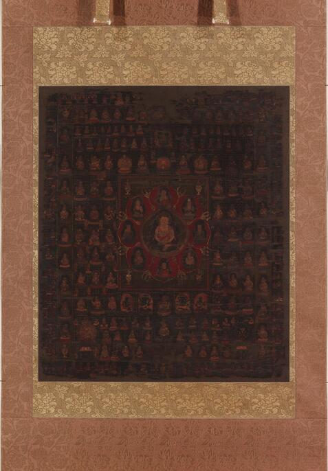
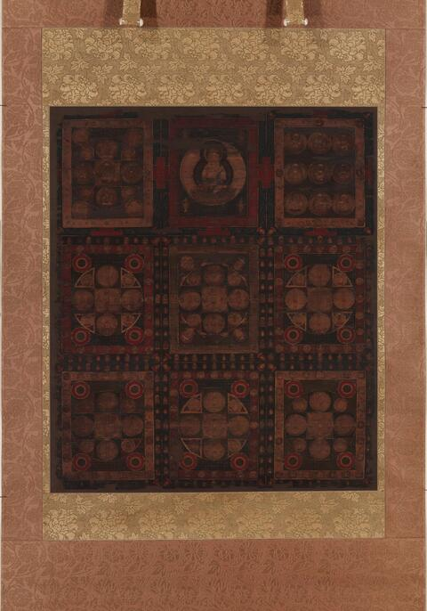

真言密教は、仏の智慧を、自分の身体や生きている世界と結びつけて学ぶ教えである。ここでいう智慧は、物事を思い込みでなく正しく見抜く力。見る、聞く、声を出す、身体を動かすという実践を通して、仏と自分の関係を確かめ、迷いを離れ、他者の苦しみに応えていく。世界の成り立ちを考えることと、身体・ことば・心を用いて修行することが、ひと続きになっている。金剛峯寺「高野山真言宗とは」
「世界の本質は何か」と考えると、目に見えるものの奥に、別の何かが隠れていると思いたくなる。しかし密教は、探している自分と、触れている世界、そして他の人との関係も問い直す。これらは互いに無関係に成り立っているのか。世界を知ることは、自分の生き方にどうつながるのか。空、六大、曼荼羅、真言、三密、即身成仏を順に学びながら、この問いを考えてみよう。
1 「密」とは、何が秘密なのか
密教の教えや修法（儀礼や瞑想の具体的な方法）は、師から弟子へ伝えられる。書物で知ることと、師から伝授を受けることには違いがある。ただし「密」は、情報を隠していることだけを意味しない。『大日経疏』は、深い真理が知られないのは、仏が隠すからではなく、衆生（迷いの中にある生きもの）の迷いが理解を覆うからだと説明する。空海の『吽字義』にも、この考えが取り入れられている。『大日経疏』巻7、大正蔵39巻651c19–25、『吽字義』大正蔵77巻405a13–20
身近な例を置くなら、ある言葉の辞書的な意味を知っていても、その言葉が自分の生き方を変えるほどに分かるとは限らない。「感謝」という語を説明できることと、支えられていることを深く感じることには距離がある。これは密教の悟りそのものを説明する例ではないが、説明を知ることと、実践を通して確かめることの違いを考える入口になる。
空海は、顕教と密教を区別して、密教の特色を説いた。この比較は教判（教えを分類し、評価すること）と呼ばれる。「顕教は表面的で、密教だけが深い」という評価は、空海が自分の教えを位置づけるための主張であり、すべての仏教者に共通する評価ではない。他宗派にも独自の思想と実践がある。そこで、優劣の言葉だけを覚えるより、真言密教が何をどう説明するのかを具体的に学びたい。金剛峯寺「密教と真言宗」
2 大日如来と法身説法 — 世界が教えを表す
真言密教の中心となる仏が大日如来である。大日如来は、世界の外から世界を作る神としてではなく、あらゆる存在に関わる真理を表す仏として説かれる。その仏の真実のあり方を法身と呼び、真理を表す仏を法身仏と呼ぶ。そして、法身そのものが智慧を説いているという考えが、法身説法である。法界という語は、その真理の世界を指す。金剛峯寺「高野山真言宗とは」
教えを聞くとき、普通は「教える人が言葉を使って、ある物事を説明する」と考える。空海の『声字実相義』は、教えが現れる場をもっと広く見る。色・声・香・味・触・法、つまり見えるもの、音、香り、味、手ざわり、心が捉えるものにも、教えが表れると考える。目に見える形や聞こえる音も、智慧を学ぶ手がかりになる。悟るために、感覚の対象をすべて捨てるという説明だけでは捉えられない。『声字実相義』大正蔵77巻401c07–17、402b09–22、402c20–22
ただし、風の音から思いついた意味を、そのまま「仏がこう言った」としてよいわけではない。法身説法を理解するには、経典や受け継がれた教え、修行を学び、智慧と慈悲に照らして確かめる必要がある。自分に都合のよい連想と、仏の教えを理解することを分けて考える。
真言は、サンスクリットのマントラに対応する語で、「仏の真実のことば」と説明される。その意味を辞書で調べるだけでなく、声に出し、身体と心を用いて実践する。空海の問いは、言葉が現実とどう関わるか、声を出す身体がどう関わるか、語る者と聞く者がどんな関係にあるかへ広がる。真言を学ぶことには、この関係を確かめることも含まれる。大覚寺『般若心経秘鍵』に学ぶ⑩
3 「空」は何もないという意味か
まず、空の意味を押さえよう。空は「何も存在しない」という意味ではない。大乗仏教では、どんなものも、原因や条件を必要とせず、自分だけで成り立つ本体を持たないと考える。この独立した本体を自性（他の条件に頼らず、それだけで成り立つ本体）と呼び、それがないことを無自性という。『中論』は、条件によって成り立つことと、無自性であることを結びつける。また、物事を仮に名づけて語ることを認め、有と無の一方に決めつけない中道へつなげる。『中論』巻4・観四諦品、大正蔵30巻33b11–21
たとえば一杯のお茶は、水、茶葉、温度、容器、作る人の働きなど、多くの条件と関係して成立している。飲む人にとっての味わいにも、体調や記憶、場面が関わる。この例は、物の成立と経験の成立を考えやすくするためのものだ。「条件と無関係なお茶の本体」をどこかに置く必要はないし、だからといって、お茶を飲む経験が一切なくなるわけでもない。
空を「さまざまな物の奥にある、唯一の本当の物質」と考えると、空を新たな固定した本体にしてしまう。『中論』は、空にもそのように執着しない。したがって、空の世界が先にあり、そこへ人間が色を塗って現実を作るという説明は、考える助けになる面があっても、そのまま仏教の教えとはいえない。空という土台と、色を塗る人間を、それぞれ独立した本体として残してしまうからである。『中論』同33b15–19
『般若心経』は、色と空の関係を述べた後、受・想・行・識も同じだと続ける。受は快・不快などを感じる働き、想は何であるかを捉える働き、行は意志や習慣などの働き、識は認識する働きである。見られる物だけでなく、感じたり考えたりする自分も、条件と無関係な、変わらない本体としてはつかめないと読む。『般若波羅蜜多心経』大正蔵8巻848c06–11
用語の混同を防ぐため、ここは分けておきたい。
| 用語 | 何を区別しているか | 混同しやすい点 |
|---|---|---|
| 五蘊 | 色・受・想・行・識という、身体と心の諸要素 | 色が感情や認識のすべてを意味するわけではない |
| 六根 | 眼・耳・鼻・舌・身・意という、認識に関わる側 | 六大とは別の分類 |
| 六境・六塵 | 色・声・香・味・触・法という、認識の対象 | この色は視覚対象という文脈で使われる |
| 六大 | 地・水・火・風・空・識という、密教の存在理解 | 空大と空性を同じ言葉として扱わない |
同じ「色」でも、五蘊（身体と心の五つのまとまり）の中では、身体や物質の側面を指す。六境（認識する六つの対象）の中では、目で見える対象を指す。「色は人それぞれの感覚」とまとめる前に、どちらの分類で使っているかを確かめよう。字が同じでも、その場で説明しているものは違う。『般若心経』848c06–12、『声字実相義』402c20–22
4 六大 — 物と心を分けきらない
空海は『即身成仏義』で、地・水・火・風・空・識の六大を説く。初めの五つは、土や水などの材料を数えるだけの語ではない。密教では、世界、仏、衆生（生きもの）の成り立ちを説明する要素として用いられる。そこに識（認識する働き）が加わる。物の成り立ちを、心の働きから切り離さずに説くところに注目したい。『即身成仏義』大正蔵77巻381c28–382c16
『即身成仏義』は、物質の側面である色と、心との違いを認めながら、両者は互いを妨げず、切り離せないと論じる。問いは「物が先か、心が先か」の一択だけではない。「無色の世界が先にあって、その後に人の認識が意味を足す」とだけ説明すると、この相互の関係を取りこぼしてしまう。
六大の識は、「頭の中にある私の意見」だけを指すものでもない。好き嫌いによって世界の受け止め方が変わることはあっても、空海はそれだけを説明しているのではない。六大は、仏、生きもの、世界に通じる成り立ちを説く。現代の意識哲学と比べるなら、まず双方の「意識」「識」が何を意味するかを確かめ、同じ言葉に置き換えてしまわないことが必要になる。
松村力は、井筒俊彦が真言密教を、言葉と世界の関係から読み解いたことを検討している。その見方を評価しながらも、「六大とことばは同じものだ」とすると、空海の説明からずれる点があると指摘する。たとえば「言葉によって、世界の中に区切りが生まれる」という説明だけで、六大から即身成仏までを言い切ることはできない。現代の哲学と比べる時に、原典の意味を残すための手がかりになる研究である。松村力「井筒俊彦の真言密教解釈について」2017、特に54–55頁
5 四曼 — 同じ世界を、姿・しるし・ことば・働きから見る
六大は、世界や心が何から成り立つかを説明する。四種の曼荼羅、略して四曼は、その世界や仏の智慧が、どのような姿や働きで現れるかを説明する。曼荼羅は精緻な仏画だけを指すのではなく、仏の姿、しるし、ことば、働きまで含めて考えられる。『即身成仏義』382c17–383a07


絵の前では、まず中心を探してみよう。次に、仏が手にするもの、指の形、周囲との配置へ視線を移す。規則的に描かれた仏たちは、密教の世界を目でたどる入口になる。胎蔵曼荼羅は『大日経』、金剛界曼荼羅は『金剛頂経』に基づく。東京国立博物館・両界曼荼羅図
| 四種 | 読み | 主に表すもの |
|---|---|---|
| 大曼荼羅 | だいまんだら | 仏・菩薩の姿や、その姿を表す像 |
| 三昧耶曼荼羅 | さんまやまんだら | 蓮華、剣、金剛杵など、尊格を示すしるしや印 |
| 法曼荼羅 | ほうまんだら | 種子（仏や菩薩を一字で表す梵字）、真言、経典のことばなど |
| 羯磨曼荼羅 | かつままんだら | 仏・菩薩のさまざまな行為や働きなど |
四曼の四つは、互いに関わっている。一つの仏にも、姿があり、持ち物や手の形があり、教えを表すことばがあり、人々を助ける働きがある。どれか一つだけを見て終わるより、それぞれがどうつながるかを考える。同じ仏を、姿・しるし・ことば・働きから学ぶための分類である。
これは鑑賞の際にも役立つ。仏像の表情や姿勢を見る。手にするものが何を示すかを考える。その仏に関わる真言や教えを知る。そして、どのような救済の働きが表されているかを考える。四曼を暗記項目としてではなく、注意を向ける方向として用いると、像と教えの関係が見えやすくなる。
6 三密 — 身体・ことば・心をともに用いる
三密は、仏の身体・ことば・心の働きである。真言行者（真言密教を修行する人）も、身体で印（教えを表す手の形）を結び、口で真言を唱え、心を本尊（礼拝・観想の中心とする仏など）へ向けて集中する。この深い集中の境地が三摩地（一つの対象に心を深く集中させる状態）である。修行する人の身・ことば・心が、仏の三密と応じ合うことを三密加持（仏と修行する人の、身体・ことば・心の働きが応じ合うこと）と呼ぶ。三つを一緒に用いることが、修行の中心になる。『即身成仏義』383a08–14
『即身成仏義』は、仏の大悲（生きものの苦しみを取り除こうとする大きな慈悲）と、修行する人の信心が、互いに応じ合うことを加持（仏の慈悲と、修行する人の信じる心が応じ合うこと）と説明する。仏から力を受け取ることに加え、それを受けとめる人の心も関わる。金剛峯寺も、本尊と行者の身・口・心が互いに応じ合い、一体となる境地として説明している。『即身成仏義』383b25–29、金剛峯寺「三密加持・入我我入」
入我我入（にゅうががにゅう）は、「仏が我に入り、我が仏に入る」という意味。本尊と修行する人の身・ことば・心が応じ合い、一体となる境地を表す。仏の智慧をこの三つの働きに明らかにする実践は、他者を救い、幸せにする行いへ結びつく。金剛峯寺「入我我入と利他行」
この構造を日常生活に照らせば、頭では相手を大切にしようと思いながら、口では傷つけ、身体では背を向ける、といった不一致を見直すきっかけになる。ただし、日常の振り返りと、伝授された密教の修法は同じものではない。日々の行いを整えるという受け取り方と、儀礼・観法を正式に修めることは、それぞれの意味を保って理解したい。
阿字観は、梵字の阿を手がかりに観想（心の中に対象を思い描いて観じること）を行う実践である。金剛峯寺は、僧侶が指導する呼吸法・瞑想法として案内している。頭を空白にすることだけを目標にせず、阿の字が何を表すかを学び、それをどう観じるかを合わせて習うと、教えと実践がつながる。金剛峯寺「阿字観」
原文 · 空海『吽字義』、大正蔵77巻404c
若法攬因縁成則自無有性。是故爲空。
読み下し 若し法、因縁を攬って成ずれば、則ち自ら性有ること無し。是の故に空と為す。
読み もしほう、いんねんをとってじょうずれば、すなわちみずからしょうあることなし。このゆえにくうとなす。
意訳 物事がさまざまな原因や条件によって成り立つなら、他の条件に頼らず、それだけで成り立つ本性はない。だから「空」と呼ぶ。
文脈に沿った解釈 空海の『吽字義』は、阿字に有・空・不生の三つの意味を読む。条件がそろって物事が成り立つという面が有。その物事が、条件から独立した本体を持たないという面が空である。本不生も、物事の成立を否定するのでなく、その独立した本体が生まれるという考えを問い直す。宮坂宥勝は、本不生を「世界を最初に生み出した原因」のような本体とする解釈を批判し、縁起（条件による成立）と無自性（独立した本体がないこと）から検討している。本不生の解釈には伝統内でも歴史があるため、「始まりのない永遠の何か」とだけ説明するのは慎重に考える必要がある。『吽字義』404c21–405a12、宮坂宥勝「阿字本不生再考―空を問う」1998
ひとことで 条件がそろうと物事は生じる。しかし、条件と無関係な本体が、それだけの力で生まれるわけではない。阿字の「不生」は、この二つを一緒に考える入口になる。
7 即身成仏 — この身体から離れずに、何が変わるのか
即身成仏は、この身において仏の智慧を明らかにする教えである。その可能性を、六大・四曼・三密が説明する。六大は仏・生きもの・世界の成り立ちを、四曼は仏の智慧の現れ方を、三密は身体・ことば・心による実践を説く。仏と自分と世界が無関係にあるのではなく、そのつながりが実践を通して明らかになると考える。身体を捨て、別の場所の仏になることだけを目指す説明とは異なる。『即身成仏義』381c17–27、383b25–383c08
「この身のまま」とは、今の思い込みや振る舞いを、何でも正しいと認めることではない。悟りの可能性が備わっていることと、その智慧が実際に働いていることは違う。だから、真言を唱え、教わった対象を観じ、身・ことば・心で仏の働きに応じる修行をする。身体を捨てずに悟りを求めながら、迷いは離れていくと読む。
即身成仏と即身仏は、別の言葉である。即身成仏は、この身で仏の智慧を明らかにするという教義。即身仏は、遺体が保存された仏教者を指して使われる。ここで学んでいるのは、遺体の保存ではなく、仏と修行する人の関係、智慧、実践についての教えである。
仏の智慧を生きることは、一人で特別な感覚を楽しむことだけではない。『大日経』は、菩提心（悟りを求める心）を出発点とし、慈悲を根本に置き、方便（相手の状況に合った方法で導く働き）へつなげる。密教の修行で何を学んだかは、他者の苦しみにどう応えるかにも表れてくる。『大日経』住心品、大正蔵18巻1b29–1c02
8 「世界は捉え方で変わる」という直観を、さらに確かめる
同じ出来事でも、執着や恐れによって違って経験される。その意味で、世界の受け止め方を問い直すことは、仏教を学ぶよい入口になる。『大日経疏』には、自分で恐ろしい姿を描き、その絵を見て自分で恐怖に陥る画師の譬喩がある。自分がつくり出した理解に、自分自身が縛られる、という洞察と響き合う。『大日経疏』651c19–24
自分の受け止め方が経験に関わることと、世界のすべてを私の意識だけが作ることは、別の主張である。後者を結論するなら、そのための根拠が必要になる。仏教では、「作っている私の意識」も、条件から独立した本体としてはつかめるかを問う。空を無地の土台、識をそこへ色を塗る人と考えると、土台と人の両方を固定した本体にしてしまう。
密教を通して「本質の本質」を知りたいなら、まず自分の問いを具体的にしてみよう。何を、条件と無関係な変わらないものとして考えているか。言葉で名前を付ける時、どんな違いを見て、何を見落としているか。身体・ことば・心は同じ方向へ向いているか。理解したことが、人への接し方をどう変えたか。こうした問いから、隠れた別の物を探すこととは違う学びが始まる。
世界の説明を読んだら、それが自分の行動とどうつながるかまで確かめる。真言密教には、そのために仏像、声、身体の動作、観想（対象を心に思い描いて観じること）などの入口がある。この全体像を持って『般若心経秘鍵』を読むと、空海が短い経文の意味だけでなく、真言を唱えることや修行へつなげて読んだ理由が見えやすくなる。
9 阿息観・阿字観を、一生の実践へつなぐ
教えを長く支えにするには、読むことと、繰り返し行える実践を結びつけるとよい。ここでは、息を観察すること、阿の音に親しむこと、阿字を観じることを分けて学ぶ。注意を向ける対象や作法が異なるので、名前が似ていても同じ方法とは決めない。
| 実践 | 注意を向ける中心 | 阿字観との関係 |
|---|---|---|
| 随息観 | 自然な息の出入り | 呼吸を見つめ、心の動きに気づく入口 |
| 阿息観（あそくかん） | 呼吸と阿の音・意味 | 阿字観へ進むための前行としても教えられる |
| 阿字観（あじかん） | 梵字の阿を本尊とする観想 | 阿字の教えと、自心・仏との関係を観じる |
この整理は、薬師院の公開解説と高野山大学の授業計画に基づく。大学の「阿息観」の授業は、阿字観に先立つ実践として、教えと実習の両方を扱う。息を長く吐けるかだけでなく、阿の音と、その文字が示す教えをどう結びつけるかを学ぶ道として読む。薬師院「密教瞑想法・阿字観について」、高野山大学・2013年度「企画科目〈阿息観〉」、PDF46頁
公開講習でも、阿息観の説明には違いがある。久光院は、阿を声に出すことで、対象を心に思い描きやすくする方法を紹介している。興正寺は、くつろいで息の出入りを意識し、そこへ阿を重ねると説明する。息、声、心に描く対象がどう結びつくかを、その寺の先生から一緒に学ぶとよい。久光院「阿息観」、興正寺「阿息観」
公開された作法を、混ぜずに読む
原文 各寺院の短い説明を並べると、共通する方向と、具体的な作法の違いが見える。
| 公開資料 | 原文の短い抜粋 | そこから読める範囲 |
|---|---|---|
| 不動院・阿字観 | 「目は半眼」「お腹で少し息を留めたら」 | 姿勢・手印・調息・観想・出定を含む、一つの具体的作法を公開している |
| 薬師院・随息観 | 「自然な呼吸を見つめます。」 | この説明の中心は、自然な息と心の動きを観察すること。手印や保息を指定してはいない |
| 久光院・阿息観 | 「阿字を口に出すことにより」 | 阿を実際に発声し、阿字観のイメージを助けると明記している |
| 興正寺・阿息観 | 「呼吸のはじまりの音」 | 呼吸に阿をのせると説明する。声量や、無声で行う場合の細かな規定までは書かれていない |
文脈に沿った解釈 不動院が紹介する阿字観と、薬師院が説明する随息観は、異なる方法である。薬師院の随息観の説明に手印（手で結ぶ形）や保息（息を留めること）が書かれていなくても、同院のあらゆる方法で用いないとは判断できない。公開文に書かれた範囲を確かめ、実践では習った寺の一組の作法に従う。一般向けの体験会があることは分かるが、伝授や資格についてのすべての規則までは、これらのページだけで決められない。
ひとことで 自然な呼吸を見つめる練習、阿を声にする練習、阿字を観じる実修を区別する。覚えた一つの作法を続け、ほかの作法との違いは先生に尋ねる。
家で始めるための、姿勢・息・声・観想
以下は寺院が公開する入口を参考にした、家庭で親しむための組み立てである。一寺院の正式作法をそのまま再現したものではない。阿字観を習った人は、印の結び方、観想、始め方と終え方を含め、習った一つの手順に沿って続ける。
まず、無理なく座る。 不動院の公開作法には、正座のほか椅子に座る形もある。背筋を整え、肩の力を抜き、視線は少し下へ落とす。家では、座面が安定した椅子を選び、手を楽に置くところから始めればよい。印を教わっている場合は、その形を用いる。身体を固めて理想の姿勢を保つことより、落ち着いて息に注意を向けられる座り方を探す。不動院「阿字観の進め方・調身」
次に、息がどう動いているかを知る。 初めから長い息を作ろうとせず、吸う、吐くという動きを静かに見つめる。薬師院の指導は、考えが浮かんだら良し悪しを採点せず、その動きに気づいて呼吸へ戻る、というものだ。何も考えなかった時間を競う必要はない。考えていたと気づき、戻ること自体を丁寧に行う。薬師院「随息観」
阿息観では、その息と阿の音を結ぶ。 初めてなら寺院の体験で音の出し方を確かめ、家では教わった響きを小さな声でも丁寧にたどる。久光院が公開する入口は、阿を実際に声に出して観想を助ける方法である。声を長く保つことや、大音量にすることを達成目標にしない。苦しくなる前に自然な呼吸に戻り、息止めや強い呼吸操作は、この家庭での入口には加えない。久光院「阿息観」
阿字観へ進む時は、字の姿と教えを合わせて学ぶ。 阿字観では、平仮名の「あ」を想像するだけでなく、梵字の阿を本尊（観じる中心となる仏の姿）として用いる。その文字が示す本不生の教えと、自分の心との関係を観じる。阿の字、本尊、月輪（円い満月の形）をどう観じるかは、寺で示された形と手順に沿って確かめる。金剛峯寺も、僧侶の指導による体験として案内している。不動院「真言禅・阿字観」、金剛峯寺「阿字観」
終わりには、生活へ戻る時間を取る。 不動院は、身・息・心を整える段階に続けて、普段の状態へ戻る出定を置いている。家庭での短い練習でも、急いで立ち上がらず、視線を戻し、身体の感覚を確かめてから次の行動へ移る。この最後の一呼吸を、今日の言葉や振る舞いへつなげる。不動院「阿字観の進め方」
三分から始め、習ったことを十分の時間へ置く
まず、毎日の決まった場面で三分の時間を取ってみる。姿勢を整え、自然な呼吸を観察し、最後に次の行動を一つ決める。「今から送る返事を一度読み直す」「食事中は画面を閉じる」などでよい。三分は、古典が定める修行時間ではなく、日々続けるための目安としての提案である。
寺院で阿息観や阿字観を習ったら、朝などに十分ほどの落ち着ける時間を確保してみる。ただし、正式な手順を勝手に省略して十分に合わせるという意味ではない。習った作法に必要な時間を確保し、疑問や難しさは次に指導を受ける時に尋ねる。家での繰り返しと、指導者のもとでの確認が、一度きりの体験を長い実践へ変えていく。
生活への応用も具体的に考えられる。怒りを感じたら、息を使って怒りを消そうとする前に、「今は怒っている」と気づいて返答を一呼吸遅らせる。仕事の前なら、姿勢と息を整えた後に、目の前の一件へ着手する。就寝前なら、その日の評価を延々と続ける代わりに、短く呼吸へ戻って一区切りとする。いずれも教義から考えた生活上の応用例であり、怒りの原因を放置したり、睡眠の効果を保証したりする方法ではない。続け方と具体例は、第5篇「実践と探究」で詳しく扱う。
「真理として信頼する」とは、どういうことか
阿字観を一生の支えにしたいと思っても、最初からすべてを説明できる必要はない。教えを学び、作法を習い、自分の心や日々の行動を確かめる。その積み重ねの中で、教えへの信頼が深まることがある。
静かに座って落ち着いたことは、自分の経験として大切にできる。ただし、その一回で六大や即身成仏が科学的に証明されたとは言えない。教えが何を述べるか、実践で何を感じたか、生活のどこに変化があったかを、それぞれ確かめる。特別な感覚だけでなく、思い込みに気づいたか、言葉が穏やかになったか、他者の苦しみに応える行動があったかも見たい。これは、菩提心（悟りを求める心）、慈悲、方便（相手に合った方法で導く働き）を結ぶ『大日経』の教えを、日々の学びへ引き寄せて考える方法である。『大日経』住心品、1b29–1c02
もう一段、本文の奥へ
気になった言葉を開く。原文の表現から意味をたどり、身近な場面へ戻して考える。
01大日如来と法身説法仏の智慧は、どこに、どう現れるのか
原本の表現
所謂聲字實相者。即是法佛平等之三密衆生本有之曼荼也
読み いわゆるしょうじじっそうは。すなわちこれほうぶつびょうどうのさんみつしゅじょうほんぬのまんだなり
声字実相義 · 401c13–15
文脈に沿って読む
法身は仏の真実のあり方を表す身。真言密教では大日如来を法身の仏として読み、その説法を法身説法という。人間の姿をとって歴史上の場面で語る教えを消すのではなく、仏の智慧の身そのものの働きにも教えを読む。
原文の声字実相は、声と文字とものの真実のあり方。それが法仏の平等な三密であり、衆生に本来具わる曼荼であると説明する。三密は仏の身・語・心の働き。曼荼はここでは本質に関わる表現で、曼荼羅という図の形だけに限定しない。
『即身成仏義』は大日尊の本来寂静の理と衆生の本性を結ぶが、衆生がその智慧に気づかないことも述べる。身・語・心を用いる実践へつながる理由がそこにある。世界に何かが現れていることと、私がその実義を知っていることを同じにしない。
中学生にもわかる説明
大日如来は、真言密教で世界の真実を表す仏である。空海は、仏の教えを「昔、仏が人々に話したこと」だけに限らず、仏の姿・ことば・働きにも表れるものとして考えた。
その教え方を法身説法という。法身（仏の真実のあり方）が、説法（教えを説くこと）をしている、という意味だ。仏像の姿、真言（仏の真実を表すことば）、仏の人々を助ける働きは、それぞれ真実を伝えるものとして学ぶ。
ただ眺めて「何となく分かった」で終わらず、身体・ことば・心を用いる修行を通して、その智慧（物事を正しく見抜く力）を自分にも明らかにしていく。ここに、密教が教えを読むことと実践することを結びつける理由がある。
生活で確かめる
仏像や曼荼羅を見る時、形を眺めることから、何を表しどのように人を助けるかへ注意を広げる。好きな意味をつけただけで、仏の智慧を知ったと判定しない。
持ち帰る問い 目の前の姿やことばが何を表しているか、どの根拠から理解しているだろう。
『声字実相義』401c07–15 ／ 『即身成仏義』383c17–22 ／ 金剛峯寺・法身説法と三密加持
この項目の問い合わせ文
真言・密教・顕教、大日如来と法身説法について中学生にもわかるように説明して。 原本の表現とその解説、さらにそれを中学生レベルにまで落とし込んだ解説 という構成で回答してください。 文字数は必要最大限で、本質を捉えながら遊び心を持たせながら文章に記すこと。 目的は『一生使える知識としてまとめること』です。
Proの解説を読む
真言・密教・顕教、大日如来と法身説法
— 「仏が真理を語る」から、「真理そのものが語っている」へ
真言密教を理解する鍵は、「仏の教えは、文章の中だけにあるのではない。世界の姿や音にも、自分自身の身体と心にも、仏の智慧が現れている」という見方です。そして、それを知識として理解するだけでなく、自分の生き方に現そうとします。東京大学21dzk
ただし、最初に大切な区別があります。
ここで説明する「顕教と密教」は、主として空海が自分の教えを位置づけるために示した区分です。仏教の全宗派が、この区分や優劣をそのまま認めているわけではありません。また、密教は真言宗だけにあるものではなく、日本の天台宗にも「台密」という伝統があります。東京国立博物館「天台の密教」・PDF5ページ目今回は、空海の真言密教を軸に読み解きます。web春秋 はるとあき
原文は、空海の著作などに伝わる漢文からの抜粋です。句読点を補い、一部の字体を読みやすくしています。「意味・解説」と「中学生向けの説明」は、その原文を踏まえた現代の説明です。
1．真言 — 「本当のことを言う言葉」より、もう一段深い
原文の表現
能呼諸法實相、不謬不妄。故名眞言。
――空海『声字実相義』。大正蔵77巻、402頁下段。東京大学21dzk
意味・解説
意味は、次のようになります。
「あらゆるものの真実のあり方を、誤りなく、偽りなく言い表す。それゆえに真言という。」
「諸法」は、さまざまな存在や現象。「実相」は、それらの本当のあり方です。したがって、ここでいう「真」は、単に「うそをついていない」という意味にとどまりません。仏が悟った真実と、その言葉が食い違っていないという意味です。東京大学21dzk
編集側の案内――迷悟の区別 原句・訓読・かなと文脈の説明は、このBOXの「Pro追補：如来秘密・迷悟・大日尊名」の②に掲載しています。
真言は、サンスクリット語の「マントラ」に対応する言葉です。寺院で唱えられる真言は、その具体的な形です。ただし空海は、真言を単に「決まった音の並び」として扱わず、その声・文字・表される真実がどう結びつくのかを考えました。SAT『大日経疏』巻一・39巻579頁
ここでは、二つの極端を避けると理解しやすくなります。
「意味はなく、音だけが不思議な力を発揮する」と考えるのでもなければ、「意味を日本語で説明できれば、声に出すことには意味がない」と考えるのでもありません。真言密教では、意味を理解すること、声にして唱えること、仏の境地を心に観じることが結びついているのです。東京大学21dzk
中学生にもわかるように言うと
「ありがとう」という言葉を考えてみてください。
辞書に書かれた「感謝を表す言葉」という説明を読むことと、大切な人から、本当に感謝のこもった声で「ありがとう」と言われることは、同じではありません。
言葉は、情報を運ぶだけでなく、その人の心や、相手との関係を、実際に形にすることもあるからです。
もちろん、普通の「ありがとう」がそのまま正式な真言というわけではありません。しかし、言葉を「意味の入った箱」としか見ないと、真言の理解は途中で止まります。
入口としては、こう覚えてください。
真言は、仏の悟りを説明するためだけの言葉ではなく、その悟りに、自分の声と心で近づいていくための言葉。
「唱えたら、望みが自動で実現する魔法のパスワード」とだけ考えるより、ずっと本質に近い理解です。東京大学21dzk
2．顕教と密教 — 違いは「公開授業か、秘密授業か」だけではない
原文の表現
應化開説、名曰顯教。
法佛談話、謂之密藏。
――空海『弁顕密二教論』巻上、冒頭から抜粋。大正蔵77巻、374頁下段。東京大学21dzk
意味・解説
大づかみに訳すと、こうなります。
「人々に応じて姿を現した仏が教えを説くことを、顕教という。法身の仏が語ることを、密教という。」
「応化」は、人々を導くため、その相手に応じた姿ではたらくこと。「法仏」は、後で説明する「法身の仏」です。空海はさらに、顕教を「相手の理解力や状態に応じた教え」、密教を「仏自身が悟っている智慧の境地を説く教え」と説明しています。東京大学21dzk
つまり、対比の中心は次の二つです。
顕教では、仏が、受け手に合わせて真理を示す。
密教では、仏が、自ら悟っている真理そのものを表現する。
ここでいう仏の内側の悟りを、内証〈ないしょう〉といいます。「自分で証明書を発行する」という意味ではなく、仏がみずから実現し、直接知っている境地です。密教の経典は、その悟りの世界を仏とその眷属が表し合うものとして位置づけられます。東京大学21dzk
ただし、「顕教は理屈だけ、密教は体験だけ」という区分ではありません。
顕教と呼ばれる仏教にも、修行・瞑想・悟りへの実践があります。逆に、密教にも緻密な理論と膨大な文章があります。空海自身が、これだけ理論的な著作を書いていることからもわかります。問題は「勉強か実践か」ではなく、仏の悟りを、どのような表現として受け取り、どう実現するかなのです。高野山公式サイト
また空海は、密教を最も深い教えとして論じています。これは彼の宗教的・思想的な主張であって、「他の仏教が客観的に劣っていると確定した」という意味ではありません。web春秋 はるとあき
中学生にもわかるように言うと
音楽の先生を思い浮かべてください。
初心者には、「ここはゆっくり」「この指を使って」と、その人に合わせて説明します。
一方で、先生が本気で一曲を演奏すると、音の強弱、間の取り方、響きそのものに、その人がつかんでいる音楽が現れます。
違いの一面をたとえるなら、
顕教は、「こちらに合わせて教えてくれる仏」に注目する見方。
密教は、「悟りそのものを表している仏」に注目し、その場に参加しようとする見方。
もちろん、顕教に演奏や実体験がないということではありません。あくまで、「相手に合わせて説明する面」と「実現しているものが、そのまま表現される面」を区別するためのたとえです。
密教の「密」を、ただ「会員限定」の意味にしてしまうと、空海が何に挑んだのかを見失います。
3．大日如来と法身 — 「ものすごく偉い一人の人物」ではない
原文の表現
大毘盧遮那佛者、是乃法身如來也。
――空海『声字実相義』。大正蔵77巻、404頁上段。東京大学21dzk
編集側の案内――大日尊という名の射程 原句・訓読・かなと文脈の説明は、このBOXの「Pro追補：如来秘密・迷悟・大日尊名」の③に掲載しています。
また、大日如来の名前について、『大日経疏』はこう説明します。
即除暗遍明之義也。
――『大日経疏』巻一・入真言門住心品、大正蔵39巻579a08。SAT『大日経疏』巻一・39巻579頁
意味・解説
最初の文は、
「大毘盧遮那仏とは、すなわち法身如来である。」
という意味です。「大毘盧遮那〈だいびるしゃな〉」は、サンスクリット名「マハー・ヴァイローチャナ」を漢字に写した呼び方で、大日如来を指します。東京大学21dzk
では、法身〈ほっしん〉とは何でしょうか。
ここでの「法」は、国会で決める法律ではなく、ものごとの真実のあり方や道理です。「身」は、肉体という意味に限りません。
したがって法身は、まず、「真理そのものとしての仏」と理解できます。真言密教では、その法身を、世界全体に智慧と慈悲をもってはたらく根本の仏として捉えます。それが大日如来です。単なる抽象的な法則ではなく、智慧と慈悲を備えた仏として信仰し、修行で向き合うのです。高野山公式サイト
このため、大日如来を「お釈迦様とは別の国で生まれ、修行した、もう一人の歴史上の人物」と考えると、話がずれます。また、「世界の外にいて、世界を製造した神様」という理解とも異なります。空海の思想では、仏と私たちと世界は、根本から無関係な別物ではありません。高野山公式サイト
なぜ「大きな日」と書くのか
二つ目の原文は、
「暗さを取り除き、あまねく明るくするという意味である。」
という説明です。
『大日経疏』は、普通の太陽と仏の智慧の光を比べます。普通の太陽には、照らせない場所があり、夜には光が届きません。しかし仏の智慧は、そのような場所や昼夜の制限を受けない、と説明するのです。SAT『大日経疏』巻一・39巻579頁
したがって、「大日」は、巨大な恒星という意味ではありません。
無知の暗さを取り除き、あらゆる存在を照らす智慧を、太陽の光にたとえた名前です。太陽との類似を用いてはいますが、物理的な太陽そのものを指しているのではありません。SAT『大日経疏』巻一・39巻579頁
中学生にもわかるように言うと
暗い部屋では、床にあるものが蛇なのか、ただのロープなのか、わからないことがあります。
明かりがつけば、「なんだ、ロープだったのか」と見え方が変わります。
仏教の智慧も、入口としてはこれに似ています。
ものが変身したのではなく、こちらの見誤りがほどけて、実際の姿が見えてきたのです。
大日如来は、「何でも見張っている巨大な人」というより、そうした智慧と、苦しむものを見捨てない慈悲を、仏の姿として捉えた存在です。真言宗豊山派
覚え方は、こうです。
お釈迦様を「真理に目覚め、歴史の中で教えた仏」と見るなら、大日如来は「その真理と智慧そのものを、仏として見る」方向の理解。
ただし、仏を真理として捉える「法身」の考え自体は、真言密教だけの専売特許ではありません。空海の重要な主張は、さらに一歩進んだ、「その法身が、説法する」という点にあります。東京大学21dzk
4．法身説法 — 口のない真理が、どうやって話すのか
原文の表現
五大皆有響 十界具言語
六塵悉文字 法身是實相
――空海『声字実相義』。大正蔵77巻、402頁中段。東京大学21dzk
意味・解説
読み下すと、
「五大に皆響きあり。十界に言語を具す。六塵ことごとく文字なり。法身はこれ実相なり。」
となります。
「五大」は、地・水・火・風・空という、世界を成り立たせる五つの要素。「十界」は、仏から迷いの中にいる存在までを含む、さまざまな生存の世界。「六塵」は、色や形、音、香り、味、触れるもの、心が対象とするものです。空海は、それらにも「響き」や「文字」を認めます。東京大学21dzk
ここでの最大の転換は、「表現するもの」を、人間の文章や発話だけに限定しないことです。
声だけではない。形も、色も、動きも、存在のあり方も、真実を表している。
その根底にある法身の表現を「説法」と捉えるのが、法身説法〈ほっしんせっぽう〉です。金剛峯寺の説明でも、これは真理そのものがその智慧を直接説くこととして示されています。金剛峯寺「高野山真言宗とは」
ここには、難しい問いがあります。
「究極の真理は、言葉や考えでは捉えきれないのではないか。だとしたら、法身が話すとはどういうことか。」
『弁顕密二教論』は、この反論を実際に取り上げています。空海は、法身は何も表さないという理解に対して、法身の説法を認める経論を示して答えます。東京大学21dzk
理解の手がかりとして言い換えるなら、
「普通の説明では言い尽くせない」ことと、「まったく表現できない」ことは、同じではない。
空海は、仏の悟りが真言・姿・はたらきとして現れる道を考えたのです。東京大学21dzk
中学生にもわかるように言うと
一枚の絵を見て、寂しさや喜びを感じることがあります。
絵には口がありません。それでも、何かを伝えています。
音楽も、「ここから悲しい気持ちになります」と説明しなくても、響きそのもので何かを表します。
空海は、それをもっと大きく考えます。
「世界の音や姿そのものも、真実を表しているのではないか。それを、仏の説法として受け取れないか。」
たとえば一輪の花は、「私は水や土や光との関係で咲いています」と日本語で説明しません。しかし、その咲いている姿そのものに、さまざまなものとの関係が現れています。
これは入口のたとえです。空海の法身説法は、「自然観察から教訓を得ましょう」というだけの話ではなく、世界のさまざまな表現を、法身の仏の智慧の現れとして捉える宗教的な世界理解です。東京大学21dzk
ですから、空から日本語の講義が聞こえるという意味でも、偶然の出来事を自分宛ての暗号として解読するという意味でもありません。
一生残すなら、ここです。
仏が、世界について語っているだけではない。
世界のあり方そのものが、仏の説法として現れている。
5．「密」なのは、誰かが隠しているからだけではない
原文の表現
衆生以無明妄想覆藏本性眞覺、故曰衆生自祕。
――空海『弁顕密二教論』巻下。大正蔵77巻、381頁中段。東京大学21dzk
意味・解説
意味は、
「生きとし生けるものは、無知や思い込みによって、本来の真の悟りを覆い隠している。だから、衆生が自ら秘密にしているという。」
となります。
「衆生〈しゅじょう〉」は、私たちを含む生きもの。「無明〈むみょう〉」は、ものごとの真実を明らかに見られないことです。ここでの「妄想」は、現代の医学用語ではなく、真実から離れた思い込みや分別を指します。東京大学21dzk
空海は、秘密に二つの面を認めています。
一つは、今の原文にある衆生秘密。自分の無知や思い込みが、本来の悟りを見えなくしていることです。
もう一つは、如来秘密。仏が相手に応じて説く教えでは、仏自身の悟りの境地を、そのまま全面的には明かしていないことです。東京大学21dzk
したがって、「密教の本が本屋で売られている。もう秘密ではないのでは？」という疑問に対しては、本が読めることと、その内容を実現していることは別だ、という答えになります。
ただし、実際の伝承でも、師から弟子へ修法を授けることや、灌頂〈かんじょう〉という儀礼は重視されます。「密とは深い意味のことだけで、伝授や制限は一切ない」という説明も正確ではありません。東京大学21dzk
中学生にもわかるように言うと
目の前に、すばらしい曲の楽譜が置いてあるとします。
隠されていません。写真も撮れます。文字も全部見えます。
それでも、音楽を学んでいない人には、その楽譜がどんな音楽なのか、十分にはわかりません。経験を積んだ演奏家なら、同じ紙から、音の響きや呼吸まで受け取れるかもしれません。
同じものが見えていても、同じ深さで受け取れているとは限らない。
「衆生自秘」は、このことを考える入口になります。
秘密は、必ずしも金庫の中にあるのではありません。
目の前にあるのに、それを受け取る自分の側が、まだ整っていないこともある。
真言密教の修行は、その「受け取る側」を変えていく営みでもあるのです。東京大学21dzk
6．三密 — 真言を唱えるだけで、終わらない理由
原文の表現
手作印契、口誦眞言、心住三摩地。
そして、そのはたらきを、
三密加持速疾顯
と表します。
――空海『即身成仏義』。大正蔵77巻、383頁上段、381頁下段。東京大学21dzk
意味・解説
最初の文は、
「手には印を結び、口には真言を唱え、心は深い瞑想に住する。」
という意味です。
ここでいう三密〈さんみつ〉は、次の三つです。
| 三密 | 人間の側で行うこと | 何を結びつけようとするか |
|---|---|---|
| 身密〈しんみつ〉 | 印を結ぶなど、身体を用いる | 仏の身体のはたらき |
| 語密〈ごみつ〉 | 真言を唱える | 仏の言葉のはたらき |
| 心密〈しんみつ〉 | 心を集中し、仏の境地を観じる | 仏の心のはたらき |
空海は、仏にも衆生にも三密があり、それらが互いに関わり、支え合うことを「三密加持」と説明します。単に人間が仏の形をまねるだけではなく、仏の慈悲と、修行者の信心・実践とが感応するという理解です。東京大学21dzk
加持〈かじ〉について、空海自身は、太陽と水のたとえを使っています。
仏の光が衆生の心という水面に映る面を「加」、その水面が仏の光を受けとめ、応じる面を「持」と説明します。つまり、一方的に何かを注入されることでも、自力だけで何かを作り出すことでもありません。東京大学21dzk
「三密加持速疾顕」は、この三密の感応によって、本来の仏のあり方が速やかに現れる、という趣旨です。ここから、この身体を捨てず、この身で仏の悟りを実現する「即身成仏」につながります。東京大学21dzk
ただし、「本来、仏と無関係ではない」ことと、「今の自分のあらゆる言動が、すでに仏の智慧である」ことは同じではありません。実際に智慧と慈悲を現していく修行が必要です。東京大学21dzk
中学生にもわかるように言うと
日常に引き寄せて考えてみます。
心では「人を大切にしたい」と思っている。
でも口では人を傷つけ、身体では相手を押しのける。
これでは、心・言葉・行動がばらばらです。
逆に、相手を思いやり、その思いに合った言葉を使い、実際に助けるなら、三つが一つの方向にそろいます。
真言密教の修行は、この方向をさらに深く、儀礼と瞑想を通じて進めます。身体・言葉・心を通じて、仏のはたらきに参加しようとするのです。東京大学21dzk
音楽に戻すなら、楽譜を眺めて「理解した」と言うだけでも、何も考えず指だけを動かすだけでもありません。
身体の動き、実際に出る音、心が捉える音楽が結びついたとき、演奏になります。
同じように、真言密教が目指すのは、単なる「仏についての物知り」ではありません。
仏の智慧と慈悲を、自分の身体・言葉・心に現すことです。真言宗豊山派
7．五つの言葉を、一本につなげる
ここまでを、役割の違いが見えるように整理します。東京大学21dzk
| 言葉 | 一生使うための意味 |
|---|---|
| 大日如来 | 真言密教で、世界に遍くはたらく真理・智慧・慈悲を体現する根本の仏。 |
| 法身説法 | 法身の仏が、その悟りを、声・姿・はたらきとして表現すること。 |
| 真言 | 仏の悟りの真実を表す言葉。それを自分の声で受けとめ、実践する道にもなる。 |
| 密教 | 仏自身の悟りの世界を、三密などの実践を通じて受け取り、実現しようとする教え。 |
| 顕教 | 空海の区分では、仏が受け手の状態に応じて示す教え。単に「理屈だけの仏教」ではない。 |
文章としてつなげるなら、こうなります。
大日如来という法身の仏は、その悟りを表している。これが法身説法である。その表現に、真言や姿やはたらきを通じて触れ、自分の身・口・心で応じていく。それが真言密教の実践につながる。東京大学21dzk
そして、最後に一つ、見失いたくないことがあります。
この思想は、「世界はすべて仏なのだから、何をしてもよい」という開き直りではありません。真言宗豊山派の説明でも、その目標は、本来の仏心を呼び起こし、仏のように心をもち、語り、行動することに置かれています。真言宗豊山派
だから、この知識を生き方に結びつける問いは、こうなります。
「仏について、どれだけ上手に語れるか」だけでなく、
「仏の智慧と慈悲を、自分の身・口・心に、どれだけ現せるか」。
真言は、口の中だけにあるものではない。
大日如来は、仏像の前だけで考える存在ではない。
自分が何を見て、何を語り、どう振る舞うか。その全体を、悟りへの道として捉え直す。
そこまでつながると、「真言・密教・顕教・大日如来・法身説法」は、ばらばらの暗記用語ではなくなります。
この解説の問い合わせ文
真言・密教・顕教、大日如来と法身説法の総論は別の会話で説明済みなので、原典上の不足を三小節だけ補ってください。①『弁顕密二教論』大正蔵77巻381b03〜07の衆生秘密と如来秘密、とくに「所以他受用身祕内證而不説其境也」の意味と前後関係。②『声字実相義』402c14〜16「若知實義名眞言、不知根源名妄語」の迷悟の区別を、世界の音や姿は何でも悟りの言葉と受け取れる、という誤読を避ける形で説明。③同404a13〜25の大日如来＝法身という導入と、報仏・応化仏・等流身にも大日尊の名が通じる後続説明の関係。三点とも必要最小限の原文と書名・位置・一次URL→意味訳と文脈→中学生にもわかる説明の順で、新漢文は読み下しとかなも添えてください。確認できない句や解釈を推測せず、前の真言・顕密・法身説法全体は再生成不要です。
Pro追補：如来秘密・迷悟・大日尊名
衆生秘密・迷悟・大日尊名 — Proの不足3点追補
① 衆生秘密と如来秘密 — 「気づかない」と「説き明かさない」は別
原文・位置・一次URL
『弁顕密二教論』巻下（T2427）、大正蔵77巻 381b03–07。以下は、そのうち両者の説明部分です。
一次本文：東京大学SAT
衆生以無明妄想覆藏本性眞覺故曰衆生自祕。
〔中略〕所以他受用身祕内證而不説其境也。則等覺希夷十地離絶。是名如來祕密。東京大学21dzk
読み下し（かな付き）
衆生（しゅじょう）、無明妄想（むみょうもうぞう）を以（もっ）て本性（ほんしょう）の真覚（しんかく）を覆蔵（ふくぞう）するが故（ゆえ）に、衆生自秘（しゅじょうじひ）と曰（い）う。
〔中略〕所以（このゆえ）に、他受用身（たじゅゆうしん）は内証（ないしょう）を秘（ひ）して、その境（きょう）を説（と）かざるなり。則（すなわ）ち等覚（とうがく）には希夷（きい）にして、十地（じゅうじ）には離絶（りぜつ）す。是（こ）れを如来秘密（にょらいひみつ）と名（な）づく。
意味訳と文脈
前半は、「衆生が、無知と誤った思い込みによって、本来の真実の悟りを覆い隠している。それゆえ、衆生が自ら秘密にしているという」という意味です。隠している側は、ここでは衆生自身です。意識的な隠蔽というより、自分の迷いによって見えなくしている状態を述べています。東京大学21dzk
後半は、「そのため、他者を導くための仏身である他受用身は、自ら証した悟りを秘して、その境界を説かない。その境界は等覚には見聞できず、十地にも隔たっている。これを如来秘密という」という意味です。「希夷」は見聞できないこと、「離絶」は到達が隔てられていることを表します。ここでは、如来の内証を、他受用身の説法ではそのまま説き明かさないという区別があります。東京大学21dzk
問題の「所以」は、直前の、応化の説法は相手の機根に応じて薬を施すようなものだ、という説明を受けています。したがって、単に「人間には難しくてわからない」という受け手側だけの話ではなく、相手に応じた教化と、仏自身の内証の開示とは同じではないという文脈です。法身の説法まで否定する文ではありません。東京大学21dzk
さらに、この段落の前には「釈尊の経典や陀羅尼にも秘密という名があるのはなぜか」という問いがあり、後には、秘密という呼称には幾重もの使い方があるが、ここで究極の密蔵とするのは法身自身の境界だ、と続きます。「秘密」という名前が付いているだけで、すべて同じ内容・位置づけになるわけではないのです（381a23–b11）。東京大学21dzk
中学生にもわかる説明
たとえるなら、「自分の眼鏡が曇っていて見えない」のと、「先生が生徒に合わせ、専門的な内容をそのまま全部は話さない」のは別のことです。
この本文には、その両方があります。だから、密教の秘密をすべて「仏は隠していない。人間が気づかないだけ」と説明すると、後半の“説き明かさない秘密”が抜け落ちます。
② 「実義を知れば真言」 — 何でも好きに解釈してよい、ではない
原文・位置・一次URL
『声字実相義』（T2429）、大正蔵77巻 402c14–16。ご提示の句は、大正蔵本文では「則」を含みます。
一次本文：東京大学SAT
若知實義則名眞言。不知根源名妄語。妄語則長夜受苦。眞言則拔苦與樂。譬如藥毒迷悟損益不同。東京大学21dzk
読み下し（かな付き）
若（も）し実義（じつぎ）を知（し）れば、則（すなわ）ち真言（しんごん）と名（な）づく。根源（こんげん）を知（し）らざれば、妄語（もうご）と名（な）づく。妄語（もうご）は則（すなわ）ち長夜（じょうや）に苦（く）を受（う）け、真言（しんごん）は則（すなわ）ち苦（く）を抜（ぬ）き、楽（らく）を与（あた）う。譬（たと）えば薬毒（やくどく）の迷悟（めいご）に、損益（そんえき）不同（ふどう）なるが如（ごと）し。
意味訳と文脈
「真実の意味を知るなら真言と呼び、その根源を知らないなら妄語と呼ぶ。妄語は長い迷いの中で苦を受けることにつながり、真言は苦を除き、安楽をもたらす。薬と毒を見誤るか、正しく知るかによって、害と益が違うようなものである」という意味です。違いを生むのは、音の存在だけでなく、実義・根源を知るかどうかです。東京大学21dzk
直前では、まず深浅を区別する見方から仏界とそれ以外の言語の真妄を分け、真言を、諸法の実相を誤りなく表すものと説明しています。そのうえで、文字・名の根源を法身に置き、そこから世間に流布する言葉にまで説明を広げています（402c01–14）。したがって「実義を知る」とは、単に「自分にとって感動的な意味を思いつく」ことではありません。ここでの妄語も、単なる意図的な嘘に限らず、実相・根源を知らない言語のあり方を指しています。東京大学21dzk
また、「姿」に話を広げる場合も条件は消えません。後続の色の説明では、同じ色・形が、迷う者には執着や貪り・怒りを起こし、智慧ある者には因縁を観察し、衆生を利益する働きにつながる、と区別します（403c10–15）。つまり、世界の音や姿を実相の表現として論じることと、それに接した自分がすでに正しく悟っていることは別です。東京大学21dzk
中学生にもわかる説明
「教科書のどのページも学びの材料だ」としても、でたらめに読んだ答えまで正解になるわけではありません。
同じように、「世界のどこからでも学べる」と「自分が感じた意味は全部、仏の正しい教えだ」は違います。“意味を感じた”だけで終わらず、迷いや執着を離れる理解になっているかが重要なのです。
③ 大日如来＝法身 — ただし「大日」は法身だけの専用名ではない
原文・位置・一次URL
『声字実相義』（T2429）、大正蔵77巻 404a13–25。関係を示す句を抜粋します。
一次本文：東京大学SAT
大毘盧遮那佛者。是乃法身如來也。
――404a13–14若謂報佛亦名大日尊。故曰信解願力所生。
――404a15–16若謂應化佛或名大日尊。應化光明普照法界。故得此名。
――404a18–19若謂等流身亦名大日尊。分有此義故。
――404a22–23。東京大学21dzk
読み下し（かな付き）
大毘盧遮那仏（だいびるしゃなぶつ）とは、是（こ）れ乃（すなわ）ち法身如来（ほっしんにょらい）なり。
若（も）し報仏（ほうぶつ）をも亦（また）大日尊（だいにちそん）と名（な）づくと謂（い）わば、故（ゆえ）に信解願力（しんげがんりき）の所生（しょしょう）と曰（い）う。
若（も）し応化仏（おうげぶつ）を或（ある）いは大日尊（だいにちそん）と名（な）づくと謂（い）わば、応化（おうげ）の光明（こうみょう）、普（あまね）く法界（ほっかい）を照（て）らす。故（ゆえ）に此（こ）の名（な）を得（う）。
若（も）し等流身（とうるしん）をも亦（また）大日尊（だいにちそん）と名（な）づくと謂（い）わば、分（ぶん）に此（こ）の義（ぎ）あるが故（ゆえ）に。
意味訳と文脈
冒頭は明確に、「大毘盧遮那仏とは法身如来である」と述べます。ただし、この段落の話題は名称の定義だけではありません。直前に引用した『大日経』の仏の身体と国土を、本来的に成り立つ面と、条件に応じて現れる面から説明する流れに置かれています。法身の身体と国土は、法爾（ほうに）、すなわち法の本来のあり方として成り立つ、と説明されます（404a09–15）。東京大学21dzk
続く三つの「若謂」は、先の説明を撤回するのではなく、他の仏身についても「大日尊」と呼ぶ場合、その意味をどう理解するかを示しています。
報仏については、信解と願力によって生じる身体・国土として説明する。応化仏については、その光明が広く法界を照らすために、この名を得るとする。等流身については、大日尊と呼ぶ意味を「分に」、すなわち部分的に備えるためとし、その身体と国土の一時的な出現も説明する――という対応です（404a15–25）。名は通じても、各身の説明まで無差別にはしていません。東京大学21dzk
さらに、指定範囲の直後、404a25–28では、四種の身について、縦の区別では大小・粗細があり、横の見方では平等であると述べ、これらの身体と国土はいずれも法爾・随縁の二義を持つと総括します。したがって、「法身だけが本来的で、他の三身には随縁の面しかない」と固定するのも、段落全体には合いません。東京大学21dzk
中学生にもわかる説明
最初の一文は、「大日如来を根本から説明すると法身如来だ」という導入です。でも、その後には「別の現れ方でも、大日と呼ぶ理由がある」と続きます。
覚えるなら、「大日」は法身を説明する中心的な名だが、法身だけの専用名札ではない。名前の共通性と、現れ方・働きの区別を、両方残して読む。 この二点です。
02縁起・空・無自性・二諦日常の成立と、独立した本性の不在を一緒に読む
原本の表現
諸佛依二諦 爲衆生説法 一以世俗諦 二第一義諦
読み しょぶつはにたいによって しゅじょうのためにほうをとく いちにはせぞくたいをもって ににはだいいちぎたいなり
中論・観四諦品第24 · 大正蔵30巻32c16–17／龍谷大学公開資料・本文121頁
若法攬因縁成則自無有性。是故爲空。
読み もしほういんねんをとってじょうずればすなわちみずからしょうあることなし。このゆえにくうとなす。
吽字義 · 404c23–24
文脈に沿って読む
縁起は、ものが原因や条件によって成り立つこと。無自性は、それだけで独立して成り立つ本性がないこと。空はその無自性を示す。成立することと空であることを、存在する世界と存在しない世界の二つに分けない。『吽字義』は、因縁を集めて成り立つなら自ら性がない、だから空である、と理由をつなぐ。
二諦は二つの真理。世俗諦は、日常の言葉や関係の中で成り立つことに関わる。第一義諦、または勝義諦は、そのものを独立した本性としてつかめないという深い理解に関わる。『中論』観四諦品は、仏は二諦によって教えを説くとする。
空を理解しても、日常の言葉や行為が全部無意味になるわけではない。教えを説明するためにも言葉が必要である。同じものの成立をどう読むかという問題を、日常の世界を捨てて裏側の別世界へ行く話にしない。ここでは漢訳『中論』の入門的理解を示し、二諦をめぐる全学派の解釈を一つに固定していない。
中学生にもわかる説明
縁起とは、いくつもの原因や条件がそろって、ものごとが成り立つこと。花なら、種、土、水、光などがあって咲く。花だけで自分を生み出すわけではない。
この「他の条件を必要とせず、自分だけで成り立つ本体」を自性という。それを持たないことが無自性であり、そのあり方を空と呼ぶ。空は、花がなくて何も見えないという意味ではない。
二諦は、同じものを理解する二つの真理である。世俗諦（日常の言葉や関係の中で成り立つ真理）では、「花が咲いた」「水をあげよう」と話せる。第一義諦（その成り立ちを深く見た真理）では、条件から独立した「花そのもの」は見つからない。
花が空でも、水やりには意味がある。同じように、約束が人の合意や言葉で成り立つからといって、破ってよいことにはならない。条件に依存しているからこそ、行動が結果に関わる。
生活で確かめる
失敗を「私は永久にだめな人だ」と固定する代わりに、どの条件が関わったかを調べる。同時に、実際に起きた失敗と必要な対応を曖昧にしない。
持ち帰る問い 条件によって変えられることを、変えられない本性と思い込んでいないだろうか。
龍谷大学公開原典対照・『中論』第24章第8偈、本文121頁 ／ 『吽字義』404c21–29
この項目の問い合わせ文
縁起・空・無自性・二諦、世俗諦と勝義諦がどう両立するかについて中学生にもわかるように説明して。 原本の表現とその解説、さらにそれを中学生レベルにまで落とし込んだ解説 という構成で回答してください。 文字数は必要最大限で、本質を捉えながら遊び心を持たせながら文章に記すこと。 目的は『一生使える知識としてまとめること』です。
Proの解説を読む
縁起・空・無自性・二諦
— 「ある」のに「空」とは、どういうことか
まず、全体を貫く答えを置きます。
物事は、条件に依存して成り立っている。
だから、それだけで独立して成り立つ「自性」はない。
しかし、自性がないからといって、物事の働きまでなくなるわけではない。
「条件のもとで成り立っている」と、「何にも依存せず、それ自体で成り立っている」は、別のことです。ここを分けると、「存在するのに空である」という話が、矛盾ではなくなります。これが『中論』の議論を読む中心線です。GRETIL・ゲッティンゲン大学
以下では、まず初期経典の縁起を確認し、そこから龍樹〈ナーガールジュナ〉の『中論』を中心に、空と二諦へ進みます。仏教のすべての学派が、細部まで同じ説明をしているという意味ではありません。
「原本の表現」には、パーリ語・サンスクリット語の本文、または鳩摩羅什による古い漢訳を使います。漢訳に付された青目の注釈は、龍樹の詩句とは区別して示します。
1．縁起 — 「それがあるのは、条件があるから」
原本の表現
初期経典『相応部』12.61（Assutavā、PTS版第2巻94–95頁、定型句は95頁）には、次の句が出てきます。表記と改行を整えています。
imasmiṃ sati idaṃ hoti;
imassuppādā idaṃ uppajjati;
imasmiṃ asati idaṃ na hoti;
imassa nirodhā idaṃ nirujjhati.
意味訳：
これがあるとき、それがある。
これが生じることによって、それが生じる。
これがないとき、それはない。
これが滅することによって、それが滅する。
この箇所では、続いて無明を条件とする諸作用などが説かれ、苦しみの生起と消滅の説明につながります。単に「世界はなんとなくつながっている」という標語ではありません。GRETIL・ゲッティンゲン大学
解説 — 「単独で存在するもの」ではなく、「条件によって起こること」
縁起〈えんぎ〉とは、条件に依存して生じることです。
「原因もなく突然起こる」のでもなければ、「もともとの本質によって、何があっても同じ状態が続く」のでもない。ある条件のもとで起こり、その条件が変われば、起こり方も変わるという理解です。
ただし、ここでの「これ」と「それ」は、何でも好きに結びつけてよいわけではありません。
「私がくしゃみをした。だから遠くの国で雨が降った」という話ではなく、何が、何の条件として働いているのかを見極める必要があります。
また、「縁起」は運命論でもありません。むしろ、苦しみが条件によって起こるなら、その条件を見極め、苦しみの終わりを考える道が開かれる。この実践的な方向が、経典の文脈では重要です。GRETIL・ゲッティンゲン大学
中学生の言葉にすると
たとえば、昨日は解けなかった問題が、説明を聞き、例題を考え、練習したことで解けるようになったとします。
そこで起きたのは、
「解けない人間」が、魔法で「解ける人間」に交換された。
ということではありません。
理解を支える条件が変わったので、結果も変わった。
ということです。
縁起は、何か起きたときに、
「これは、どんな条件で起きているんだろう？」
と見る入口になります。
2．無自性 — 「特徴がない」のではなく、「自分だけで成り立つ本性がない」
原本の表現
『中論』第15章「観有無品」第1・2偈（大正蔵30巻19c22–28）。鳩摩羅什訳では、次のように述べます。
眾緣中有性 是事則不然
性從眾緣出 即名為作法性若是作者 云何有此義
性名為無作 不待異法成
意味訳：
さまざまな条件によって、自性が成立するというのは成り立たない。
もし条件から生まれたなら、それは作られたものになってしまう。自性が作られたものだというのは、どういうことなのか。
自性とは、作られず、ほかのものを待たずに成立するものだからである。CBETA『中論』電子本文
解説 — 自性とは、何を指しているのか
ここが、非常に大事です。
日常の「性質」という言葉には、「赤い」「硬い」「人懐っこい」など、さまざまな意味があります。
しかし、ここで龍樹が問題にする自性〈じしょう・svabhāva〉は、単なる特徴ではありません。
ほかのものに依存せず、それ自体によって成立する本性。
これが批判の対象です。
すると、論理はこうなります。
条件に依存して成立するものを、同時に「条件に依存せず成立するもの」とは言えない。
だから、縁起するものには、その意味での自性がない。これを無自性〈むじしょう〉と呼びます。GRETIL・ゲッティンゲン大学
したがって、無自性は、
「何の特徴もない」
「個性がない」
「何でも同じだ」
という意味ではありません。
区別できる特徴があることと、そのものが独立自存していることは別です。
中学生の言葉にすると
ここから、自転車を例に考えましょう。
自転車には、車輪、フレーム、ハンドルなどがあります。それらが一定の関係で組み合わさることで、自転車として使えます。
では、それらとは別に、
「これさえあれば、部品も組み立ても関係なく、自転車が自転車として存在できる！」
という、自転車だけで自立した本体が入っているでしょうか。
そういうものを想定する必要はありません。
ただし、だからといって、目の前の自転車が消えるわけではありません。
「部品や関係によって、自転車として成り立つ」ことは認める。
「部品や関係から独立した、自転車の絶対的な本体」は認めない。
この違いです。
なお、「自転車は仮の存在だが、部品だけは絶対的な実体だ」として終わるのでもありません。中観の検討は、その部品にも、さらにその成立条件にも及びます。GRETIL・ゲッティンゲン大学
3．空・仮名・中道 — 「存在を消す」のではなく、「存在のしかたを見直す」
原本の表現
『中論』第24章「観四諦品」第18偈。ここではサンスクリット本文を示します。
yaḥ pratītyasamutpādaḥ śūnyatāṃ tāṃ pracakṣmahe /
sā prajñaptir upādāya pratipat saiva madhyamā //
意味訳：
縁起であるもの、それを私たちは空と説く。
その空は、依存して設けられた名づけであり、それこそが中道である。GRETIL・ゲッティンゲン大学
解説 — 四つの言葉は、四つの別世界ではない
この偈では、縁起・空・依存した名づけ・中道が結びつけられています。
それぞれの焦点を分けると、次のようになります。
| 言葉 | 何に注目しているか |
|---|---|
| 縁起 | 条件に依存して成り立っていること。 |
| 空〈くう〉 | だから、独立して成立する自性がないこと。 |
| 仮名〈けみょう〉 | 依存関係を踏まえて、名前や概念によって示されること。 |
| 中道〈ちゅうどう〉 | 独立した実体を立てる側にも、何も成り立たないと否定する側にも陥らないこと。 |
ここでの空は、「自性を欠いている」ということです。「何もかもが完全な無である」という意味ではありません。
また、仮名の「仮」は、「インチキ」という意味ではありません。依存関係のなかで名づけられているのであって、名前を持つものすべてが無意味な虚構になるわけではないのです。GRETIL・ゲッティンゲン大学
この偈でもう一つ重要なのは、「空」そのものも、依存して設けられた名づけとして語られていることです。
空は、世界の裏側に隠れている究極の物質ではありません。「あらゆるものを生み出す、空という巨大な何か」を置いたら、それを新しい自性にしてしまいます。この点は、後でもう一度確認します。GRETIL・ゲッティンゲン大学
中学生の言葉にすると
自転車を見てみましょう。
「自転車」という名前は、車輪やフレームなどが一定の仕方で組み合わさったものを指しています。
名前だけが勝手に存在しているのでもなく、名前とは無関係な絶対的な自転車本体があるのでもありません。
もちろん、石に「自転車」と書いたシールを貼っても、乗れるようにはなりません。
名づけは、万能の呪文ではないからです。
そこで、次の両極端を避けます。
極端①： 自転車には、条件を離れて自立した絶対の本体がある。
極端②： 自転車に絶対の本体がないなら、自転車も移動も何も存在しない。
そのどちらでもなく、
条件に依存して、自転車として成り立っている。
これが、この例での中道です。
中道は、「自転車は半分だけ存在する」という折衷案ではありません。「ある」と「ない」を半分ずつ混ぜるのでなく、何を認め、何を否定しているのかを正確にするのです。GRETIL・ゲッティンゲン大学
4．二諦 — 「成り立つ」と「自立している」を分ける
ここが、今回の中心です。
原本の表現
『中論』第24章第8偈（大正蔵30巻32c16–17）。
諸佛依二諦 為眾生說法
一以世俗諦 二第一義諦
意味訳：
諸仏は、二つの真理に依拠して、人々に教えを説く。
一つは世俗諦、もう一つは第一義諦である。CBETA『中論』電子本文
解説① — 二諦は、どんな問題への答えなのか
『中論』第24章では、まず相手側から、こういう反論が出ます。
「あらゆるものが空なら、生じることも、滅することも成り立たないのではないか。そうなれば、苦しみ、その原因、その終わり、終わりへ向かう道も成り立たなくなるのではないか。」
これは、かなり自然な疑問です。
「全部が空です」と言われたら、
「では、苦しんでいる人も、助ける行為も、勉強も、努力も、全部無意味なの？」
と聞きたくなります。
それに対して龍樹は、相手が空の意味を取り違えていると指摘し、二諦を示します。つまり、二諦は、矛盾を棚上げするための仕組みではなく、空が何を否定し、何を否定しないのかを明らかにするために登場するのです。GRETIL・ゲッティンゲン大学
解説② — 世俗諦と勝義諦の違い
諦〈たい〉は、真理という意味です。
世俗諦〈せぞくたい〉は、世間で用いる言葉や区別、共有された実践のなかで成り立つ真実です。
「この自転車は修理が必要だ」
「この説明には誤りがある」
「ある行為によって、誰かが苦しんだ」
こうしたことを、日常の関係のなかで確かめ、扱います。
一方、勝義諦〈しょうぎたい〉は、漢訳では第一義諦〈だいいちぎたい〉とも呼ばれます。
今回の中観の説明では、物事の成立を究極的に検討すると、それ自体だけで成立する自性はないという真実です。『中論』に付された青目の注釈も、一切法が空であることを第一義諦の説明に結びつけています。CBETA『中論』電子本文
二つを並べると、こうなります。
| 問い | 自転車の例 | 二諦 |
|---|---|---|
| 関係や条件のなかで、何として成り立っているか。 | 部品が組み合わさり、自転車として使われている。 | 世俗諦 |
| それは、関係や条件を離れ、それ自体だけで成立しているか。 | そのような自性はない。 | 勝義諦 |
同じ質問に、正反対の答えを出しているのではありません。
解説③ — なぜ矛盾しないのか
矛盾になるのは、
「自転車は、まったく同じ意味で存在する」
「自転車は、まったく同じ意味で存在しない」
を同時に主張する場合です。
しかし、ここで述べているのは、
自転車は、条件に依存して成立している。
自転車は、条件から独立した自性によって成立してはいない。
です。
前者は、後者の否定ではありません。むしろ、条件に依存することが、そのまま独立自存を否定する理由になっています。これは、縁起を空と説く第24章第18偈のつながりです。GRETIL・ゲッティンゲン大学
ここを一言にするなら、
否定されるのは「成立」ではなく、「それ自体だけでの自立」です。
ただし、これは二つの見方が何でも同じように正しいという意味ではありません。勝義の検討は、日常の認識に混じる「物事は、それ自体で確固として存在している」という実体視を修正します。
また、世俗諦も「みんなが信じれば何でも真実になる」という意味ではありません。日常のなかでの正しい認識と間違った認識の区別まで、捨てるわけではないのです。CBETA『中論』電子本文
中学生の言葉にすると
先生が、自転車を指して言います。
「これは自転車です」
これは普通に正しい。
次に先生が言います。
「でも、部品や組み立てなどと無関係に、自分だけで存在する『自転車の本体』はありません」
これも、最初の発言とぶつかりません。
ところが、そこで生徒が、
「なるほど！ 自転車は空だから、ブレーキが壊れていても気にしません！」
と言ったら、話を取り違えています。
自転車に自性がないことと、ブレーキが働くかどうかは別の問題だからです。
空と理解しても、修理は必要です。
むしろ、条件によって働きが決まるからこそ、修理という条件に意味があります。
二諦は、「現実を捨てて、もう一つの世界へ行く」話ではありません。同じ現実について、働きを認めながら、自立した本体を思い込まないことです。
5．世俗諦を捨てると、勝義諦を伝えることもできない
原本の表現
『中論』第24章第10偈（大正蔵30巻33a02–03）。
若不依俗諦 不得第一義
不得第一義 則不得涅槃
意味訳：
世俗諦に依拠しなければ、第一義に至ることはできない。
第一義に至らなければ、涅槃に至ることはできない。
対応するサンスクリット本文の前半は、より直接的に、世俗的な言葉のやり取りに依拠しなければ、勝義は説けないと述べています。CBETA『中論』電子本文
さらに、青目の注釈（同33a04）には、
第一義皆因言說。言說是世俗。
とあります。
意味訳：
第一義を示すには、言葉による説明に依らなければならない。その言葉による説明は、世俗に属する。CBETA『中論』電子本文
解説 — 言葉は究極の実体ではない。それでも、言葉は必要である
ここには、とても大切な釣り合いがあります。
「空」「縁起」「勝義諦」という言葉も、私たちが共有して使っている言葉です。
それらは、究極的な何かをそのまま箱詰めにしたものではありません。しかし、だから無用だとは言えません。
言葉を使い、誤解を確かめ、説明を修正する。その世俗的な営みを通じて、実体視の問題を理解していきます。
したがって、
「勝義こそ本物だから、日常の言葉や区別は全部捨ててよい」
という態度では、勝義を説明する足場そのものが失われます。
他方、「空」という言葉を暗記しただけで、執着から自由になったことにもなりません。この偈は、第一義の理解と涅槃を結びつけています。単なる用語集を作ることが、最終目的ではないのです。GRETIL・ゲッティンゲン大学
中学生の言葉にすると
地図は、実際の街ではありません。
だからといって、
「地図は街そのものではない！ 偽物だ！ 捨てよう！」
としたら、道に迷うかもしれません。
反対に、地図を抱きしめて、
「これが街そのものだ。もう歩く必要はない」
としても、目的地には着きません。
言葉も同じです。
「空」という説明を使って、自分が何を実体として思い込んでいるのかを調べる。けれど、その説明自体を、新しい絶対物にはしない。
道具として使う。ただし、道具を目的地と取り違えない。
6．「空だから成り立つ」 — なぜ、空が因果や実践を壊さないのか
原本の表現
『中論』第24章第14偈（大正蔵30巻33a22–23）。
以有空義故 一切法得成
若無空義者 一切則不成
意味訳：
空という意味が成り立つからこそ、あらゆる事柄が成り立つ。
空でないなら、あらゆる事柄は成り立たない。
さらに第23偈（同33c07–08）では、苦しみについて述べます。
苦若有定性 則不應有滅
汝著定性故 即破於滅諦
意味訳：
苦しみに決定的な自性があるなら、それが滅することはないはずだ。
あなたは固定した自性に執着することで、苦しみの消滅という真理を、かえって壊してしまう。CBETA『中論』電子本文
解説 — 空は「何も起こらない」ではなく、変化と矛盾しない理解
相手は、
「空なら、苦しみがなくなるという教えも成立しない」
と批判しました。
それに対して龍樹は、
「むしろ苦しみが、条件から独立した自性によって存在するなら、どうやってそれを終わらせるのか」
と問い返します。
条件に依存しない苦しみなら、条件に働きかけても、その成立を変えられません。
しかし、苦しみが条件によって生じているなら、その条件との関係で、生起と消滅を考えられます。
だから、空は因果や修行の敵ではない。固定した自性を立てないことが、因果や修行を理解するうえで重要になるのです。GRETIL・ゲッティンゲン大学
ただし、ここで大きな飛躍をしてはいけません。
「空だから、願ったことは何でも実現する」ではありません。
空は、何かを生み出す魔法の力でも、成功を保証する法則でもありません。
「固定的な自性がない」と言うことと、「具体的な条件を無視できる」と言うことは、正反対です。何が起こりうるかは、具体的な条件を調べなければわかりません。
中学生の言葉にすると
「自分は、生まれつき絶対にこの問題を理解できない存在だ」
と考えたとします。
ここでいう「絶対」が本当に絶対なら、説明を聞こうが、練習しようが、何も変わらないはずです。
でも、
「いまは、必要な考え方をまだ理解していない」
なら、調べる場所があります。
どこでつまずいたのか。どの説明なら理解できるのか。何を練習する必要があるのか。
「いまの状態」は認める。
しかし、それを「永遠の本質」に昇格させない。
これが、無自性という理解を日常へ移したときの、一つの使い方です。
ただし、「無自性だから必ず満点になる」というお守りにはしません。そこで必要なのは、願望の強さではなく、条件への具体的な取り組みです。
7．空も空 — 「絶対的な空」という新しい本体を作らない
原本の表現
『中論』第13章「観行品」第8偈（大正蔵30巻18c16–17）。
大聖說空法 為離諸見故
若復見有空 諸佛所不化
意味訳：
大聖は、さまざまな見解への執着を離れさせるために、空を説いた。
それなのに、空が実体としてあるという見解を持つなら、諸仏にも教化できない。
直後の青目の注釈では、病気を治すための薬が、逆に病気になってしまう場合のたとえが使われます。CBETA『中論』電子本文
解説 — 空は「最後に残る物体」ではない
自転車に独立した本体はない。人間にも、その他のものにも、独立した自性を立てない。
そこまで理解したあと、
「なるほど。では、あらゆるものの背後にある、絶対的で永遠の『空』こそが本体なのだ！」
と考えたら、元の問題が復活します。
自性という荷物を降ろしたつもりで、「空」と書いた別の袋に詰め直しているからです。
第24章の青目の注釈（同33b17）は、この点を、
空亦復空
――「空もまた空である」と明示しています。CBETA『中論』電子本文
ただし、
「空も空なら、空という説明は間違いなのか」
ということでもありません。
自性がないことと、説明が間違っていることは別です。
言葉や説明が独立した実体でなくても、誤解を正す働きはありえます。それが、世俗に依拠して勝義を説くという話につながります。CBETA『中論』電子本文
また、「諸仏所不化」という強い表現は、直後の薬のたとえと合わせて読む必要があります。
空は、実体視を治すための薬です。その空を新しい実体視に変えてしまうと、薬が薬として働かなくなる。その危険を示す警告です。ここから、「ある人は永遠に救いようがない」と他人を決めつける理由を作るのは、本末転倒でしょう。CBETA『中論』電子本文
中学生の言葉にすると
誰かが言います。
「お前は、絶対にこういう人間だ！」
そこで、空の理解が、
「その決めつけは、条件や変化を無視していない？」
と問い直します。
ところが、そのあとで、
「よし。今度は、何もかも絶対に無意味だと決めつけよう！」
となったら、決めつけの中身を交換しただけです。
空は、最強の決めつけを手に入れる教えではありません。決めつけを、決めつけとして見抜くための教えです。
8．一生使うために — 「事実」と「固定した本質」を混ぜない
ここからは、以上の理解を日常生活へ移した応用です。経典の言葉を、そのまま現代の出来事に当てはめた引用ではありません。
失敗は認める。しかし、「失敗者という本質」は作らない
たとえば、ある試験で不合格になったとします。
「今回は不合格だった」は、確認できる出来事です。
ところが、
「だから自分は、一生何もできない人間だ」
には、出来事の報告を超えた決めつけが加わっています。
ここで大切なのは、
「空だから、不合格という事実も存在しない！」
と逃げることではありません。
結果は認める。その結果が生じた条件を調べる。そして、一回の結果を自分の永遠の本質にしない。
縁起は「条件を調べる」方向を示し、無自性は「固定した本質にしない」方向を示します。
他人の行為も同じ — 理解することと、許すことは別
誰かが他人を傷つけた場合も、
「その人の行為には条件があった」
ということと、
「だから、その行為は許される」
ということは別です。
また、
「その人を永遠に変わらない悪の本体として固定しない」
ということと、
「被害を止めず、責任も問わない」
ということも別です。
相手を実体化しないことと、行為を曖昧にしないことは両立します。
「苦しみは空だから、我慢すればよい」という使い方ではなく、苦しみを軽く扱わず、その成立条件に働きかける方向で使うべき理解です。
実際に使うなら、この順番
何が起きたのかを確かめる。
どんな条件が関わったのかを調べる。
そこに固定的な決めつけを足していないかを見る。
変えられる条件に、具体的に働きかける。
「縁起」「空」と唱えるだけで終わらず、観察と行動へ戻ってくることが大切です。
最後に — 六つの言葉を、一枚の見取り図にする
| 言葉 | 覚える芯 | 避けたい取り違え |
|---|---|---|
| 縁起 | 条件に依存して成り立つ。 | 何でも何でも因果関係がある、すべて運命だ。 |
| 無自性 | それだけで成立する独立した本性がない。 | 特徴も個性も、何もない。 |
| 空 | 自性を欠いている。 | 完全な無、無意味、世界の裏にある究極物質。 |
| 世俗諦 | 言葉・区別・実践のなかで成り立つ真実。 | 単なる嘘、好きに信じてよい話。 |
| 勝義諦 | 究極的に検討すると、自性はないという真実。 | 日常世界とは別に存在する、絶対的な世界。 |
| 二諦 | 世俗的成立と無自性を、混同せずに理解する。 | 同じ意味で「ある」と「ない」を同時に主張する。 |
以上は、初期経典の縁起を入口とし、『中論』の自性批判・二諦・縁起即空の議論に沿った整理です。GRETIL・ゲッティンゲン大学
一生覚えておくなら、まずはこの三行です。
縁起――依存して成り立っている。
空――だから、それだけで自立しているわけではない。
二諦――その「成り立つ」と「自立しない」を、取り違えずに理解する。
そして、生活の言葉に直すなら、こうなります。
現実を否定しない。けれど、現実を固定しすぎない。
働きを認める。けれど、その背後に絶対の本体を作らない。
事実は確かめる。けれど、一つの事実を永遠の決めつけにしない。
空は、世界を消してしまうための理解ではありません。
世界を、固めすぎず、投げ捨てずに見るための理解です。
03五蘊・五大・六大の違いと色即是空同じ「五」でも、分類の問いが違う
原本の表現
照見五蘊皆空
読み しょうけんごうんかいくう
般若心経・平等寺公式経本 · 経本9頁・読誦の読み
色卽是空 空卽是色
読み しきそくぜくう くうそくぜしき
般若心経・平等寺公式経本 · 経本9頁・読誦の読み
謂六大者五大及識。
読み いわくろくだいはごだいおよびしきなり。
即身成仏義 · 381c28
我覺者識大。因位名識果位謂智。
読み がかくはしきだいなり。いんいにはしきとなづけかいにはちという。
即身成仏義 · 382a08–09
文脈に沿って読む
五蘊は色・受・想・行・識。経験と、人という存在を五つのまとまりから読む。色は身体などの物質的な側面、受は快・不快などの感受、想は像や意味を捉えること、行は意志や習慣などの形成作用、識は認識すること。蘊はまとまりを意味する。
五大は地・水・火・風・空。古典の世界や身体を説明する要素で、現代化学の五元素という意味ではない。『即身成仏義』の六大は、五大に識を合わせたもの。五蘊の五番目にも識があるが、分類の目的と教義上の働きまで同じにしない。空海は因の位で識、果の位で智とし、智慧へ結ぶ。
心経の「色即是空」の色は、五蘊の色であり、物質的な側面を表す。赤や青という色彩だけを指さない。空も、空大という要素や青空ではない。色は独立した実体を持たない。それを色とは別の空という物に取り替えるのでなく、色のそのあり方を空として読む。受・想・行・識も同じである。
中学生にもわかる説明
五蘊は、人の身体や経験を五つに分けて考える方法だ。身体などの物質面が色、快・不快を感じる働きが受、何であるかを捉える働きが想、意志や習慣などの働きが行、認識する働きが識。この五つを、変わらない「私そのもの」としてつかめるかを問い直す。
五大は、身体や世界を地・水・火・風・空という五つの要素から説明する古典の考え方である。六大は、それに識（認識する働き）を加えたもの。空海は心と物を切り離さず、この六大から仏・人・世界の関係を説く。現代化学の元素を数えているわけではない。
「色即是空」の色は、赤や青のことではなく、五蘊の物質面を指す。身体や物は存在していても、条件から独立した本体を持たない。そのあり方が空である。「空即是色」は、その空を、目の前の身体や物とは別のものとして探さないように読む。
五蘊は経験を調べる分類、五大・六大は世界と心の成り立ちを説く分類である。同じ「識」「空」という字が出ても、どの分類の話かを確かめると混乱しにくい。
生活で確かめる
怒った場面で、身体の変化、快・不快、相手へのイメージ、起こしたい行動、認識したことを分けてみる。五蘊を、自分の中に固定した五つの小人がいるような仕組みにはしない。
持ち帰る問い 今使っている分類は、何を理解するための地図なのだろう。
平等寺公式経本・五蘊と色空 ／ 『即身成仏義』381c28–382a12
この項目の問い合わせ文
五蘊・五大・六大の区別、色即是空と五輪塔の形・要素・意味について中学生にもわかるように説明して。 原本の表現とその解説、さらにそれを中学生レベルにまで落とし込んだ解説 という構成で回答してください。 文字数は必要最大限で、本質を捉えながら遊び心を持たせながら文章に記すこと。 目的は『一生使える知識としてまとめること』です。
Proの解説を読む
五蘊・五大・六大 — 似た名前でも、見ているものが違う
まず、ここを押さえると、あとの話がきれいにつながります。
| 言葉 | 内容 | 何を理解するための分類か |
|---|---|---|
| 五蘊（ごうん） | 色・受・想・行・識 | 私たちの身体と心、経験の成り立ち |
| 五大（ごだい） | 地・水・火・風・空 | 身体や世界を成り立たせる基本的な要素・はたらき |
| 六大（ろくだい） | 地・水・火・風・空・識 | 心のはたらきまで含めた、密教における世界の成り立ち |
六大になるのは「五大＋識」です。「五蘊＋識」ではありません。五蘊には、すでに識が入っています。これは『大乗五蘊論』の列挙と、空海『即身成仏義』の定義から直接確認できます。東京大学21dzk、空海『即身成仏義』
つまり、五蘊・五大・六大は、同じものを順番に改良した「第５世代・第６世代」ではありません。何に注目して分けるかが違うのです。
以下の原典引用は、主に『大正新脩大蔵経』の公開本文によります。句読点と一部の字体は読みやすく整えています。
１．五蘊 — 「私」というまとまりを、五つの側面から見る
① 原典の表現
世親の『大乗五蘊論』は、五蘊をこう列挙します。
一者色蘊。二者受蘊。三者想蘊。四者行蘊。五者識蘊。
読み下すと、
一には色蘊、二には受蘊、三には想蘊、四には行蘊、五には識蘊。
また、「蘊」という言葉については、
以積聚義説名為蘊。
すなわち、「集まり」という意味で、蘊と呼ぶと説明します。
出典：世親造・玄奘訳『大乗五蘊論』、大正蔵31巻、848b7–8、850a11–12。東京大学21dzk
② 意味と文脈 — 「私」を構成する、身体と心のはたらき
「蘊」は、固定された一個の部品というより、同じ種類のものをまとめた集まりです。
五蘊は、私たちが普段ひとまとめにしている「私」「私の経験」を、次の五つに分けて考えます。
| 五蘊 | 原典の定義の要点 | 意味 |
|---|---|---|
| 色（しき） | 「四大種及四大種所造諸色」 | 身体を含む、物質的なもの。目に見える色だけではない |
| 受（じゅ） | 「一苦二楽三不苦不楽」 | 経験に伴う、苦しい・快い・どちらでもないという感じ |
| 想（そう） | 「於境界取種種相」 | 対象の特徴を捉え、何であるかを見分けるはたらき |
| 行（ぎょう） | 「除受想、諸余心法及心不相応行」 | 受・想以外のさまざまな心的なはたらきなど。意志・欲求・心の傾向もここに含まれる |
| 識（しき） | 「於所縁境了別為性」 | 対象を知るはたらき。見えるものを見、聞こえるものを聞くといった認識 |
出典：同書、848b9–c2、849c27–28。なお「行」は厳密には非常に広い分類であり、ここでは意志や心の傾向を入口にしています。東京大学21dzk
ここには、日常語とのずれがあります。
「受」は、五感の情報を受信すること全般ではありません。その経験が快いか、苦しいか、どちらでもないか、という感受の側面です。
「想」は、ぼんやり空想することだけではありません。「これはお茶」「これは人の声」と、特徴を捉えて見分けることも含みます。
「行」は、歩く・走るなどの身体動作だけではありません。「欲しい」「やめておこう」「腹が立つ」「集中する」といった、心のさまざまな動きも含まれます。東京大学21dzk
そして、「識」を、ほかの四つの背後にいる不変の主人公や魂と考えるのも違います。識もまた、五蘊として分析される側の一つです。『般若心経』では、識を含む五蘊すべてが空であると説かれます。東京大学21dzk
③ 中学生にもわかる説明 — お茶を一口飲むだけでも、五蘊がある
温かいお茶を飲む場面を考えてください。
お茶、湯のみ、口や舌といった物質的な側面が、色。
「ほっとする」「熱すぎてつらい」という快・不快の側面が、受。
「これはお茶だ」「いつもの香りだ」と特徴を捉える側面が、想。
「もう一口飲もう」「熱いから少し待とう」という意志の側面が、行。
味や香りを、それぞれの対象として知っている側面が、識。
ただし、これは「色→受→想→行→識」と順番に進む、脳の処理手順表ではありません。同じ一口の経験を、異なる観点から眺めた説明です。
普段は、これらを全部まとめて、
「私がお茶を飲んでいる」
と言います。
その言い方が間違いなのではありません。五蘊の考え方は、その一言をほどいて、
「その“私の経験”の中では、実際にはどんなことが起きているの？」
と見てみよう、というものです。
「私」という大きな箱を開けると、身体、感じ、見分け、意志、認識がある。
箱の奥から、もう一人の小さな“本当の私”が出てくるわけではない。
この見方は、あとで「五蘊皆空」につながります。
２．五大 — 世界を「五つの基本的なはたらき」から見る
① 原典の表現
五大のうち、地・水・火・風の基本的な意味は、『大乗五蘊論』では次のように示されます。
地界……堅強性。
水界……流湿性。
火界……温燥性。
風界……軽等動性。
大まかに訳すと、
地は、堅さ。
水は、流れ、湿らせる性質。
火は、温め、乾かす性質。
風は、軽さなどを伴う動きの性質。
出典：『大乗五蘊論』、大正蔵31巻、848b10–12。この箇所が直接定義しているのは四大であり、五大ではありません。東京大学21dzk
一方、密教でいう空大について、覚鑁の『五輪九字明秘密釈』には、
如空大能不障万有生長。
とあります。
意味は、
空大が、さまざまなものの生じ育つことを妨げないように。
出典：覚鑁『五輪九字明秘密釈』、大正蔵79巻、12b29–c1。東京大学21dzk
② 意味と文脈 — 「地＝土の塊」だけではない
ここでいう地・水・火・風は、目の前にある土、水、炎、風だけに限定されません。それらに代表される性質やはたらきを捉えています。
| 五大 | 理解の中心となる性質 | 身近なものに引き寄せた例 |
|---|---|---|
| 地大 | 堅さ、支えること、安定 | 身体の堅い部分や、物を支える土台 |
| 水大 | 湿り、流れ、まとまり | 身体の水分や、潤すはたらき |
| 火大 | 温かさ、熱による変化 | 体温や、物を温める熱 |
| 風大 | 動き | 呼吸や、さまざまな運動 |
| 空大 | 遮らない広がり、ものを受け入れる余地 | 身体の空隙や、物が位置し動ける空間 |
前半四つの性質は四大の定義に、空の性質は虚空・空大についての説明に基づきます。右列は理解のための身近な例であり、現代医学の分類ではありません。東京大学21dzk
したがって、五大を現代の化学元素に置き換えて、
「昔の人は酸素や炭素を知らなかったので、代わりに五種類だけ挙げた」
とだけ理解すると、密教での意味を取り落とします。
密教では、五大は身体・世界・仏のあり方を結びつける教義的な意味も担っています。空海も、四大などを、心から離れたものとしてではなく、如来の象徴的な身体として論じます。東京大学21dzk
化学の元素表と、仏教の五大は、同じ目的で作られた分類ではないのです。
③ 中学生にもわかる説明 — 人間は「世界と別の材料」でできていない
自分の身体を、少し違う目で見てみます。
堅い部分がある。
水分がある。
温かい。
動いている。
その内外には、ものが存在できる広がりがある。
こう見ると、私たちは世界から切り離された、特別製の箱ではありません。
外の世界にもあるはたらきが、身体の中にもある。
五大は、それを見つめるための、古いけれど豊かな見方です。
覚えるときは、まず、
地は支える。水は潤す。火は温める。風は動く。空は遮らない。
と押さえるとよいでしょう。
これは入口の覚え方であって、五大の教義全部を言い尽くすものではありません。しかし、単に「土・水・炎・風・青空」と暗記するより、意味をつかみやすくなります。
３．六大 — 五大に「識」を加え、心と世界を切り離さずに考える
① 原典の表現
空海は『即身成仏義』で、はっきりと定義します。
謂六大者五大及識。
読み下し：
いわく、六大とは五大および識なり。
意味：
六大とは、五大と識のことである。
さらに、有名な一句があります。
六大無礙常瑜伽。
読み下し：
六大、無礙にして常に瑜伽なり。
意味：
六大は互いに妨げ合わず、常に相応し、入り交わっている。
出典：空海『即身成仏義』、大正蔵77巻、381c17・28。空海自身による「無礙」「瑜伽」の説明は382c14–16。東京大学21dzk
② 意味と文脈 — 「物質五種類＋魂一個」ではない
六大は、
地・水・火・風・空・識
です。
ただし、空海の議論を、
「物質でできた身体に、魂を一個入れると人間が完成する」
という説明に置き換えるのは不適切です。
『即身成仏義』が扱うのは、一人の人間だけではありません。仏、衆生、環境世界などを六大によって説明し、さらに、物質的なものと心的なものが互いに切り離されていないと論じます。本文にも、
四大等不離心大。心色雖異其性即同。
つまり、
四大などは心大を離れない。心と色は異なるが、その本性は同じである。
とあります。東京大学21dzk
ここでの識は、単なる「頭の中のおしゃべり」だけでもありません。空海は、
因位名識、果位謂智。
すなわち、修行の因の段階では識、仏果の段階では智と呼ぶ、と説明しています。迷いを伴う認識から、仏の智慧までを視野に入れた議論なのです。東京大学21dzk
したがって、
五大という物質の世界と、識という心の世界が、別々の宇宙にある。
のではなく、
心と身体と世界を、根本から無関係なものとして切り分けない。
これが、六大を理解するうえで重要です。
五蘊と六大は、原典ではどう結びつけられるのか
ここは、混同を防ぐための決定的な箇所です。
覚鑁『五輪九字明秘密釈』には、次の表現があります。
色者色蘊。開為五輪。心者識大。合為四蘊。
読み下し：
色とは色蘊なり。開いて五輪と為す。心とは識大なり。合して四蘊と為す。
出典：大正蔵79巻、13b11–12。東京大学21dzk
この箇所では、身体・物質の側である色蘊を五輪に展開し、心の側である識大を、受・想・行・識という四蘊に対応づけています。
関係を見やすくすると、
- 五蘊の「色」側 ↔ 五輪・五大
- 五蘊の「受・想・行・識」側 ↔ 識大
という整理です。これは、覚鑁による密教的な対応づけです。あらゆる仏教文献で「識蘊」と「識大」がそのまま同義になる、という意味ではありません。東京大学21dzk
つまり、「五蘊も五大も五個だから、一個ずつ対応する」という話ではないのです。
地＝色、水＝受、火＝想……と機械的に並べるのではなく、切り分け方そのものが違います。
③ 中学生にもわかる説明 — 数が違うのは、数え方が違うから
同じ学校でも、「学年」で分けるか、「委員会の仕事」で分けるかによって、分類の数は変わります。
同じように、人の身体と心を、
「物質的な側面を一つ、心の側面を四つ」
と整理するのが五蘊の基本的な区分です。
一方、覚鑁の対応づけでは、
「物質的な側面を五大として詳しく見て、心の側面を識大として捉える」
ことができます。
五から六に増えたのは、“私の中に新しい部品が発見されたから”ではありません。見取り図の描き方が違うのです。
そして六大の教えでは、その六つを、互いに無関係な六個の箱に閉じ込めません。
身体も、心も、世界も、仏も、根本から無縁ではない。
ここが、単なる「成分表」とは違うところです。
４．色即是空 — 「何もない」ではなく、「独立した本体としては成り立たない」
① 原典の表現
『般若心経』の冒頭には、
照見五蘊皆空。
とあります。
読み下し：
五蘊は皆空なりと照見す。
意味：
五蘊がすべて空であることを、智慧によって見抜く。
続いて、
色不異空。空不異色。色即是空。空即是色。受想行識亦復如是。
と説かれます。
意味を補って訳すと、
色は空と異ならず、空は色と異ならない。
色はそのまま空であり、空はそのまま色である。
受・想・行・識についても同じである。
出典：玄奘訳『般若波羅蜜多心経』、大正蔵8巻、848c6–9。東京大学21dzk
② 意味と文脈 — 「色」と「空」を、二つの別世界にしない
まず、ここでの色は、物質的なものです。赤色や青色だけではありません。
次に、空は「完全な無」「何も存在しない」という意味ではありません。
縁起・無自性を軸に理解すると、空とは、
他の条件や関係に依存せず、それだけで成り立つ、固定的な本体を持たないこと
です。この「それ自体で成立する本性」を自性といい、それがないことを無自性といいます。縁起と無自性・空を結びつける理解は、龍樹の『中論』で中心的に展開されます。浄土宗全書
したがって、色即是空は、
物質的なものは、実は何も存在しない。
ではなく、
物質的なものも、条件や関係から独立した本体としては成り立たない。
ということです。
そして、空即是色も、
「空」という不思議な原料から、物質が生み出される。
という意味ではありません。
空は、色の向こう側に隠れている別の物体や別世界ではなく、この具体的な色が、自性を持たずに成り立っている、そのあり方です。『般若心経』が「色不異空・空不異色」と双方向に述べる点が重要です。東京大学21dzk
さらに、「受想行識亦復如是」と続きます。
空なのは、石や机や身体だけではありません。快・不快も、見分けも、意志も、認識も、固定した独立の本体ではないということです。東京大学21dzk
③ 中学生にもわかる説明 — 湯のみは使える。でも「湯のみの絶対本体」は見つからない
目の前に、湯のみがあるとします。
土があり、形を作る作業があり、焼く工程がある。その形や使い方を踏まえて、私たちは「湯のみ」と呼んでいます。
そうした材料・工程・形・関係を全部取り除いても残る、
「これこそが、何にも頼らず存在する、純粋な湯のみそのものです！」
というものを探しても、見つかりません。
けれど、お茶は飲めます。
ここが大切です。
独立した本体がないことと、日常で存在し、役に立つことは、両立します。
「空だから湯のみなんてない」と言って、熱いお茶を机に直接注いだら、ただの事故です。
また、空は「いつか割れるから」という説明だけでもありません。
割れる前の今、この瞬間にも、材料や条件から独立した湯のみではない。そこを見るのがポイントです。
人について考えるなら、こんなふうに応用できます。
テストで失敗したという出来事は、実際にあります。
しかし、そこから、
「自分は、未来永劫、失敗するだけの人間だ」
という固定した本体を作る必要はありません。
その日の準備、理解、体調、問題との相性など、結果には条件があります。条件を変えても必ず成功するとは限りませんが、一回の結果を、その人の永遠の正体にする必要もない。
これは日常への応用ですが、
起きたことは、ちゃんと見る。
そこから作った名札を、絶対の本体にしない。
という姿勢として覚えておくと、長く使えます。
５．五輪塔 — 世界・身体・仏の関係を、五つの形で表す
① 原典の表現と図
覚鑁『五輪九字明秘密釈』には、下から地・水・火・風・空と記された、五輪の図が掲載されています。
実際に図を確認すると、下から四角、丸、三角状の屋根、半月状の形、宝珠が積み重なっています。
出典：大正蔵79巻、12c22以下の図。東京大学21dzk
同書は「輪」について、こう述べます。
五輪各具衆徳故名為輪。
読み下し：
五輪、おのおの衆徳を具するがゆえに、名づけて輪と為す。
意味：
五輪は、それぞれ多くの徳・はたらきを備えるので、輪と呼ばれる。
出典：同書、13b13。五輪という名前は、「五個とも丸い」という意味ではありません。東京大学21dzk
② 形・要素・意味 — 下から読む
五輪塔の基本的な対応は、次のとおりです。
| 下からの順番 | 部分 | 形 | 表す要素と、理解の入口 |
|---|---|---|---|
| １ | 地輪 | 四角。立体では方形の台・立方体状 | 地大。堅さ、安定、支えること |
| ２ | 水輪 | 丸。立体では球形 | 水大。湿り、流れ、まとまり |
| ３ | 火輪 | 三角形を基本とする屋根状の形 | 火大。熱、温かさ、変化 |
| ４ | 風輪 | 半月形。立体では半球・鉢状 | 風大。動き |
| ５ | 空輪 | 宝珠形。上が尖った玉のような形 | 空大。遮らない広がり |
形と要素の対応は原典の図と建築資料で確認できます。右列の性質は、先ほどの四大・空大の説明を重ねたものです。東京大学21dzk
ここで、「なぜその形なのか」という由来の説明と、「その形で何を象徴するか」という対応は区別しておきましょう。
たとえば「四角は安定して見える」「三角は炎を思わせる」という連想は、覚える助けになります。しかし、それだけで、その形が選ばれた歴史的理由を証明したことにはなりません。
また、水輪が丸いからといって「水は本来、必ず丸い形をしている」という自然科学の主張でもありません。五輪塔は、教えを形で示す象徴なのです。
五輪塔は、単なる「五元素の模型」ではない
真言密教では、五輪塔は大日如来を象徴する形としても理解されます。覚鑁の本文も、衆生の色心の実相を毘盧遮那、すなわち大日如来の智慧の身と結びつけ、その文脈で五輪・六大を説明しています。JAANUS「五輪塔」、覚鑁『五輪九字明秘密釈』
したがって、
人が死ぬと、身体が五つの材料に分解される。だから五輪塔。
という説明だけでは、意味が狭すぎます。
そこには、
人の身体と心、世界、仏のあり方は、根本から無関係ではない。
という密教の見方が重なっています。
実際の五輪塔は、墓標としてだけでなく、追善供養の塔としても建てられます。つまり、形には世界観が表され、建てる行為には亡き人への供養などの目的が込められています。金剛峯寺「令和の宝塔」
「六大なのに、なぜ六輪塔ではないの？」
五輪塔は、五大に対応する五つの象徴形を用いるからです。識を否定しているわけではありません。
覚鑁の図そのものが、五大・五輪・六大・衆生の色心・成仏を関連づける文脈に置かれています。また、本文では「色は心を離れず、心は色を離れない」と説かれます。したがって、心を表す六個目の石を別に載せないからといって、心の側面が教義から抜け落ちるわけではありません。東京大学21dzk
なお、覚えやすそうでも、
「拝んでいる人が六個目の部品になる」
とだけ説明するのは避けたほうがよいでしょう。比喩としての面白さと、原典の定義とは別です。
③ 中学生にもわかる説明 — 五輪塔は、石で書かれた短い教科書
五輪塔を見かけたら、下からこう読んでみてください。
支える。潤す。温める。動く。遮らない。
これは、五大を思い出すための現代的な言い換えです。
次に、自分の身体へ目を向けます。
自分にも、堅さ、水分、温かさ、動き、空間がある。
さらに密教の見方を重ねれば、その身体や世界は、仏の智慧と切り離された、まったく別の領域ではない。
すると五輪塔は、単に、
「変わった形の石が積んである」
ものではなくなります。
「世界と、私と、仏を、どう見るか」が形になっている。
五つの形だけで、ずいぶん大きな話をしているわけです。
６．最後の重要な区別 — 五大の「空」と、色即是空の「空」
ここは、同じ漢字に引っ張られやすいところです。
五大の空大は、まず、虚空のような「遮らない広がり」を表す文脈です。
一方、般若の空は、「独立した自性を持たない」というあり方を表します。
密教では両者が象徴的・教義的に結びつけられますが、最初からまったく同じ意味として読んでよいわけではありません。空海も、『大日経』の「知空等虚空」という表現を引き、そのうち虚空に等しいという側面を空大に対応づけています。東京大学21dzk
中学生向けに、思い切って短く分けるなら、
空大の空は、「ものが存在できる、遮らない広がり」。
色即是空の空は、「何にも頼らず、それだけで成り立つ本体はない」。
です。
だから、五輪塔の一番上の空輪だけが「空」で、下の四つは空ではない、ということにはなりません。
般若の意味では、地輪も水輪も火輪も風輪も空輪も、その塔を見ている身体や心も、みな自性を持たないという点で空です。これは、物質的側面に限らず「受想行識亦復如是」とする『般若心経』を、五輪塔を見る場面に当てはめた理解です。東京大学21dzk
一生使うために、こう覚える
五蘊は、「私の経験」をほどく見方。
身体、快・不快、見分け、意志などの心の動き、認識。
五大は、身体と世界を五つの要素・はたらきから見る見方。
地・水・火・風・空。
六大は、識まで含めて、心・身体・世界・仏を切り離さずに捉える密教の見方。
五大に識を加えるのであって、五蘊に識を加えるのではない。
色即是空は、「現実を消す言葉」ではない。
現実に働いているものにも、条件から独立した固定の本体はない。
五輪塔は、そうした世界観を五つの形で読めるようにしたもの。
下から、四角・丸・三角状の屋根・半月・宝珠。地・水・火・風・空。東京大学21dzk・覚鑁の五輪図、文化庁・性海双円塔
そして、日常でいちばん使いやすい教訓にするなら、こうです。
自分の中で起きていることを、ひとまとめにしすぎない。
自分や他人につけた名札を、その人の永遠の本体にしない。
「私は怒っている」と気づくことと、「私は怒りそのものだ」と決めつけることは違います。
「失敗した」と認めることと、「私は失敗作だ」と決めつけることも違います。
五蘊は、そのひとまとめをほどく手がかりになり、空は、それを固定しない手がかりになります。五輪塔は、さらに視線を自分の外へ広げ、この身体も、この心も、世界から切り離されてはいないと思い出させる形として読むことができます。
04即身成仏義の二頌八句この身で悟れる土台と、智慧が顕れる道
原本の表現
六大無礙常瑜伽 四種曼荼各不離 三密加持速疾顯 重重帝網名即身 法然具足薩般若 心數心王過刹塵 各具五智無際智 圓鏡力故實覺智
読み ろくだいむげにしてつねにゆがなり ししゅまんだおのおのはなれず さんみつかじすればそくしつにあらわる じゅうじゅうたいもうなるをそくしんとなづく ほうねんにさはんにゃをぐそくす しんじゅしんのうせつじんにすぎたり おのおのごちむさいちをぐす えんきょうりきのゆえにじつかくちなり
空海『即身成仏義』 · 381c17–21
文脈に沿って読む
存在を成り立たせる六大は互いに妨げず相応し、その現れである四つの曼荼羅は離れない。身・語・心が仏の働きと相応する時、その智慧がこの身に顕れる。身と身の関係は、互いを映す宝珠の網のようである。本来、一切を知る智慧を具え、その智慧の働きは世界の塵の数を超えるほど多い。各々が五つの仏の智慧を具え、ゆがまず照らす円い鏡のような力によって、まことの覚りが成り立つ。
冒頭は「三劫成仏を説く経論が多いのに、即身成仏の根拠は何か」という問答（381b20以下）。金剛頂経・大日経・菩提心論の証文を挙げた後、この偈で「即身」と「成仏」を解く。前四句は体・相・用・無礙、後四句は法仏成仏・無数・輪円・その理由である。原理として可能であることと、その智慧が実践で顕れることを両方説明する。
中学生にもわかる説明
即身成仏とは、この身体で仏の悟りを明らかにすること。「悟るには、気の遠くなるような年月を待たなければならないのではないか」という疑問に、空海は八つの句で答えている。二頌八句とは、四句ずつ二組にした詩、という意味だ。
前半の四句は、その土台を説く。身体・心・世界は互いから切り離されておらず、仏の智慧を表す姿やことばもつながっている。身体・ことば・心で仏の働きに応じる修行を通して、その智慧がこの身に現れる、と説明する。
後半の四句は、成仏の中身を説く。仏の智慧は、外から別人になるために貼り付ける能力ではない。本来具わっている智慧が、ゆがみなく物事を照らすように明らかになることをいう。
「もともと智慧が具わること」と「実際にその智慧が働くこと」は分けて読む。勉強せずに「自分はもう悟っている」と言ってよい、という結論にはならない。
生活で確かめる
理解が、声や身体の行いにも現れているかを点検する。ただし即身成仏を自己改善や気分の良さだけに言い換えない。原典が論じる仏の智慧・法身・宗教的実践を保つ。
持ち帰る問い 理解しているつもりのことが、声や身体の行いに現れていたのはどこだろう。
この項目の問い合わせ文
初回の問い合わせ 空海『即身成仏義』の二頌八句全体――六大無礙常瑜伽、四種曼荼羅、三密加持と入我我入、帝網、五智、なぜこの身で仏になると言えるのかという論理について中学生にもわかるように説明して。 原本の表現とその解説、さらにそれを中学生レベルにまで落とし込んだ解説 という構成で回答してください。 文字数は必要最大限で、本質を捉えながら遊び心を持たせながら文章に記すこと。 目的は『一生使える知識としてまとめること』です。 追補1の問い合わせ 八句の説明は再生成せず、共有先に必要な未回答部分だけ補ってください。①六大を能生、四法身・三世間を所生とする説明から、能所を絶する説明へ進む論証、②四種曼荼羅と金剛界・胎蔵界は何を分類するかの違い（この八句の本文と別の資料を明確に区別）、③三密加持の原典にある阿闍梨・入壇・灌頂・無間修習・法則と精進の条件が速疾とどう両立し、何を「本有三身」として顕すのか、の3点を、それぞれ必要最小限の原文と書名・位置・URL→意味訳と文脈→中学生説明の順で示せますか。既出の八句・五智・帝網・加と持は繰り返さず、確認できない原文や解釈を推測で埋めないでください。
Proの解説を読む
空海『即身成仏義』
— 「この身で仏になる」は、なぜ可能なのか
『即身成仏義』の中心を、先に現代の言葉でまとめると、こうなります。
私たちの身と心は、もともと仏の世界の外にあるのではない。その本来のあり方を、身体・言葉・心の実践を通して、現実の智慧として顕す。それが「即身成仏」である。
ただし、ここには大切な区別があります。
「仏の智慧が本来具わっている」ことと、「その智慧に目覚め、実際に働かせている」ことは、同じではありません。
空海は前者を説きながら、後者のために修行を説いています。この二つをつなぐのが、今回の二頌八句です。東京大学21dzk
以下、原文は『大正新脩大藏經』第77巻・第2428番、SAT公開本文を基準にし、一部の旧字体を現行字体に改めます。「中学生の言葉で」の部分は、原文の直訳ではなく、理解のための説明とたとえです。
まず、二頌八句の全体を見る
六大無礙常瑜伽
四種曼荼各不離
三密加持速疾顕
重重帝網名即身法然具足薩般若
心数心王過刹塵
各具五智無際智
円鏡力故実覚智
一つの句が七文字。それが八句で、五十六文字です。
空海自身は、前半の四句で「即身」を、後半の四句で「成仏」を説明すると述べています。また、前半の四句には順に、体・相・用・無礙という役割を与えています。東京大学21dzk
これを問いに置き換えると、次のようになります。
| 句 | この句が答える問い |
|---|---|
| 六大無礙常瑜伽 | 私たちと仏と世界は、何によって成り立っているのか。 |
| 四種曼荼各不離 | その世界は、どのような姿で現れているのか。 |
| 三密加持速疾顕 | 本来のあり方を、どうすれば実現できるのか。 |
| 重重帝網名即身 | 「この身」と、仏や他の存在は、どう関係しているのか。 |
| 法然具足薩般若 | 仏の智慧は、外から新しく取りつけるものなのか。 |
| 心数心王過刹塵 | その智慧の働きは、どれほど多様なのか。 |
| 各具五智無際智 | その智慧には、どのような働きが具わっているのか。 |
| 円鏡力故実覚智 | それを、なぜ「本当に目覚めた智慧」と呼べるのか。 |
つまりこれは、単なるありがたい標語ではありません。
「存在の仕組み → 実践の仕組み → 悟りの内容」を、五十六文字に圧縮したものとして読むと、全体がつながります。
第一句 六大無礙常瑜伽
— 仏と私たちは、最初から別世界の住人なのか
原本の表現
六大無礙常瑜伽
六大、無礙にして、常に瑜伽なり。
ろくだい、むげにして、つねにゆがなり。
空海は「六大」を、まず五大と識と説明します。そして、この六大を、仏・衆生・世界を成立させる「法界体性」、すなわち、存在世界の根本的なあり方として論じます。東京大学21dzk
解説
六大とは、地・水・火・風・空・識です。
入口としては、地は支える堅さ、水は潤い・まとまり、火は熱、風は動き、空は広がりや妨げのない空間、識は知り、認識する働き、と捉えると理解しやすくなります。
ただし、ここでの六大は、現代科学の「物質の成分表」ではありません。空海の本文では、それぞれが梵字や、ものごとの本来のあり方とも結びつけて説明されます。物と心を含む世界全体を、密教の立場から捉えるための六つの根本的な側面なのです。なお、六大は「五蘊に識を足したもの」ではありません。東京大学21dzk
ここから、残りの言葉を読みます。
無礙とは、妨げがないこと。ただし、「何をしても邪魔されない自由」という意味ではなく、互いを遮断せず、相互に入り合えることです。
瑜伽は、ここでは「相応」、つまり、互いに対応し、結びついていることです。
常は、その関係が、たまたま修行中だけ生まれるのではなく、本来つねに成り立っていることを示します。空海は、六大を根本として成り立つ身が、互いに妨げなく入り合い、相応すると説明しています。東京大学21dzk
したがって、要点は、
仏の身、私の身、他の生きものの身、私たちの生きる世界は、根本から切り離された、別々の存在ではない。
ということです。
ここで「仏」とは、ただ「遠くにいる、とても立派な人」だけを指すのではありません。真言密教では、世界の真実のあり方そのものを、仏の身体として捉える法身仏の理解が重要になります。大日如来を中心とする仏の世界は、私たちが暮らす現実とは無関係な、別の場所にだけあるのではないのです。高野山公式サイト
中学生の言葉で
「仏様は特別な材料でできていて、人間は安い材料でできている。だから絶対に仏にはなれない」
――空海は、まず、この考え方を崩します。
仏と人間の間に、“材料の身分制度”はない。
ただし、「同じ土台に立っている」からといって、「同じように分かっている」とは限りません。
同じ楽器を持っていても、音を出せるだけの人と、豊かな音楽を奏でる人には違いがあります。楽器が別物なのではなく、その働きの現れ方が違う。
これと同じように、第一句は、まだ「あなたはすでに悟っている」とは言っていません。
「あなたには、仏になることを根本から禁止する壁はない」
と、出発点を開いているのです。
追補① 「六大が生む」から、なぜ「能所を絶する」へ進むのか
原文・書名・位置・URL
空海『即身成仏義』第1句の釈、大正蔵77巻・第2428番、382c2–11。
「皆以六大爲能生。以四法身三世間爲所生。……然猶不出六大。」
「心色雖異其性卽同。色卽心心卽色無障無礙。智卽境境卽智。智卽理理卽智無礙自在。」
「雖有能所二生都絶能所。法爾道理有何造作。能所等名皆是密號。」
URL：SAT『即身成仏義』本文。21dzk.l.u-tokyo.ac.jp
意味訳と文脈
「六大を生み出す側とし、四法身・三世間を生み出される側とする。しかし、生み出されるものも六大の外には出ない。心と物質的なものは異なるが、その根本のあり方は同じである。智慧とその対象、智慧と真理も、互いに隔てられない。したがって、能生・所生という二つを立てながら、その二つの対立を絶する。本来そのようにある道理に、別の何かを製作するということがあるだろうか。能生・所生などの名称は、いずれも密教の意味を表す名なのである。」という流れです。21dzk.l.u-tokyo.ac.jp
ここでの四法身は、自性・受用・変化・等流。三世間は、智正覚世間・衆生世間・器世間です。つまり、仏の身、生きもの、生活する世界までを含めて、「六大によらない別の領域」を残さない説明になっています。東京大学21dzk
論証の要所は、次のつながりです。
まず、世界の多様な現れを説明するために、六大を「能生」、四法身・三世間を「所生」と分けます。しかし、その所生も六大を離れて存在しません。さらに空海は、心と色、智慧と対象、智慧と真理が、根本において隔てられていないと述べます。この理解に立つと、六大とその現れを、互いに独立した「製作者」と「製品」のようには考えられません。そこで、能所という説明上の区別を、実在する二つのものの絶対的な分離として受け取ることを退けるのです。21dzk.l.u-tokyo.ac.jp
したがって、「六大が先に存在して、あとから自分とは別物の世界を作った」という、時間順の創造物語ではありません。「生む」という表現は用いますが、その語を日常の製造作業と同じ意味で固定するな、という限定が「皆是密號」に続く注意書きです。21dzk.l.u-tokyo.ac.jp
ただし、論理上の注意も必要です。「同じ材料でできている」だけでは、能所の非二は導けません。本文はその間に「心色雖異其性卽同」などの密教的な存在理解を置いています。「同じ材料だから全部同じ」という推論ではなく、その存在理解を前提とした論証です。
中学生にいうと
関係だけを、水と波でたとえてみます。
「水が波を生む」と言っても、水が工場のように働いて、水ではない波を外へ納品するわけではありません。波は、水を離れて存在する別の物ではないからです。
「水」と「波」を分けて説明することはできる。でも、その説明の区別を、そのまま「完全に別々の二つの物」と考えてはいけない。
空海の説明も、この点で似ています。
「何によって成り立つか」と「どんな姿で現れるか」は分けて説明する。しかし、根本と現れを、切り離された二つの存在にはしない。
なお、このたとえは関係を説明するためのもので、六大を水という物質に置き換えるものではありません。
第二句 四種曼荼各不離
— 世界は「姿」だけでできているわけではない
原本の表現
四種曼荼各不離
四種曼荼、各々離れず。
ししゅまんだ、おのおのはなれず。
「曼荼」は、ここでは曼荼羅のことです。
空海は、大曼荼羅・三昧耶曼荼羅・法曼荼羅・羯磨曼荼羅の四つを挙げ、これらは互いに離れないと述べます。東京大学21dzk
解説
曼荼羅というと、仏がたくさん描かれた絵を思い浮かべます。
しかし、この四種曼荼羅は、単純に「四種類の絵がある」という話ではありません。仏の世界の現れ方を、姿・象徴・言葉や意味・働きという、四つの側面から捉えるものです。
| 四種曼荼羅 | 原典が挙げるもの | 理解の入口 |
|---|---|---|
| 大曼荼羅〈だいまんだら〉 | 仏・菩薩の身体、その姿を描いた像。 | 姿として現れる。 |
| 三昧耶曼荼羅〈さんまやまんだら〉 | 刀剣・金剛・蓮華などの持物や、手で結ぶ印。 | 象徴として現れる。 |
| 法曼荼羅〈ほうまんだら〉 | 本尊を表す種子の字、真言、経典の文章や意味。 | 言葉・文字・意味として現れる。 |
| 羯磨曼荼羅〈かつままんだら〉 | 仏・菩薩の立ち居振る舞いや事業。鋳造・塑造した像も挙げられる。 | 働きとして現れる。 |
「種子」とは、ここでは植物の種ではなく、仏を表す梵字です。また、原典は立体像も羯磨曼荼羅に含めているので、「静止したものは大曼荼羅、動くものだけが羯磨曼荼羅」と、きっぱり分けるわけではありません。東京大学21dzk
重要なのは、最後の各不離です。
仏の姿だけが独立し、象徴はただの飾り、真言はただの音、行動は別問題、というのではない。
姿は意味を表し、象徴は働きを示し、言葉は実践と結びつく。四つは、一つの仏の世界の、切り離せない現れ方なのです。
空海自身は、この不離の関係を、空間と光が妨げ合わないことにたとえています。東京大学21dzk
中学生の言葉で
一人の音楽家を想像してください。
目に見える、その人の姿がある。
その人を音楽家として表す楽器がある。
演奏する曲の楽譜や意味がある。
実際に音を響かせる演奏がある。
これらは、四人の別人ではありません。一人の音楽家を、四つの角度から見ているのです。
四種曼荼羅も、それに似ています。
「仏像の形だけを見る」のではなく、
この姿は何を表しているのか。何を語り、どのように働くのか。
そこまで含めて見る。
曼荼羅は、いわば「仏の集合写真」というより、智慧が姿と意味と働きをもって現れる世界なのです。
追補② 四種曼荼羅と、金剛界・胎蔵界は、何を分類しているのか
原文・書名・位置・URL
『即身成仏義』本文にある説明
第2句の釈、382c18–22。
「謂字印形像。……此三種身各具威儀事業。是名羯磨曼荼羅。」
「若依金剛頂經説。四種曼荼羅者……」
この直前には「大日經説」とあり、空海は『大日経』に依拠する説明に続けて、『金剛頂経』に依拠する四種の説明を置いています。
URL：SAT『即身成仏義』本文。21dzk.l.u-tokyo.ac.jp
別の一次資料にある具体例
空海『御請来目録』「佛像等」、大正蔵55巻・第2161番、1064b11–16。寸法の注記を省いて抜粋します。
「大毘盧遮那大悲胎藏大曼荼羅一鋪」
「大悲胎藏法曼荼羅一鋪」
「大悲胎藏三昧耶略曼荼羅一鋪」
「金剛界八十一尊大曼荼羅一鋪」
さらに別の、現代の公式解説
東寺公式サイト「立体曼荼羅」は、胎蔵界曼荼羅・金剛界曼荼羅について、
「それぞれ、理と智慧という教えを伝えています。」
と説明しています。これは空海の当該本文からの引用ではなく、現代の東寺による説明です。
URL：東寺「立体曼荼羅」、見出し「世界ではじめての壮大な構想」内。東寺 – 世界遺産 真言宗総本山 教王護国寺
意味訳と文脈
四種曼荼羅は、仏の世界の「現れ方・表し方」の側面を区別する分類です。姿、象徴、文字や言葉、働きという違いであり、絵の描き方だけを分類しているのではありません。本文が、字・印・形像それぞれに「威儀事業」があると述べる点が重要です。21dzk.l.u-tokyo.ac.jp
一方、胎蔵・金剛界は、どちらの教え・曼荼羅の体系に属するかを区別する名前です。『御請来目録』でも、空海は両者を伝授された「兩部大法」として記しています。現代の東寺の説明は、この両体系を「理」と「智慧」の側面から示しています。東京大学21dzk
両分類が別であることは、『御請来目録』の名称を見れば具体的に確認できます。同じ「胎蔵」に、大曼荼羅・法曼荼羅・三昧耶曼荼羅があり、「金剛界」にも大曼荼羅があります。したがって、「四種のうち二種類が胎蔵界と金剛界」という関係ではありません。二つの分類は交差するのです。東京大学21dzk
なお、胎蔵を理、金剛界を智とする対比を、この第2句の釈で空海がそのまま定義しているわけではありません。当該本文が説明しているのは四種曼荼羅です。両界との関係は、いま示した別資料によって補っています。
中学生にいうと
分類の違いだけなら、「何の教科か」と「どう表すか」の違いに似ています。
「理科か、社会か」は教科の分類。
「図で示すか、文章で示すか、実演するか」は表し方の分類。
理科にも図と文章があり、社会にも図と文章があります。「図」という教科が「理科」と横並びになるわけではありません。
同様に、
胎蔵・金剛界は「どちらの体系か」。四種曼荼羅は「どの側面から現れ、表されているか」。
ただし、曼荼羅の場合は単なる教材の形式ではなく、仏の身や働きそのものを含む、という違いがあります。
第三句 三密加持速疾顕
— 頭で分かっただけでは、まだ自分の生き方にならない
原本の表現
三密加持速疾顕
三密加持すれば、速疾に顕る。
さんみつかじすれば、そくしつにあらわる。
空海は、三密を身密・語密・心密とし、行者の実践を、手に印を結び、口に真言を誦し、心を三摩地に住めることとして説明します。東京大学21dzk
解説① 三密とは何か
三密は、身体・言葉・心という三つの働きです。
身密は、仏の身体の働きに、行者が身体の実践を通して相応すること。語密は、真言を通して仏の言葉の働きに相応すること。心密は、仏を観想し、心を集中させる実践を通して、仏の心に相応することです。東京大学21dzk
「密」は、単に「他人に教えてはいけない秘密」という意味ではありません。
空海は、仏の三密が深く微細で、容易には捉えられないため「密」というのだと説明します。秘密のポーズと合言葉を知れば、裏技で仏になれる、という話ではないのです。東京大学21dzk
そして、ここには、仏の側の三密と、私たちの側の三密があります。
人間が一方的に「仏の真似」をするだけではなく、仏の働きと行者の働きが互いに感応し、支え合う。それが三密加持です。高野山公式サイト
解説② 「加持」は、太陽と水面のたとえで読む
この部分では、空海自身が美しいたとえを使っています。
佛日之影現衆生心水曰加。
行者心水能感佛日名持。
仏を太陽に、衆生の心を水にたとえています。
仏という太陽の光が、衆生の心の水に現れることが「加」。
行者の心の水が、その仏の太陽を受けとめることが「持」。
その直前には、加持とは、如来の大きな慈悲と、衆生の信心を表す、とあります。東京大学21dzk
したがって、加持を「外から不思議な力を一方的に注入されること」だけで理解すると、片側が抜け落ちます。
仏の慈悲が届くことと、それを受けとめる行者のあり方。その両方を含む言葉です。
解説③ 「入我我入」は、ここにどうつながるのか
関連する重要語が、入我我入〈にゅうががにゅう〉です。
入我とは、仏が我に入ること。
我入とは、我が仏に入ること。
仏を、自分とはまったく無関係な外部の存在として眺めるのでもなく、自分だけの内面に閉じこもるのでもない。仏と行者の三密が感応し、互いに隔てられないあり方を、実践において明らかにすることです。高野山公式サイト
なお、「入我我入」という四字そのものは、この八句にも、『即身成仏義』本文の説明にも出てきません。 本文にある「互いに入り合い、互いに摂め持つ」という説明と結びつけて理解できる、真言密教の関連語です。原文の引用と、関連概念の解説は分けておく必要があります。東京大学21dzk
また、これは「何者かに乗っ取られる」という話でも、「私の思いつきが、そのまま仏の命令になる」という話でもありません。
むしろ、自分を中心に世界を切り分けるあり方を超えていく実践です。
解説④ 「速疾」と「顕」が重要
速疾は、速やかに、という意味です。しかし「練習も理解もいらず、数秒で完成」という意味にはできません。
同じ本文に、空海は、
漸次修練、不捨此身、進入佛位。
と記しています。
すなわち、次第に修練し、この身を捨てずに、仏の位に進み入る。速疾を説く本文の中に、段階的な修練も明記されているのです。東京大学21dzk
そして、もう一つの鍵が顕です。
まったく存在しなかった仏の本性を、新しく製造するのではない。本来具わっているものが、実際に顕れる。
だから、「仏の智慧はもともとある」と「修行が必要だ」は、矛盾しません。東京大学21dzk
中学生の言葉で
水面に太陽を映すために、太陽を新しく作る必要はありません。
でも、水面が激しく揺れていたら、太陽はうまく映りません。
太陽があることと、太陽がよく映ることは、別なのです。
同じように、
「自分にも仏の智慧が具わる」と本で読むことと、
怒ったとき、困ったとき、誰かと向き合うときに、その智慧が働くことは、別です。
そこで、頭だけで終わらせず、身体も、言葉も、心も、丸ごと実践する。
三密加持は、「分かったつもり」を「生きた働き」に変えるところなのです。
追補③ 修行の条件と「速疾」はどう両立し、何を「本有三身」として顕すのか
原文・書名・位置・URL
『即身成仏義』が掲げる儀軌の引用部分
大正蔵77巻・第2428番、383b1–17の必要箇所です。
「遇逢曼荼羅阿闍梨得入曼荼羅」〔b1–2〕
「具受灌頂受職金剛名號」〔b12〕
「無間作意修習」〔b15〕
「現生證得初地漸次昇進」〔b16–17〕
同じ引用中には、「須臾頃」〔b4〕という、きわめて短い時間を表す語もあります。阿闍梨への出会い、入壇、灌頂、継続修習、段階的な進歩と、速やかな利益とが、同じ引用の中に置かれています。21dzk.l.u-tokyo.ac.jp
引用に続く空海の総括と、顕現するもの
「若有人不闕法則晝夜精進。……漸次修練不捨此身進入佛位。」
〔383b23–24〕「現身速疾顯現證得本有三身。」
〔383b28–29〕
また、その前の引用には、
「能證毘盧遮那三身果位。」
〔383b21〕
とあります。
URL：SAT『即身成仏義』本文。21dzk.l.u-tokyo.ac.jp
引用元の照合には、BDK刊 Shingon Texts（2004）の『即身成仏義』英訳、印刷頁77–78も参照できます。同訳は、入壇から継続修習までの引用を大正蔵20巻535b–c、「三身果位」の引用を同539aに対応づけています。これらは第1125番の五秘密の儀軌に属する箇所です。
URL：BDK Shingon Texts PDF。仏教伝道協会
意味訳と文脈
修行の条件について。
引用文は、曼荼羅の阿闍梨という指導者に出会い、そのもとで曼荼羅に入り、灌頂を受け、金剛名号を授かるという伝授の過程を示します。そして、その後、行住坐臥にわたって心を向け続け、修習することを述べます。空海自身も、法則を欠かさず、昼夜精進し、次第に修練することを総括として明記しています。ここでの「法則」は、直前の「儀軌法則」という注記からも、修行の定められた作法・規範を指すと読めます。21dzk.l.u-tokyo.ac.jp
したがって、この段が示すのは、伝授と継続修習を伴う具体的な密教修行の道です。「言葉だけ知ればよい」「自己流の動作だけでよい」という説明ではありません。
では、速疾と段階的な修練は矛盾しないのか。
ここは、いつ、何を得ると書かれているかを分ける必要があります。
入壇の場面では、加持によって速やかに三昧耶・陀羅尼の門を証し、通常なら一大阿僧祇劫にわたって集める福徳・智慧を得る、と説きます。しかし、その後の修習については、「現生に初地を証得し、次第に昇進する」と続けています。初めの利益が速やかであることと、その後の修習があることを、本文自身が併記しているのです。東京大学21dzk
つまり、「速疾」を無条件・全員・一瞬で修行終了と読むのは行き過ぎです。一方、単に「長く努力しましょう」と薄めるのも不正確です。本文は、きわめて速やかな利益を強く主張しつつ、伝授・作法・精進・段階的進歩を省いていません。
そして、最終的な到達については、「この身を捨てずに仏位に入る」とします。修練が必要だからといって、成就を必ず死後や別の生に先送りするわけではありません。これが「漸次修練」と即身での成就の両立です。21dzk.l.u-tokyo.ac.jp
何を「本有三身」として顕すのか。
本文の語に即して確実に言えるのは、毘盧遮那の三身という仏果を、行者が今の身において、本来具わるものとして「顕現・証得」するということです。「顕れる」だけでなく「証得する」とあるため、本に書かれた可能性を知るだけではありません。21dzk.l.u-tokyo.ac.jp
ただし、この一段は、三身の内訳を名前で列挙していません。用語上の補助として、前掲BDK版の語彙集、印刷頁346「three bodies」では、三身を次のように整理しています。
“Dharma body” / “enjoyment body or recompense body” / “transformation body”
すなわち、法身・受用身〔報身〕・変化身です。これは外部の用語解説であり、空海が当該箇所にこの三名称を書いている、という意味ではありません。
URL：BDK Shingon Texts 語彙集「three bodies」。仏教伝道協会
この区別を保つなら、「本有三身」は、もともとなかった仏身を外から付け足すことではなく、仏の本来のあり方を、行者自身に顕し、実現することと説明できます。ただし、「本来具わる」という説明によって、直前に書かれた修行条件が取り消されるわけではありません。21dzk.l.u-tokyo.ac.jp
中学生にいうと
「速く到達できる道がある」と、「道を教わる必要も、歩く必要もない」は、まったく別です。
この文章には、先生に導かれ、正式に教えを受け、方法を守り、続けて修行する人が登場します。そのうえで、「長大な時間が必要だと思われていた成果に、この身で到達できる」と説いています。
また、目指すのは、外から「仏の身体セット」を取り寄せて装着することではありません。本文の言い方では、本来具わる仏のあり方を、自分の現在の身に顕し、実際に証することです。
だから、ここでの要点は、
速疾は、修行の免除ではない。本有は、未修行の状態をそのまま完成扱いする言葉ではない。
この二点になります。
第四句 重重帝網名即身
— 「私」は、世界から切り取って完成するものではない
原本の表現
重重帝網名即身
重重帝網なるを、即身と名づく。
じゅうじゅうたいもうなるを、そくしんとなづく。
空海は、帝網を因陀羅の珠網と説明し、鏡の中の像や、互いに入り合う灯火の光を用いて、仏と衆生の身の関係を説きます。東京大学21dzk
解説
帝網とは、帝釈天、すなわちインドラの宝珠の網です。
無数の宝珠が連なり、一つひとつの珠が他の珠を映す。その映った珠にも、さらに他の珠が映る。映り込みが幾重にも続く――このイメージで、一つと全体が、互いを含み合う関係を表します。
空海がここでいう「身」は、私一人の肉体だけではありません。自分の身、仏の身、衆生の身などを含み、それらが、重なり合う光や鏡像のように、互いに入り合うと説明します。東京大学21dzk
ただし、ここで「すべて同じ」とだけ言ってしまうと、大切な部分を取り落とします。
原文には、
不同而同、不異而異。
とあります。
異なっていながら同じであり、異ならないながらも違っている。
さらに、一と無量の関係を述べたあと、「終不雑乱」――ついに混乱することはないと付け加えます。東京大学21dzk
つまり、私とあなたの違いが消えて、すべてが一つの巨大な塊になるのではありません。
違いはある。しかし、絶対に切り離された別物ではない。
つながっている。しかし、区別がなくなるわけでもない。
ここから、「即」の意味も広がります。
即身成仏の「即」は、「即座に」の速さだけではありません。互いに離れず、相応し、入り合っていることも含んでいます。第一句から第四句までを読むことで、「即」が単なる時間の短さではないと分かります。東京大学21dzk
中学生の言葉で
たくさんの小さな鏡を、互いに映り合うように置いたところを想像してください。
一枚の鏡の中に、他の鏡が映る。
その鏡の中にも、また他の鏡が映る。
でも、だからといって、一枚目と二枚目が同じ鏡になったわけではありません。
一枚ずつ違うまま、全体が関わっている。
帝網は、この「違うまま、切り離されない」を考えるためのたとえです。
日常への応用として読むなら、
「自分だけが成功すれば、他はどうでもいい」でもなく、
「みんな同じなのだから、個性はなくていい」でもない。
一人ひとりを失わずに、全体とのつながりを見る。
この二つを同時に考えることが、帝網を理解する入口になります。
第五句 法然具足薩般若
— 仏の智慧は、外から追加する部品なのか
原本の表現
法然具足薩般若
法然に、薩般若を具足して。
ほうねんに、さはんにゃをぐそくして。
空海は、法然を「諸法が自然にそのようであること」、具足を「成就し、欠けるところがないこと」、薩般若を一切智智と説明します。東京大学21dzk
解説
ここでの法然は、人名ではありません。ものごとの本来のあり方として、そのようである、という意味です。
薩般若は、仏の全面的な智慧を表します。本文の訳語は「一切智智」で、「智」が二つあるのは誤植ではありません。
ただし、仏の智慧を「雑学クイズで必ず勝つ知識量」とだけ捉えるのでは不十分です。ここで問題になっているのは、世界の真実を明らかに知り、生きものを導く、仏の智慧です。東京大学21dzk
この句の大胆さは、それが本来具わっているとするところにあります。
「修行を続けていると、いつか仏の部品が宅配されてくる」というのではありません。
本性の次元では、仏の智慧から根本的に締め出されていない。仏の法身と衆生の本性は、同じ本来寂静の理に立っている、と空海は述べます。東京大学21dzk
では、なぜ私たちは迷うのでしょう。
空海は、その直後に、衆生はそれに気づかず、知らない。だから仏が説き示して目覚めさせると説明します。東京大学21dzk
ここを省くと、「人間は最初から完璧なのだから、何もしなくていい」という話になってしまいます。
しかし原文は、
本来具わっている。
けれども、それを知らずに生きている。
だから、目覚める必要がある。
という組み立てです。
中学生の言葉で
鏡の前に、厚い布がかかっているとします。
その鏡には、もともと映す働きがあります。布を外したから、初めて「映す能力」が製造されるわけではありません。
でも、布がかかったままでは、その働きは現れません。
鏡であることと、鏡としてよく映していることは、同じではない。
「法然具足」は前者の話。
「三密加持して顕す」は、後者につなげる話です。
つまり空海は、
「あなたは永遠にだめな存在だ」とも、
「今の思い込みのままで完成している」とも言わない。
この中間ではなく、この二つとは別の道を示しているのです。
第六句 心数心王過刹塵
— 智慧は、一人の巨大な頭脳に閉じ込められていない
原本の表現
心数心王過刹塵
心数・心王、刹塵に過ぎたり。
しんじゅ・しんのう、せつじんにすぎたり。
「刹塵」は、無数の世界にある塵を思わせる、数え尽くせなさの表現です。空海は、この句によって智慧の無数性を示しています。東京大学21dzk
解説
まず、通常の仏教用語として理解する入口を置きます。
心王は、認識の中心となる心の働き。
心数は、心に伴って働く、さまざまな心の作用です。
ただし、この句を「人間にはいろいろな感情があります」で終わらせてはいけません。
この箇所で空海は、心王を法界体性智などの智慧として説明しています。また、その前後では、一切の仏が五智・三十七智、さらには塵の数ほどの智慧を具え、その智慧や法門の名前が、それを体現する存在と離れないと述べます。東京大学21dzk
つまり、ここでは、多様な智慧の働きが、仏・菩薩という尊格と切り離されずに捉えられているのです。
曼荼羅に多くの仏が表されることと、智慧の働きが無数であることが、ここでつながります。仏・菩薩を、法界の真理が身体的な姿として表されたものとする理解にも対応します。東京大学21dzk
したがって、この句は、
「頭の中に考えがたくさん浮かびます」
というだけの心理説明ではありません。
仏の智慧は、一つの働き、一つの名前、一つの姿だけには尽くせない。
という、仏の世界全体の豊かさを語っています。
中学生の言葉で
「完全な智慧」と聞いて、何でも知っている一人の巨大な頭脳を想像してみます。
でも、空海の描く世界は、それだけではありません。
見抜く智慧がある。
等しく見る智慧がある。
相手に応じる智慧がある。
実際に助ける智慧がある。
智慧は、さまざまな姿と働きで現れる。
たとえるなら、一人が大音量で演説している世界より、無数の楽器が豊かに響き合う世界です。
そして、次の句で空海は、さらに驚くことを言います。
「ただし、それぞれが、一つの能力しか持っていないわけではない」と。
第七句 各具五智無際智
— 智慧は「見る・等しく見る・見分ける・働く」を兼ね備える
原本の表現
各具五智無際智
各々、五智・無際智を具す。
おのおの、ごち・むさいちをぐす。
空海は、一つひとつの心王・心数が、それぞれ五智を具えると説明します。また、無際智は、その智慧が高く広く、数え尽くせないことを意味します。ここで「無際智」が、五智に追加される第六の智慧の名前なのではありません。東京大学21dzk
解説① 五智の全体
五智は、次の五つです。右端には、金剛界の五智如来における対応も示します。新纂浄土宗大辞典「五智」
| 五智 | 本来の意味をつかむ説明 | 対応する如来 |
|---|---|---|
| 法界体性智〈ほっかいたいしょうち〉 | 法界の本性、世界全体の真実のあり方を明らかに知る智慧。 | 大日如来 |
| 大円鏡智〈だいえんきょうち〉 | 大きく明らかな鏡のように、ものごとを歪めずに映す智慧。 | 阿閦如来〈あしゅくにょらい〉 |
| 平等性智〈びょうどうしょうち〉 | 自分と他者、さまざまな存在の根本的な平等を知る智慧。 | 宝生如来 |
| 妙観察智〈みょうかんざっち〉 | ものごとの違いや、相手ごとのあり方を、正確に見分ける智慧。 | 阿弥陀如来 |
| 成所作智〈じょうしょさち〉 | 自他のためになすべき働きを、実際に成し遂げる智慧。 | 不空成就如来 |
五智は、単に「五種類の頭のよさ」ではありません。
特に重要なのは、平等性智と妙観察智が、両方あることです。
平等だけを強調すると、「誰に対しても同じ対応でいい」となりがちです。しかし、相手によって困りごとも、理解の仕方も違います。
反対に、違いだけに注目すると、自分と他者の根本的な共通性を見失いかねません。
だから、
根本では等しいと知りながら、現実の違いを丁寧に見分ける。
そして成所作智があるので、分かっただけで終わらず、相手のためになる働きへ進むのです。新纂浄土宗大辞典「五智」
解説② 「各具」を読み落とさない
もう一つ、大切なのが各具です。
仏の智慧を、五人の担当者による分業とだけ考えてはいけません。
「阿弥陀如来は観察担当なので、平等に見ることはできません」
という仕組みではないのです。
それぞれの如来が、ある智慧を特に表すとしても、それぞれが五智を具える。空海は、部分の一つひとつに、円満な智慧が具わることを強調しています。東京大学21dzk
これは、帝網の「一と全体が互いを含む」という理解とも響き合います。
中学生の言葉で
ここからは、五智を日常で理解するためのたとえです。これを実行するだけで、密教でいう五智が完成する、という意味ではありません。
友達に話しかけたのに、返事がなかったとします。
すぐに「無視した。嫌なやつだ」と決める前に、まず、起きたことと、自分が付け加えた解釈を分ける。これが、大円鏡智を理解する入口です。
次に、相手も自分と同じく、困ったり疲れたりする存在だと考える。これが、平等性智の入口。
そのうえで、聞こえなかったのか、考え事をしていたのか、何か困っているのかを、決めつけずに確かめる。これが、妙観察智の入口。
そして、必要なら声をかけ直す、少し待つ、手助けするなど、適切な行動に移す。これが、成所作智の入口。
さらに、自分も相手も、周囲の状況や関係の中で存在していると考えることが、法界体性智の理解への足がかりになります。
特に、こう覚えると便利です。
「みんなを大切にする」ことと、
「みんなに同じサイズの靴を配る」ことは、違う。
平等性智と妙観察智は、その違いを同時に捉える智慧なのです。
第八句 円鏡力故実覚智
— なぜ、それを「本当に目覚めた」と言えるのか
原本の表現
円鏡力故実覚智
円鏡力の故に、実覚智なり。
えんきょうりきのゆえに、じっかくちなり。
空海は、ここで「一切の仏は、なぜ覚智と呼ばれるのか」という理由を説明します。
あらゆる姿が明鏡に映るように、如来の心の鏡は、
寂照一切、不倒不謬。
――すべてを静かに照らし、逆さまに捉えず、誤ることがない、と述べます。東京大学21dzk
解説
円鏡は、円満で明らかな鏡のたとえです。
ここでいう心の鏡は、自分に都合のよいものだけを映し、嫌いなものは勝手に変形させる鏡ではありません。
ものごとを、歪めずに明らかにする。そのような智慧だから、実覚智――真実に目覚めた智慧と呼ばれるのです。東京大学21dzk
「寂照」の二文字にも意味があります。
寂は、静かであること。
照は、明らかに照らすこと。
静かだから何も分からないのでも、よく分かるから興奮し続けるのでもない。
静けさと、明晰さが一つになっている。
そして、前の五智と合わせて読めば、これは、冷たく現実を眺めるだけの智慧ではありません。平等に見て、違いを見分け、生きもののために働く智慧を含んでいます。本文でも、成仏の実践は、無辺の生きものを慈悲によって利益する働きにつながっています。東京大学21dzk
したがって、「気分がよくなった」「すべてがつながっている感じがした」という体験だけを、そのまま完全な悟りと同一視することはできません。
この句が示す基準は、もっと厳しいものです。
本当に、取り違えずに知っているか。
中学生の言葉で
普通の私たちの心は、鏡であると同時に、勝手な編集者にもなります。
少し嫌なことをされたら、
「この人は全部だめだ」
という見出しを付ける。
一度褒められたら、
「この人の言うことは全部正しい」
という特集記事を作る。
でも、その見出しや特集は、目の前の人そのものではありません。
実覚智は、自分の思い込みを現実に貼りつけるのではなく、現実を明らかにする智慧です。
ただし、「歪めずに見る」とは、「悪い行為を悪いと言わない」ということではありません。事実を明らかにし、必要な違いを見分けることも、五智のうちにあります。
では、なぜ「この身で仏になる」と言えるのか
八句を読み終えたので、最後に論理を一本につなぎます。
① そもそも、仏と衆生は絶対に別の存在ではない
六大の説明によって、仏・私たち・世界が、同じ法界の根本的なあり方に立つことが示されます。
さらに帝網の説明によって、それぞれは違いを保ちながら、互いに入り合うとされます。
したがって、「人間である以上、仏とは根本的に無関係である」という前提が成り立たない。東京大学21dzk
② 仏の智慧は、まったく異質なものを外から足すことではない
法然具足によって、本性の次元では智慧が具わっていることが示されます。
しかし、衆生はそれに気づいていない。
だから必要なのは、存在そのものを別物に交換することではなく、その本来のあり方に目覚めることです。東京大学21dzk
③ その目覚めは、身・言葉・心を通して実現される
四種曼荼羅が示すように、仏の世界は、姿や象徴や言葉や働きと切り離されていません。
したがって、身体を捨てて精神だけになるのではなく、身体・言葉・心の三つを通じて、仏の三密に相応する道が開かれます。
ここに三密加持が必要になります。東京大学21dzk
この点を抜くと、
「人間も仏も六大でできている。だから、みんなすでに悟っている」
という、途中の抜けた説明になってしまいます。
共通する根本があることと、それを自覚し実現することの間を、修行がつなぐのです。
④ 同じ身において、識が智慧として顕れる
第一句の説明には、全体を貫く、もう一つの重要な表現があります。
因位名識、果位謂智。
修行の因の位では「識」といい、果の位では「智」という。
私たちの知る働きと、仏の智慧は、まったく無関係な二種類のものではない。しかし、そのあり方には、修行の途上と成就という違いがあるのです。東京大学21dzk
ここから、
この身を捨てずに、知る働きが、仏の智慧として顕れる。
という即身成仏の主張につながります。
その智慧が何をするのかは五智が示し、なぜ本当の悟りと呼べるのかは、最後の円鏡の句が示しています。東京大学21dzk
これは、どのような意味での「論理」なのか
一つ、境界線も明確にしておきます。
『即身成仏義』は、現代科学の実験によって成仏を証明する書物ではありません。
書き出しから、「長大な期間を経て成仏するという教えがあるのに、即身成仏を立てる根拠は何か」と問い、経典・論書の言葉を挙げて答えています。空海は、密教の経典の権威、法身の理解、三密加持の実践を前提として、この教えを説明しているのです。東京大学21dzk
したがって、その筋道は、
「人も仏も同じ原子でできている。ゆえに成仏できる」
という科学風の推論ではありません。
「仏と衆生が隔絶しないという存在の理解」
「本来具わる智慧という悟りの理解」
「それを顕す三密加持という実践」
この三つを組み合わせた、密教の内部での論理です。
ここを分けて読むと、信仰として受け取る場合にも、思想として学ぶ場合にも、混乱が少なくなります。
一生使うための、最後のまとめ
八句を、意味の流れを残して言い換えると、こうなります。
私も、仏も、世界も、根本から切り離されてはいない。
その世界は、姿・象徴・言葉・働きとして、互いに離れず現れる。
身体・言葉・心を通じて仏に相応すると、本来の智慧が顕れる。
その「身」は、帝網の珠のように、他のすべてと入り合っている。
仏の智慧は、本来、欠けることなく具わる。
その智慧の現れ方は、数え尽くせない。
一つひとつが、円満で限りない五智を具える。
すべてを歪めずに明らかにするから、真実に目覚めた智慧と呼ばれる。
――以上が、本文の構造に沿った現代語での要約です。東京大学21dzk
そして、読み違えないための要点は、三つに絞れます。
本来具わることは、放っておいてよいことではない。
互いに一つであることは、違いが消えることではない。
この身で悟ることは、今の思い込みを正当化することではない。
『即身成仏義』が示すのは、「人間をやめなければ仏になれない」という道ではありません。
この身を捨てずに、この身の本当のあり方に目覚め、その智慧を働かせる道です。
だから、最後は、この一文で覚えておくと、全体を取り戻せます。
「この身のままで」とは、「今の思い込みのままで」ではない。
05六大と四種曼荼羅世界・身体・心、姿・しるし・ことば・働き
原本の表現
四大等不離心大。心色雖異其性卽同。
読み しだいとうはしんだいをはなれず。しんしきことなりといえどもそのしょうはすなわちおなじ。
空海『即身成仏義』 · 382c07–08
彼不離此此不離彼。
読み かれはこれをはなれずこれはかれをはなれず。
空海『即身成仏義』 · 383a04–05
文脈に沿って読む
物質的な要素は、心の要素から独立していない。物と心の違いはあっても、その根底は隔てられない。それぞれの曼荼羅の現れも、互いを離れない。
五大＋識。空海は五大を種子と本不生・離言説・清浄・因業不可得・虚空の義に対応させ、「我覚」を識大と読む（382a03–12）。「因位名識、果位謂智」なので識は私人の意見だけではない。六大を仏・衆生・器世間の能生と説くが、「能所二生都絶能所」（382c09–10）とも書き、創造主と被造物の二元論として固定しない。
大曼荼羅：仏菩薩の相好身、彩画した像、本尊瑜伽：仏画だけに限定しない
三昧耶曼荼羅：剣・輪宝・金剛・蓮などの標幟、手で結ぶ印：持物と印が智慧・誓願を示す
法曼荼羅：本尊の種子・真言、法身の三摩地（一つの対象に心を深く集中させる状態）、経文の義：字体のデザインだけではない
羯磨曼荼羅：仏菩薩の威儀・事業、鋳造などの像：行為・働きが、他の三つにも備わる
出典382c17–383a07。「姿・しるし・ことば・働き」の四語はよい入口だが、原典ではそれぞれ無量・虚空に等しく、彼此不離と説く。排他的な四箱でも、現代のメディア四分類だけでもない。
中学生にもわかる説明
この節は、「仏の智慧は、どんな形で現れるのか」を四つに分けて説明している。曼荼羅は仏の世界を表すもので、ここでは掛け軸の図だけを指さない。
大曼荼羅は仏の姿、三昧耶曼荼羅は仏が持つ道具や手の形などのしるし、法曼荼羅は真言や文字が表す教え、羯磨曼荼羅は仏の動きや人々を助ける働き。難しい名前は、まず「姿・しるし・ことば・働き」として覚えるとよい。
たとえば仏像を見ると、身体の姿、手の形、持ち物、その仏がどのように人を助けるかを一緒に調べられる。一つの仏の智慧が、それぞれの形で表れている。四つは、ばらばらの飾りを分類した箱ではない。
その土台にあるのが六大（地・水・火・風・空と識）である。空海は、物と心を完全に別々のものとして考えない。だから仏の姿を学ぶこと、教えを読むこと、修行することも、互いにつながるものとして説く。
生活で確かめる
仏像を見る際、形だけでなく持物・教え・救済の働きへ注意を広げる。六大を現代化学の六元素や、物理学が証明した意識の宇宙論にはしない。空大と空性も分ける。
持ち帰る問い 仏像の姿・持物・ことば・働きのうち、まだ見ていなかったものは何だろう。
この項目の問い合わせ文
初回の問い合わせ 空海『即身成仏義』の二頌八句全体――六大無礙常瑜伽、四種曼荼羅、三密加持と入我我入、帝網、五智、なぜこの身で仏になると言えるのかという論理について中学生にもわかるように説明して。 原本の表現とその解説、さらにそれを中学生レベルにまで落とし込んだ解説 という構成で回答してください。 文字数は必要最大限で、本質を捉えながら遊び心を持たせながら文章に記すこと。 目的は『一生使える知識としてまとめること』です。 追補1の問い合わせ 八句の説明は再生成せず、共有先に必要な未回答部分だけ補ってください。①六大を能生、四法身・三世間を所生とする説明から、能所を絶する説明へ進む論証、②四種曼荼羅と金剛界・胎蔵界は何を分類するかの違い（この八句の本文と別の資料を明確に区別）、③三密加持の原典にある阿闍梨・入壇・灌頂・無間修習・法則と精進の条件が速疾とどう両立し、何を「本有三身」として顕すのか、の3点を、それぞれ必要最小限の原文と書名・位置・URL→意味訳と文脈→中学生説明の順で示せますか。既出の八句・五智・帝網・加と持は繰り返さず、確認できない原文や解釈を推測で埋めないでください。
Proの解説を読む
六大と四種曼荼羅 — 実回答の関連節
出典と説明の区別
以下、原文は『大正新脩大藏經』第77巻・第2428番、SAT公開本文を基準にし、一部の旧字体を現行字体に改めます。「中学生の言葉で」の部分は、原文の直訳ではなく、理解のための説明とたとえです。
原文は『大正新脩大藏經』所収本文を用い、句読点を補います。位置の a・b・cは、各頁の上・中・下段を表します。
第一句 六大無礙常瑜伽
— 仏と私たちは、最初から別世界の住人なのか
原本の表現
六大無礙常瑜伽
六大、無礙にして、常に瑜伽なり。
ろくだい、むげにして、つねにゆがなり。
空海は「六大」を、まず五大と識と説明します。そして、この六大を、仏・衆生・世界を成立させる「法界体性」、すなわち、存在世界の根本的なあり方として論じます。東京大学21dzk
解説
六大とは、地・水・火・風・空・識です。
入口としては、地は支える堅さ、水は潤い・まとまり、火は熱、風は動き、空は広がりや妨げのない空間、識は知り、認識する働き、と捉えると理解しやすくなります。
ただし、ここでの六大は、現代科学の「物質の成分表」ではありません。空海の本文では、それぞれが梵字や、ものごとの本来のあり方とも結びつけて説明されます。物と心を含む世界全体を、密教の立場から捉えるための六つの根本的な側面なのです。なお、六大は「五蘊に識を足したもの」ではありません。東京大学21dzk
ここから、残りの言葉を読みます。
無礙とは、妨げがないこと。ただし、「何をしても邪魔されない自由」という意味ではなく、互いを遮断せず、相互に入り合えることです。
瑜伽は、ここでは「相応」、つまり、互いに対応し、結びついていることです。
常は、その関係が、たまたま修行中だけ生まれるのではなく、本来つねに成り立っていることを示します。空海は、六大を根本として成り立つ身が、互いに妨げなく入り合い、相応すると説明しています。東京大学21dzk
したがって、要点は、
仏の身、私の身、他の生きものの身、私たちの生きる世界は、根本から切り離された、別々の存在ではない。
ということです。
ここで「仏」とは、ただ「遠くにいる、とても立派な人」だけを指すのではありません。真言密教では、世界の真実のあり方そのものを、仏の身体として捉える法身仏の理解が重要になります。大日如来を中心とする仏の世界は、私たちが暮らす現実とは無関係な、別の場所にだけあるのではないのです。高野山公式サイト
中学生の言葉で
「仏様は特別な材料でできていて、人間は安い材料でできている。だから絶対に仏にはなれない」
――空海は、まず、この考え方を崩します。
仏と人間の間に、“材料の身分制度”はない。
ただし、「同じ土台に立っている」からといって、「同じように分かっている」とは限りません。
同じ楽器を持っていても、音を出せるだけの人と、豊かな音楽を奏でる人には違いがあります。楽器が別物なのではなく、その働きの現れ方が違う。
これと同じように、第一句は、まだ「あなたはすでに悟っている」とは言っていません。
「あなたには、仏になることを根本から禁止する壁はない」
と、出発点を開いているのです。
追補① 「六大が生む」から、なぜ「能所を絶する」へ進むのか
原文・書名・位置・URL
空海『即身成仏義』第1句の釈、大正蔵77巻・第2428番、382c2–11。
「皆以六大爲能生。以四法身三世間爲所生。……然猶不出六大。」
「心色雖異其性卽同。色卽心心卽色無障無礙。智卽境境卽智。智卽理理卽智無礙自在。」
「雖有能所二生都絶能所。法爾道理有何造作。能所等名皆是密號。」
URL：SAT『即身成仏義』本文。21dzk.l.u-tokyo.ac.jp
意味訳と文脈
「六大を生み出す側とし、四法身・三世間を生み出される側とする。しかし、生み出されるものも六大の外には出ない。心と物質的なものは異なるが、その根本のあり方は同じである。智慧とその対象、智慧と真理も、互いに隔てられない。したがって、能生・所生という二つを立てながら、その二つの対立を絶する。本来そのようにある道理に、別の何かを製作するということがあるだろうか。能生・所生などの名称は、いずれも密教の意味を表す名なのである。」という流れです。21dzk.l.u-tokyo.ac.jp
ここでの四法身は、自性・受用・変化・等流。三世間は、智正覚世間・衆生世間・器世間です。つまり、仏の身、生きもの、生活する世界までを含めて、「六大によらない別の領域」を残さない説明になっています。東京大学21dzk
論証の要所は、次のつながりです。
まず、世界の多様な現れを説明するために、六大を「能生」、四法身・三世間を「所生」と分けます。しかし、その所生も六大を離れて存在しません。さらに空海は、心と色、智慧と対象、智慧と真理が、根本において隔てられていないと述べます。この理解に立つと、六大とその現れを、互いに独立した「製作者」と「製品」のようには考えられません。そこで、能所という説明上の区別を、実在する二つのものの絶対的な分離として受け取ることを退けるのです。21dzk.l.u-tokyo.ac.jp
したがって、「六大が先に存在して、あとから自分とは別物の世界を作った」という、時間順の創造物語ではありません。「生む」という表現は用いますが、その語を日常の製造作業と同じ意味で固定するな、という限定が「皆是密號」に続く注意書きです。21dzk.l.u-tokyo.ac.jp
ただし、論理上の注意も必要です。「同じ材料でできている」だけでは、能所の非二は導けません。本文はその間に「心色雖異其性卽同」などの密教的な存在理解を置いています。「同じ材料だから全部同じ」という推論ではなく、その存在理解を前提とした論証です。
中学生にいうと
関係だけを、水と波でたとえてみます。
「水が波を生む」と言っても、水が工場のように働いて、水ではない波を外へ納品するわけではありません。波は、水を離れて存在する別の物ではないからです。
「水」と「波」を分けて説明することはできる。でも、その説明の区別を、そのまま「完全に別々の二つの物」と考えてはいけない。
空海の説明も、この点で似ています。
「何によって成り立つか」と「どんな姿で現れるか」は分けて説明する。しかし、根本と現れを、切り離された二つの存在にはしない。
なお、このたとえは関係を説明するためのもので、六大を水という物質に置き換えるものではありません。
第二句 四種曼荼各不離
— 世界は「姿」だけでできているわけではない
原本の表現
四種曼荼各不離
四種曼荼、各々離れず。
ししゅまんだ、おのおのはなれず。
「曼荼」は、ここでは曼荼羅のことです。
空海は、大曼荼羅・三昧耶曼荼羅・法曼荼羅・羯磨曼荼羅の四つを挙げ、これらは互いに離れないと述べます。東京大学21dzk
解説
曼荼羅というと、仏がたくさん描かれた絵を思い浮かべます。
しかし、この四種曼荼羅は、単純に「四種類の絵がある」という話ではありません。仏の世界の現れ方を、姿・象徴・言葉や意味・働きという、四つの側面から捉えるものです。
| 四種曼荼羅 | 原典が挙げるもの | 理解の入口 |
|---|---|---|
| 大曼荼羅〈だいまんだら〉 | 仏・菩薩の身体、その姿を描いた像。 | 姿として現れる。 |
| 三昧耶曼荼羅〈さんまやまんだら〉 | 刀剣・金剛・蓮華などの持物や、手で結ぶ印。 | 象徴として現れる。 |
| 法曼荼羅〈ほうまんだら〉 | 本尊を表す種子の字、真言、経典の文章や意味。 | 言葉・文字・意味として現れる。 |
| 羯磨曼荼羅〈かつままんだら〉 | 仏・菩薩の立ち居振る舞いや事業。鋳造・塑造した像も挙げられる。 | 働きとして現れる。 |
「種子」とは、ここでは植物の種ではなく、仏を表す梵字です。また、原典は立体像も羯磨曼荼羅に含めているので、「静止したものは大曼荼羅、動くものだけが羯磨曼荼羅」と、きっぱり分けるわけではありません。東京大学21dzk
重要なのは、最後の各不離です。
仏の姿だけが独立し、象徴はただの飾り、真言はただの音、行動は別問題、というのではない。
姿は意味を表し、象徴は働きを示し、言葉は実践と結びつく。四つは、一つの仏の世界の、切り離せない現れ方なのです。
空海自身は、この不離の関係を、空間と光が妨げ合わないことにたとえています。東京大学21dzk
中学生の言葉で
一人の音楽家を想像してください。
目に見える、その人の姿がある。
その人を音楽家として表す楽器がある。
演奏する曲の楽譜や意味がある。
実際に音を響かせる演奏がある。
これらは、四人の別人ではありません。一人の音楽家を、四つの角度から見ているのです。
四種曼荼羅も、それに似ています。
「仏像の形だけを見る」のではなく、
この姿は何を表しているのか。何を語り、どのように働くのか。
そこまで含めて見る。
曼荼羅は、いわば「仏の集合写真」というより、智慧が姿と意味と働きをもって現れる世界なのです。
追補② 四種曼荼羅と、金剛界・胎蔵界は、何を分類しているのか
原文・書名・位置・URL
『即身成仏義』本文にある説明
第2句の釈、382c18–22。
「謂字印形像。……此三種身各具威儀事業。是名羯磨曼荼羅。」
「若依金剛頂經説。四種曼荼羅者……」
この直前には「大日經説」とあり、空海は『大日経』に依拠する説明に続けて、『金剛頂経』に依拠する四種の説明を置いています。
URL：SAT『即身成仏義』本文。21dzk.l.u-tokyo.ac.jp
別の一次資料にある具体例
空海『御請来目録』「佛像等」、大正蔵55巻・第2161番、1064b11–16。寸法の注記を省いて抜粋します。
「大毘盧遮那大悲胎藏大曼荼羅一鋪」
「大悲胎藏法曼荼羅一鋪」
「大悲胎藏三昧耶略曼荼羅一鋪」
「金剛界八十一尊大曼荼羅一鋪」
さらに別の、現代の公式解説
東寺公式サイト「立体曼荼羅」は、胎蔵界曼荼羅・金剛界曼荼羅について、
「それぞれ、理と智慧という教えを伝えています。」
と説明しています。これは空海の当該本文からの引用ではなく、現代の東寺による説明です。
URL：東寺「立体曼荼羅」、見出し「世界ではじめての壮大な構想」内。東寺 – 世界遺産 真言宗総本山 教王護国寺
意味訳と文脈
四種曼荼羅は、仏の世界の「現れ方・表し方」の側面を区別する分類です。姿、象徴、文字や言葉、働きという違いであり、絵の描き方だけを分類しているのではありません。本文が、字・印・形像それぞれに「威儀事業」があると述べる点が重要です。21dzk.l.u-tokyo.ac.jp
一方、胎蔵・金剛界は、どちらの教え・曼荼羅の体系に属するかを区別する名前です。『御請来目録』でも、空海は両者を伝授された「兩部大法」として記しています。現代の東寺の説明は、この両体系を「理」と「智慧」の側面から示しています。東京大学21dzk
両分類が別であることは、『御請来目録』の名称を見れば具体的に確認できます。同じ「胎蔵」に、大曼荼羅・法曼荼羅・三昧耶曼荼羅があり、「金剛界」にも大曼荼羅があります。したがって、「四種のうち二種類が胎蔵界と金剛界」という関係ではありません。二つの分類は交差するのです。東京大学21dzk
なお、胎蔵を理、金剛界を智とする対比を、この第2句の釈で空海がそのまま定義しているわけではありません。当該本文が説明しているのは四種曼荼羅です。両界との関係は、いま示した別資料によって補っています。
中学生にいうと
分類の違いだけなら、「何の教科か」と「どう表すか」の違いに似ています。
「理科か、社会か」は教科の分類。
「図で示すか、文章で示すか、実演するか」は表し方の分類。
理科にも図と文章があり、社会にも図と文章があります。「図」という教科が「理科」と横並びになるわけではありません。
同様に、
胎蔵・金剛界は「どちらの体系か」。四種曼荼羅は「どの側面から現れ、表されているか」。
ただし、曼荼羅の場合は単なる教材の形式ではなく、仏の身や働きそのものを含む、という違いがあります。
06三密加持・帝網・五智相応する実践と、違いを消さないつながり
原本の表現
手作印契口誦眞言心住三摩地。
読み てにいんげいをなしくちにしんごんをじゅしこころはさんまじにじゅうす。
空海『即身成仏義』 · 383a12–13
加持者表如來大悲與衆生信心。佛日之影現衆生心水曰加。行者心水能感佛日名持。
読み かじはにょらいのだいひとしゅじょうのしんじんとをあらわす。ぶつにちのかげしゅじょうのしんすいにあらわるるをかという。ぎょうじゃのしんすいよくぶつにちをかんずるをじとなづく。
空海『即身成仏義』 · 383b25–27
一而無量無量而一。終不雜亂。
読み いちにしてむりょうむりょうにしていち。ついにざつらんせず。
空海『即身成仏義』 · 383c15–16
文脈に沿って読む
手で印を結び、声に真言を唱え、心を三摩地（一つの対象に心を深く集中させる状態）に向ける。加持（仏の慈悲と、修行する人の信じる心が応じ合うこと）は、仏の大いなる慈悲と、実践者の信心との感応を示す。
法仏と衆生の三密が相応する。加は仏日の影が衆生の心水に現れること、持は行者の心水が仏日を感じ受けること。単なる自力の意志でも、一方的な外力だけでもない。「本有三身」が顕現すると説くため、智慧を外から新しく付け足す説明とも違う。原典は無間の修習、阿闍梨、曼荼羅への入壇、灌頂、利楽有情を含む（383a23–383b24）。速疾は、その条件を消した無条件の短時間保証ではない。金剛峯寺・三密加持（仏と修行する人の、身体・ことば・心の働きが応じ合うこと）と利他行の説明
入我我入（にゅうががにゅう）は、「仏が我に入り、我が仏に入る」という意味。本尊と行者の三密が互いに感応し、仏と行者が一体となる境地をいう。金剛峯寺は、この境地を法身の智慧の説法を聞く場として説明し、修法によって衆生を幸せにする利他行へ結びつける。
383c02–16は我身・仏身・衆生身と諸法身を、鏡の像や灯光が互いに入る関係として説明し、「一而無量無量而一。終不雜亂」とする。全てを一つの塊へ溶かすのでなく、多さを保ちながら相入する。この点は、人の違いを消すという誤読を防ぐ。
法界体性智（全体の真実のあり方）、大円鏡智（ゆがまず照らす智慧）、平等性智（平等を見る智慧）、妙観察智（差異を明らかに見る智慧）、成所作智（衆生のために働く智慧）。この短い説明は入門用の意訳で、現代心理学の五能力ではない。後四句は、心王・心数にもこの五智が具わり、円鏡のように「不倒不謬」に照らすことを説明する（383c17–384a18）。
中学生にもわかる説明
三密は、仏の身体・ことば・心の働きである。修行する人も、手で印（教えを表す手の形）を結び、真言（仏の真実を表すことば）を唱え、心を集中する。この三つを通して仏の働きと応じ合うことが三密加持である。
空海は、その関係を「水に太陽が映る」たとえで説く。仏の慈悲が届くことと、修行する人がそれを受けとめることの両方がある。身体・ことば・心をそろえることだけで、正式な密教の修行を済ませたとはならない。
帝網は、宝珠が互いを映し合う網のたとえだ。一つ一つの珠は違うまま、互いの姿を映す。空海はこのたとえで、自分・仏・他の人々の身が、孤立せず関わり合うことを説く。全員が同じ一つの塊になる、という話ではない。
五智は、仏の智慧を五つの面から説いたもの。世界の真実を知る、鏡のようにゆがめず映す、平等に見る、一つ一つの違いを見分ける、人々のために働く。この智慧が、身・ことば・心の修行で明らかになることへ話がつながる。
生活で確かめる
謝る時に、言葉・姿勢・相手への注意が合っているか確かめる。これを三密の正式修法と同一視しない。帝網をインターネットやフラクタルと比較できても、原典がそれらを先取りして科学的に証明したとは言わない。
持ち帰る問い 考えること、言うこと、することが食い違った時、どこから整えられるだろう。
即身成仏義383a12–14、383b25–29 ／ 金剛峯寺・三密加持と利他行の説明
この項目の問い合わせ文
初回の問い合わせ 空海『即身成仏義』の二頌八句全体――六大無礙常瑜伽、四種曼荼羅、三密加持と入我我入、帝網、五智、なぜこの身で仏になると言えるのかという論理について中学生にもわかるように説明して。 原本の表現とその解説、さらにそれを中学生レベルにまで落とし込んだ解説 という構成で回答してください。 文字数は必要最大限で、本質を捉えながら遊び心を持たせながら文章に記すこと。 目的は『一生使える知識としてまとめること』です。 追補1の問い合わせ 八句の説明は再生成せず、共有先に必要な未回答部分だけ補ってください。①六大を能生、四法身・三世間を所生とする説明から、能所を絶する説明へ進む論証、②四種曼荼羅と金剛界・胎蔵界は何を分類するかの違い（この八句の本文と別の資料を明確に区別）、③三密加持の原典にある阿闍梨・入壇・灌頂・無間修習・法則と精進の条件が速疾とどう両立し、何を「本有三身」として顕すのか、の3点を、それぞれ必要最小限の原文と書名・位置・URL→意味訳と文脈→中学生説明の順で示せますか。既出の八句・五智・帝網・加と持は繰り返さず、確認できない原文や解釈を推測で埋めないでください。
Proの解説を読む
三密加持・帝網・五智 — 実回答の関連節
出典と説明の区別
以下、原文は『大正新脩大藏經』第77巻・第2428番、SAT公開本文を基準にし、一部の旧字体を現行字体に改めます。「中学生の言葉で」の部分は、原文の直訳ではなく、理解のための説明とたとえです。
原文は『大正新脩大藏經』所収本文を用い、句読点を補います。位置の a・b・cは、各頁の上・中・下段を表します。
第三句 三密加持速疾顕
— 頭で分かっただけでは、まだ自分の生き方にならない
原本の表現
三密加持速疾顕
三密加持すれば、速疾に顕る。
さんみつかじすれば、そくしつにあらわる。
空海は、三密を身密・語密・心密とし、行者の実践を、手に印を結び、口に真言を誦し、心を三摩地に住めることとして説明します。東京大学21dzk
解説① 三密とは何か
三密は、身体・言葉・心という三つの働きです。
身密は、仏の身体の働きに、行者が身体の実践を通して相応すること。語密は、真言を通して仏の言葉の働きに相応すること。心密は、仏を観想し、心を集中させる実践を通して、仏の心に相応することです。東京大学21dzk
「密」は、単に「他人に教えてはいけない秘密」という意味ではありません。
空海は、仏の三密が深く微細で、容易には捉えられないため「密」というのだと説明します。秘密のポーズと合言葉を知れば、裏技で仏になれる、という話ではないのです。東京大学21dzk
そして、ここには、仏の側の三密と、私たちの側の三密があります。
人間が一方的に「仏の真似」をするだけではなく、仏の働きと行者の働きが互いに感応し、支え合う。それが三密加持です。高野山公式サイト
解説② 「加持」は、太陽と水面のたとえで読む
この部分では、空海自身が美しいたとえを使っています。
佛日之影現衆生心水曰加。
行者心水能感佛日名持。
仏を太陽に、衆生の心を水にたとえています。
仏という太陽の光が、衆生の心の水に現れることが「加」。
行者の心の水が、その仏の太陽を受けとめることが「持」。
その直前には、加持とは、如来の大きな慈悲と、衆生の信心を表す、とあります。東京大学21dzk
したがって、加持を「外から不思議な力を一方的に注入されること」だけで理解すると、片側が抜け落ちます。
仏の慈悲が届くことと、それを受けとめる行者のあり方。その両方を含む言葉です。
解説③ 「入我我入」は、ここにどうつながるのか
関連する重要語が、入我我入〈にゅうががにゅう〉です。
入我とは、仏が我に入ること。
我入とは、我が仏に入ること。
仏を、自分とはまったく無関係な外部の存在として眺めるのでもなく、自分だけの内面に閉じこもるのでもない。仏と行者の三密が感応し、互いに隔てられないあり方を、実践において明らかにすることです。高野山公式サイト
なお、「入我我入」という四字そのものは、この八句にも、『即身成仏義』本文の説明にも出てきません。 本文にある「互いに入り合い、互いに摂め持つ」という説明と結びつけて理解できる、真言密教の関連語です。原文の引用と、関連概念の解説は分けておく必要があります。東京大学21dzk
また、これは「何者かに乗っ取られる」という話でも、「私の思いつきが、そのまま仏の命令になる」という話でもありません。
むしろ、自分を中心に世界を切り分けるあり方を超えていく実践です。
解説④ 「速疾」と「顕」が重要
速疾は、速やかに、という意味です。しかし「練習も理解もいらず、数秒で完成」という意味にはできません。
同じ本文に、空海は、
漸次修練、不捨此身、進入佛位。
と記しています。
すなわち、次第に修練し、この身を捨てずに、仏の位に進み入る。速疾を説く本文の中に、段階的な修練も明記されているのです。東京大学21dzk
そして、もう一つの鍵が顕です。
まったく存在しなかった仏の本性を、新しく製造するのではない。本来具わっているものが、実際に顕れる。
だから、「仏の智慧はもともとある」と「修行が必要だ」は、矛盾しません。東京大学21dzk
中学生の言葉で
水面に太陽を映すために、太陽を新しく作る必要はありません。
でも、水面が激しく揺れていたら、太陽はうまく映りません。
太陽があることと、太陽がよく映ることは、別なのです。
同じように、
「自分にも仏の智慧が具わる」と本で読むことと、
怒ったとき、困ったとき、誰かと向き合うときに、その智慧が働くことは、別です。
そこで、頭だけで終わらせず、身体も、言葉も、心も、丸ごと実践する。
三密加持は、「分かったつもり」を「生きた働き」に変えるところなのです。
追補③ 修行の条件と「速疾」はどう両立し、何を「本有三身」として顕すのか
原文・書名・位置・URL
『即身成仏義』が掲げる儀軌の引用部分
大正蔵77巻・第2428番、383b1–17の必要箇所です。
「遇逢曼荼羅阿闍梨得入曼荼羅」〔b1–2〕
「具受灌頂受職金剛名號」〔b12〕
「無間作意修習」〔b15〕
「現生證得初地漸次昇進」〔b16–17〕
同じ引用中には、「須臾頃」〔b4〕という、きわめて短い時間を表す語もあります。阿闍梨への出会い、入壇、灌頂、継続修習、段階的な進歩と、速やかな利益とが、同じ引用の中に置かれています。21dzk.l.u-tokyo.ac.jp
引用に続く空海の総括と、顕現するもの
「若有人不闕法則晝夜精進。……漸次修練不捨此身進入佛位。」
〔383b23–24〕「現身速疾顯現證得本有三身。」
〔383b28–29〕
また、その前の引用には、
「能證毘盧遮那三身果位。」
〔383b21〕
とあります。
URL：SAT『即身成仏義』本文。21dzk.l.u-tokyo.ac.jp
引用元の照合には、BDK刊 Shingon Texts（2004）の『即身成仏義』英訳、印刷頁77–78も参照できます。同訳は、入壇から継続修習までの引用を大正蔵20巻535b–c、「三身果位」の引用を同539aに対応づけています。これらは第1125番の五秘密の儀軌に属する箇所です。
URL：BDK Shingon Texts PDF。仏教伝道協会
意味訳と文脈
修行の条件について。
引用文は、曼荼羅の阿闍梨という指導者に出会い、そのもとで曼荼羅に入り、灌頂を受け、金剛名号を授かるという伝授の過程を示します。そして、その後、行住坐臥にわたって心を向け続け、修習することを述べます。空海自身も、法則を欠かさず、昼夜精進し、次第に修練することを総括として明記しています。ここでの「法則」は、直前の「儀軌法則」という注記からも、修行の定められた作法・規範を指すと読めます。21dzk.l.u-tokyo.ac.jp
したがって、この段が示すのは、伝授と継続修習を伴う具体的な密教修行の道です。「言葉だけ知ればよい」「自己流の動作だけでよい」という説明ではありません。
では、速疾と段階的な修練は矛盾しないのか。
ここは、いつ、何を得ると書かれているかを分ける必要があります。
入壇の場面では、加持によって速やかに三昧耶・陀羅尼の門を証し、通常なら一大阿僧祇劫にわたって集める福徳・智慧を得る、と説きます。しかし、その後の修習については、「現生に初地を証得し、次第に昇進する」と続けています。初めの利益が速やかであることと、その後の修習があることを、本文自身が併記しているのです。東京大学21dzk
つまり、「速疾」を無条件・全員・一瞬で修行終了と読むのは行き過ぎです。一方、単に「長く努力しましょう」と薄めるのも不正確です。本文は、きわめて速やかな利益を強く主張しつつ、伝授・作法・精進・段階的進歩を省いていません。
そして、最終的な到達については、「この身を捨てずに仏位に入る」とします。修練が必要だからといって、成就を必ず死後や別の生に先送りするわけではありません。これが「漸次修練」と即身での成就の両立です。21dzk.l.u-tokyo.ac.jp
何を「本有三身」として顕すのか。
本文の語に即して確実に言えるのは、毘盧遮那の三身という仏果を、行者が今の身において、本来具わるものとして「顕現・証得」するということです。「顕れる」だけでなく「証得する」とあるため、本に書かれた可能性を知るだけではありません。21dzk.l.u-tokyo.ac.jp
ただし、この一段は、三身の内訳を名前で列挙していません。用語上の補助として、前掲BDK版の語彙集、印刷頁346「three bodies」では、三身を次のように整理しています。
“Dharma body” / “enjoyment body or recompense body” / “transformation body”
すなわち、法身・受用身〔報身〕・変化身です。これは外部の用語解説であり、空海が当該箇所にこの三名称を書いている、という意味ではありません。
URL：BDK Shingon Texts 語彙集「three bodies」。仏教伝道協会
この区別を保つなら、「本有三身」は、もともとなかった仏身を外から付け足すことではなく、仏の本来のあり方を、行者自身に顕し、実現することと説明できます。ただし、「本来具わる」という説明によって、直前に書かれた修行条件が取り消されるわけではありません。21dzk.l.u-tokyo.ac.jp
中学生にいうと
「速く到達できる道がある」と、「道を教わる必要も、歩く必要もない」は、まったく別です。
この文章には、先生に導かれ、正式に教えを受け、方法を守り、続けて修行する人が登場します。そのうえで、「長大な時間が必要だと思われていた成果に、この身で到達できる」と説いています。
また、目指すのは、外から「仏の身体セット」を取り寄せて装着することではありません。本文の言い方では、本来具わる仏のあり方を、自分の現在の身に顕し、実際に証することです。
だから、ここでの要点は、
速疾は、修行の免除ではない。本有は、未修行の状態をそのまま完成扱いする言葉ではない。
この二点になります。
第四句 重重帝網名即身
— 「私」は、世界から切り取って完成するものではない
原本の表現
重重帝網名即身
重重帝網なるを、即身と名づく。
じゅうじゅうたいもうなるを、そくしんとなづく。
空海は、帝網を因陀羅の珠網と説明し、鏡の中の像や、互いに入り合う灯火の光を用いて、仏と衆生の身の関係を説きます。東京大学21dzk
解説
帝網とは、帝釈天、すなわちインドラの宝珠の網です。
無数の宝珠が連なり、一つひとつの珠が他の珠を映す。その映った珠にも、さらに他の珠が映る。映り込みが幾重にも続く――このイメージで、一つと全体が、互いを含み合う関係を表します。
空海がここでいう「身」は、私一人の肉体だけではありません。自分の身、仏の身、衆生の身などを含み、それらが、重なり合う光や鏡像のように、互いに入り合うと説明します。東京大学21dzk
ただし、ここで「すべて同じ」とだけ言ってしまうと、大切な部分を取り落とします。
原文には、
不同而同、不異而異。
とあります。
異なっていながら同じであり、異ならないながらも違っている。
さらに、一と無量の関係を述べたあと、「終不雑乱」――ついに混乱することはないと付け加えます。東京大学21dzk
つまり、私とあなたの違いが消えて、すべてが一つの巨大な塊になるのではありません。
違いはある。しかし、絶対に切り離された別物ではない。
つながっている。しかし、区別がなくなるわけでもない。
ここから、「即」の意味も広がります。
即身成仏の「即」は、「即座に」の速さだけではありません。互いに離れず、相応し、入り合っていることも含んでいます。第一句から第四句までを読むことで、「即」が単なる時間の短さではないと分かります。東京大学21dzk
中学生の言葉で
たくさんの小さな鏡を、互いに映り合うように置いたところを想像してください。
一枚の鏡の中に、他の鏡が映る。
その鏡の中にも、また他の鏡が映る。
でも、だからといって、一枚目と二枚目が同じ鏡になったわけではありません。
一枚ずつ違うまま、全体が関わっている。
帝網は、この「違うまま、切り離されない」を考えるためのたとえです。
日常への応用として読むなら、
「自分だけが成功すれば、他はどうでもいい」でもなく、
「みんな同じなのだから、個性はなくていい」でもない。
一人ひとりを失わずに、全体とのつながりを見る。
この二つを同時に考えることが、帝網を理解する入口になります。
第六句 心数心王過刹塵
— 智慧は、一人の巨大な頭脳に閉じ込められていない
原本の表現
心数心王過刹塵
心数・心王、刹塵に過ぎたり。
しんじゅ・しんのう、せつじんにすぎたり。
「刹塵」は、無数の世界にある塵を思わせる、数え尽くせなさの表現です。空海は、この句によって智慧の無数性を示しています。東京大学21dzk
解説
まず、通常の仏教用語として理解する入口を置きます。
心王は、認識の中心となる心の働き。
心数は、心に伴って働く、さまざまな心の作用です。
ただし、この句を「人間にはいろいろな感情があります」で終わらせてはいけません。
この箇所で空海は、心王を法界体性智などの智慧として説明しています。また、その前後では、一切の仏が五智・三十七智、さらには塵の数ほどの智慧を具え、その智慧や法門の名前が、それを体現する存在と離れないと述べます。東京大学21dzk
つまり、ここでは、多様な智慧の働きが、仏・菩薩という尊格と切り離されずに捉えられているのです。
曼荼羅に多くの仏が表されることと、智慧の働きが無数であることが、ここでつながります。仏・菩薩を、法界の真理が身体的な姿として表されたものとする理解にも対応します。東京大学21dzk
したがって、この句は、
「頭の中に考えがたくさん浮かびます」
というだけの心理説明ではありません。
仏の智慧は、一つの働き、一つの名前、一つの姿だけには尽くせない。
という、仏の世界全体の豊かさを語っています。
中学生の言葉で
「完全な智慧」と聞いて、何でも知っている一人の巨大な頭脳を想像してみます。
でも、空海の描く世界は、それだけではありません。
見抜く智慧がある。
等しく見る智慧がある。
相手に応じる智慧がある。
実際に助ける智慧がある。
智慧は、さまざまな姿と働きで現れる。
たとえるなら、一人が大音量で演説している世界より、無数の楽器が豊かに響き合う世界です。
そして、次の句で空海は、さらに驚くことを言います。
「ただし、それぞれが、一つの能力しか持っていないわけではない」と。
第七句 各具五智無際智
— 智慧は「見る・等しく見る・見分ける・働く」を兼ね備える
原本の表現
各具五智無際智
各々、五智・無際智を具す。
おのおの、ごち・むさいちをぐす。
空海は、一つひとつの心王・心数が、それぞれ五智を具えると説明します。また、無際智は、その智慧が高く広く、数え尽くせないことを意味します。ここで「無際智」が、五智に追加される第六の智慧の名前なのではありません。東京大学21dzk
解説① 五智の全体
五智は、次の五つです。右端には、金剛界の五智如来における対応も示します。新纂浄土宗大辞典「五智」
| 五智 | 本来の意味をつかむ説明 | 対応する如来 |
|---|---|---|
| 法界体性智〈ほっかいたいしょうち〉 | 法界の本性、世界全体の真実のあり方を明らかに知る智慧。 | 大日如来 |
| 大円鏡智〈だいえんきょうち〉 | 大きく明らかな鏡のように、ものごとを歪めずに映す智慧。 | 阿閦如来〈あしゅくにょらい〉 |
| 平等性智〈びょうどうしょうち〉 | 自分と他者、さまざまな存在の根本的な平等を知る智慧。 | 宝生如来 |
| 妙観察智〈みょうかんざっち〉 | ものごとの違いや、相手ごとのあり方を、正確に見分ける智慧。 | 阿弥陀如来 |
| 成所作智〈じょうしょさち〉 | 自他のためになすべき働きを、実際に成し遂げる智慧。 | 不空成就如来 |
五智は、単に「五種類の頭のよさ」ではありません。
特に重要なのは、平等性智と妙観察智が、両方あることです。
平等だけを強調すると、「誰に対しても同じ対応でいい」となりがちです。しかし、相手によって困りごとも、理解の仕方も違います。
反対に、違いだけに注目すると、自分と他者の根本的な共通性を見失いかねません。
だから、
根本では等しいと知りながら、現実の違いを丁寧に見分ける。
そして成所作智があるので、分かっただけで終わらず、相手のためになる働きへ進むのです。新纂浄土宗大辞典「五智」
解説② 「各具」を読み落とさない
もう一つ、大切なのが各具です。
仏の智慧を、五人の担当者による分業とだけ考えてはいけません。
「阿弥陀如来は観察担当なので、平等に見ることはできません」
という仕組みではないのです。
それぞれの如来が、ある智慧を特に表すとしても、それぞれが五智を具える。空海は、部分の一つひとつに、円満な智慧が具わることを強調しています。東京大学21dzk
これは、帝網の「一と全体が互いを含む」という理解とも響き合います。
中学生の言葉で
ここからは、五智を日常で理解するためのたとえです。これを実行するだけで、密教でいう五智が完成する、という意味ではありません。
友達に話しかけたのに、返事がなかったとします。
すぐに「無視した。嫌なやつだ」と決める前に、まず、起きたことと、自分が付け加えた解釈を分ける。これが、大円鏡智を理解する入口です。
次に、相手も自分と同じく、困ったり疲れたりする存在だと考える。これが、平等性智の入口。
そのうえで、聞こえなかったのか、考え事をしていたのか、何か困っているのかを、決めつけずに確かめる。これが、妙観察智の入口。
そして、必要なら声をかけ直す、少し待つ、手助けするなど、適切な行動に移す。これが、成所作智の入口。
さらに、自分も相手も、周囲の状況や関係の中で存在していると考えることが、法界体性智の理解への足がかりになります。
特に、こう覚えると便利です。
「みんなを大切にする」ことと、
「みんなに同じサイズの靴を配る」ことは、違う。
平等性智と妙観察智は、その違いを同時に捉える智慧なのです。
第八句 円鏡力故実覚智
— なぜ、それを「本当に目覚めた」と言えるのか
原本の表現
円鏡力故実覚智
円鏡力の故に、実覚智なり。
えんきょうりきのゆえに、じっかくちなり。
空海は、ここで「一切の仏は、なぜ覚智と呼ばれるのか」という理由を説明します。
あらゆる姿が明鏡に映るように、如来の心の鏡は、
寂照一切、不倒不謬。
――すべてを静かに照らし、逆さまに捉えず、誤ることがない、と述べます。東京大学21dzk
解説
円鏡は、円満で明らかな鏡のたとえです。
ここでいう心の鏡は、自分に都合のよいものだけを映し、嫌いなものは勝手に変形させる鏡ではありません。
ものごとを、歪めずに明らかにする。そのような智慧だから、実覚智――真実に目覚めた智慧と呼ばれるのです。東京大学21dzk
「寂照」の二文字にも意味があります。
寂は、静かであること。
照は、明らかに照らすこと。
静かだから何も分からないのでも、よく分かるから興奮し続けるのでもない。
静けさと、明晰さが一つになっている。
そして、前の五智と合わせて読めば、これは、冷たく現実を眺めるだけの智慧ではありません。平等に見て、違いを見分け、生きもののために働く智慧を含んでいます。本文でも、成仏の実践は、無辺の生きものを慈悲によって利益する働きにつながっています。東京大学21dzk
したがって、「気分がよくなった」「すべてがつながっている感じがした」という体験だけを、そのまま完全な悟りと同一視することはできません。
この句が示す基準は、もっと厳しいものです。
本当に、取り違えずに知っているか。
中学生の言葉で
普通の私たちの心は、鏡であると同時に、勝手な編集者にもなります。
少し嫌なことをされたら、
「この人は全部だめだ」
という見出しを付ける。
一度褒められたら、
「この人の言うことは全部正しい」
という特集記事を作る。
でも、その見出しや特集は、目の前の人そのものではありません。
実覚智は、自分の思い込みを現実に貼りつけるのではなく、現実を明らかにする智慧です。
ただし、「歪めずに見る」とは、「悪い行為を悪いと言わない」ということではありません。事実を明らかにし、必要な違いを見分けることも、五智のうちにあります。
07声字実相義声・文字・現実を、六塵の具体的な世界で読む
原本の表現
五大皆有響 十界具言語 六塵悉文字 法身是實相
読み ごだいにみなひびきあり じっかいにごんごをぐす ろくじんことごとくもんじなり ほっしんはこれじっそうなり
空海『声字実相義』 · 402b10–11
夫如來説法必藉文字。文字所在六塵其體。
読み それにょらいのせっぽうはかならずもんじをかる。もんじのしょざいはろくじんそのたいなり。
空海『声字実相義』 · 401c07–08
顯形表等色 内外依正具 法然隨縁有 能迷亦能悟
読み けんぎょうひょうとうのしきは ないげのえしょうにぐす ほうねんずいえんにあり よくまよわしまたよくさとらしむ
空海『声字実相義』 · 402c23–24
文脈に沿って読む
世界の五大には響きがあり、十の世界にはそれぞれことばがある。認識される対象の全域に、意味を表すしるしとしての文字がある。その真実のあり方が法身である。声字実相義402b10–402c22
序論では、如来の説法には文字、文字の体には六塵、六塵の本には法仏の三密を置く（401c07–17）。名を教えるには声字が必要で、声字が明らかになることで実相が顕れる。名義釈は、声と字、声字と実相を単に別物とする浅略の見方と、離れないものとする深秘の見方を区別する（401c18–402a12）。中心偈はそれを世界の全域へ広げる。
六塵は色・声・香・味・触・法。文字を紙に書かれた字だけに限定しない。色については顕色（色彩など）・形色（長短などの形）・表色（取捨・屈伸・行住坐臥などの動作）を説明する。差異が相を持ち、相が文となり、名を持つという説明である（402c23–403a26）。同じ世界の現れが、愚者には執着を生む毒となり、智者には因縁を観じ利他を行う薬となる。「能迷亦能悟」がそれを短く示す（402c23–27、403c10–15）。SAT・全体
村上保壽「空海の『声字実相』の世界」高野山大学密教文化研究所紀要4号、36頁は、六塵を文字とする説明により、声字実相を概念上の不二の命題だけでなく、内外の現象の具体的な世界として読む。この点は「世界は言葉」という抽象句だけで記事を終わらせない手がかりになる。論文・36頁
中学生にもわかる説明
声字実相義は、「声や文字は、仏の教えとどう結びつくのか」を論じた本である。声は音、字は意味を表すしるし、実相は物事の真実のあり方。空海は、この三つを切り離して考えない。
ここでいう文字は、紙に書く漢字だけではない。姿、音、香り、味、手ざわり、心に現れるものも、何かを表すしるしとして読む。手を差し出す動作が相手に意味を伝えるように、世界に現れる形や働きにも意味がある、と考える。
ただし、見た人が好きな意味を付ければよいのではない。同じ物を見ても、欲しくてたまらなくなる人も、その物の成り立ちを考える人もいる。空海は、世界の現れが迷いを深めることも、悟りへ向かわせることもあると説く。
声や形を手がかりに仏の智慧を学び、執着（つかんで離せなくなる心）を増やす見方から、物事をよく知り人を助ける見方へ進む。そこまで含めて、声・字・実相の関係を読む。
生活で確かめる
同じ案内でも、言葉・声の強さ・表情・動作を合わせて読む。私が風の音に好きな意味を付ければ、それが無条件に仏の説法になる、とはしない。原典自身が文字の真妄と、迷い・悟りの差を論じている。
持ち帰る問い 自分が言葉に付けた意味と、相手が表したことを、どこで確かめられるだろう。
声字実相義402b10–402c22 ／ SAT・全体 ／ 論文・36頁
この項目の問い合わせ文
空海『声字実相義』の中身と論証、中心偈の四句、声・文字・実相、六塵、内外五大、顕色・形色・表色、悟りと迷いの違いについて中学生にもわかるように説明して。 原本の表現とその解説、さらにそれを中学生レベルにまで落とし込んだ解説 という構成で回答してください。 文字数は必要最大限で、本質を捉えながら遊び心を持たせながら文章に記すこと。 目的は『一生使える知識としてまとめること』です。
Proの解説を読む
空海『声字実相義』 — 世界は、言葉のないところでも「語っている」
『声字実相義』（しょうじじっそうぎ）の中心を、まず一つの文章にすると、こうなります。
声や文字は、真実を外から説明するだけの道具ではない。私たちが出会う音・姿・香りなど、その現れ自体が真実を示している。ただし、それを正しく理解することと、欲望や思い込みで読み違えることは、まったく別である。
この「世界の表現」と「それを受け取る側の迷い・悟り」を結びつけるのが、この書物です。東京大学21dzk
「世界のすべてが仏のメッセージ」と言うだけでは、肝心な部分が抜けます。空海は、その同じ世界が、人を迷わせるものにも、悟りへ導くものにもなると説いているからです。
以下の原文は、東京大学SATが公開する『大正新脩大蔵経』第77巻・第2429番、401頁下段〜404頁中段の本文によります。空海自筆の原稿という意味での「原本」ではなく、伝わっている漢文本文です。引用の句読点を一部補い、意味訳と身近な例を添えます。東京大学21dzk
1．何を論じる本なのか — 「真実は、どうすれば伝わる？」
原文
如來説法必藉文字。文字所在六塵其體。
六塵之本法佛三密即是也。
また、
聲字分明而實相顯。
位置：401c07〜14。
読み下すと、おおよそ、
「如来が教えを説くには、必ず文字による。その文字の実体は六塵であり、六塵の根本は法身仏の三密である」
「声と字が明らかになることで、実相が現れる」
という意味です。東京大学21dzk
意味と論証
空海が考えているのは、単なる「上手な話し方」ではありません。
仏の悟った真実と、私たちが聞いたり見たりする世界は、どうつながっているのか。
これが問題です。
その出発点には、六塵——見えるもの、聞こえるものなど——の根本が、法身仏の身・語・意の働きである三密だ、という密教の理解があります。
つまり、真実がどこか遠くに閉じ込められ、その外側に無関係な言葉があるのではありません。真実を示す声や姿は、初めから法身の働きと切り離されていない。だから、声と字を明らかにすることが、実相を明らかにする道になるのです。東京大学21dzk
本の冒頭では、構成を「一、叙意」「二、釈名体義」「三、問答」と掲げています。内容としては、執筆の趣旨を述べ、声・字・実相の意味と関係を説明し、経典を根拠に挙げ、中心偈を詳しく解説していきます。
ただし、大正蔵の現存本文は「色塵の説明を終えた」というところで終わります。六塵すべての独立した詳説や、独立した第三部「問答」が続く形ではありません。 本文途中には問答がありますが、予告された構成と、実際に残る本文とは区別が必要です。東京大学21dzk
中学生にもわかる説明
普通は、こう考えます。
「本当のことがある。それを言葉で説明する」
空海は、そこから一歩踏み込みます。
「その説明に使っている声も、見ている姿も、そもそも真実の世界の一部ではないか」
たとえば、優しさについて説明した文章と、黙って差し出された一杯のお茶。
文章も何かを伝えます。でも、差し出す動作や、その場の表情も伝えています。
「言葉にしていないから、何も表していない」とは限りません。
この入口を、空海は人間同士のコミュニケーションにとどめず、世界と仏の真実との関係にまで広げるのです。
2．「声・字・実相」は、何が違うのか
原文
内外風氣纔發必響名曰聲也。
聲發不虚。必表物名號曰字也。
名必招體。名之實相。
位置：401c20〜23。
意味は、
「内外の風気が動けば響きが起こる。それを声という」
「声が発せられると、ものの名を表す。それを字という」
「名は必ずその体を指し示す。これを実相と名づける」
という流れです。最後の「名之實相」は、「これを実相と名づける」と読むところです。東京大学21dzk
意味と論証
入口として、三つを次のように区別できます。
| 語 | まず押さえる意味 |
|---|---|
| 声 | 音として現れること。人間の声だけに限らない。 |
| 字 | 何かを表し、名によって示すこと。紙に書かれた字形だけに限らない。 |
| 実相 | そのように示されるものの真実のあり方。最終的には法身の真実として説明される。 |
ここで特に大切なのは、「字＝書かれた漢字や仮名」だけではないという点です。声にも区別やまとまりがあり、名を表すことができます。さらに後半では、色や形などの違いそのものにも「文字」を認めます。東京大学21dzk
ところが、空海は三つを区別したままで終わりません。
複合語の意味を分析する「六離合釈」という方法を用いて、「声字の実相」という関係の読み方や、「声字と実相は切り離せない」という読み方を検討します。そして、
聲字必有實相。實相必有聲字。
「声字には必ず実相があり、実相には必ず声字がある」
と述べ、さらに、声字の外に実相がないならば、声字そのものが実相である、と説明します。言葉と実相を別物として隔てる読みを「浅略」、一体性や不可分性に立つ読みを「深秘」と位置づけています。区別はする。しかし、絶縁はしない。 これが重要です。
位置：401c27〜402a10。 東京大学21dzk
中学生にもわかる説明
誰かが「お茶」と言ったとします。
耳に届く「お・ちゃ」という音が、声。
それが、ある飲み物を指す呼び名として働くところが、字。
そして「実相」の話になると、「そのお茶は、そもそもどういうあり方で存在しているのか」という、さらに深い問題へ進みます。
ただし、「お茶という音＝飲めるお茶」ではありません。
「お茶、お茶、お茶」と百回言っても、喉は潤わない。空海も、言葉と物の働きの違いを消しているわけではありません。
言いたいのは、むしろ、
音も、名づける働きも、名づけられるものも、真実の世界の外には出られない。だから言葉を、真実とは無関係な空っぽの道具として片づけてはいけない。
ということです。
3．中心偈の四句 — この本の「見取り図」
原文
五大皆有響
十界具言語
六塵悉文字
法身是實相
位置：402b10〜11。 東京大学21dzk
読み下しと意味
| 原文 | 読み下し | 意味の入口 |
|---|---|---|
| 五大皆有響 | 五大に皆、響き有り。 | 音は、世界を成り立たせる五大から離れていない。 |
| 十界具言語 | 十界に言語を具す。 | 仏から迷いの世界まで、それぞれに言語がある。 |
| 六塵悉文字 | 六塵は悉く文字なり。 | 認識の対象となるものは、すべて文字としての相を持つ。 |
| 法身是實相 | 法身は是れ実相なり。 | その真実のあり方を、法身として捉える。 |
空海自身は、第一句が「声の体」、第二句が「真実と迷妄の文字」、第三句が「内外の文字」、第四句が「実相」を究める句だと説明しています。単に「自然はすばらしい」と歌った詩ではなく、何を、どの順番で説明するかを示す論述の骨組みです。東京大学21dzk
中学生にもわかる説明
四句を、こんなふうに覚えるとつながります。
響く。語る。姿でも示す。その根本は何か。
最初は「音」から出発し、次に「言葉」へ進みます。
その後、「いや、伝えるのは音だけではない」と視野を広げます。
最後に、それらすべてを「法身」という真実の次元から捉え直します。
世界の音量を上げる話ではありません。世界の読み方を広げる話です。
4．第一句「五大皆有響」 — 私の声も、自然の音も、世界から出てくる
原文
此内外五大悉具聲響。一切音聲不離五大。
五大即是聲之本體。音響則用。
位置：402b17〜19。
「内外の五大は、すべて声響を備えている。すべての音声は五大から離れない。五大が声の本体であり、音響はその働きである」という意味です。東京大学21dzk
意味と論証
五大とは、地・水・火・風・空です。
これらを、現代の化学における五種類の物質だと考えるのは適切ではありません。本文も、五大には通常の説明である「顕」の理解と、五字・五仏・集会の諸尊として捉える「密」の理解がある、と明記しています。単なる物質分類だけではないのです。東京大学21dzk
「内外」の入口は、次の区別です。
内は、生きものの身体の側。
外は、その生きものが暮らす環境世界の側。
後半には、内色を「有情」、外色を「器界」とする明示的な説明もあります。したがって、ここでの「内」を単に「頭の中」「心の中」と考えるとずれます。私たちの身体も、環境世界も、五大と切り離されないということです。東京大学21dzk
論証の要点は、「世界があること」と「音が生じること」を、別々の問題にしない点にあります。
音は、世界と無関係な場所から飛び込んでくるものではない。五大の働きとして現れる。本文はこれを「本体」と「用」、つまり成り立ちの根本と、その働きとの関係で説明します。東京大学21dzk
中学生にもわかる説明
「こんにちは」と言うとき、その声は、気持ちだけで飛び出すわけではありません。
身体があり、息があり、周囲の世界があります。
風が木々を揺らす音も、雨の音も、「世界と別のもの」ではありません。
空海は、人間の話し声だけを特別な箱に入れず、世界の働きの中に置き直すのです。
ただし、この句を「すべての物が、いつも人間に聞こえる音を出している」という観察報告に変えてはいけません。本文が強調するのは、あらゆる音が五大を離れず、その働きとして成立することです。
5．第二句「十界具言語」 — 言葉があることと、真実を語ることは違う
原文
此十界所有言語皆由聲起。
聲有長短高下音韻屈曲。此名文。
位置：402b25〜27。
「十界にある言語は、みな声によって起こる。声には長短・高低・音韻の変化がある。これを文という」という意味です。東京大学21dzk
意味と論証
十界は、本文の順序では、
仏・菩薩・縁覚・声聞・天・人・阿修羅・畜生・餓鬼・地獄
です。これは、仏教の世界理解において、悟りの側から迷いの側まで、存在の諸領域を含める分類です。単なる「十種類の気分」の一覧として説明し切ることはできません。東京大学21dzk
ここでも「文」は、紙に書いた文章だけではありません。
声に長短や高低などの区別があり、その区別が名や意味を伝える。この、違いを持って現れることに「文」を認めています。
そして、空海はすぐに次の問いへ進みます。
それぞれに言語があるとして、その言語はすべて同じように真実なのか。
答えは「そうではない」です。本文は、悟りの深浅を縦に比較する立場では、九界を妄、仏界の文字を真実とします。一方で、世間に流布する言語にも法身を根源とするつながりを認めます。根本のつながりがあることと、すでに正しく理解していることは別なのです。
位置：402c01〜16。 東京大学21dzk
中学生にもわかる説明
同じ「大丈夫」でも、
「大丈夫！」
「……大丈夫」
では、受け取り方が変わります。
音の高低や間、言い方にも、意味を表す働きがある。これが、声の中にも「文」があるという話の入口です。
でも、言葉を使えるからといって、いつも正しく理解し、正しく伝えているとは限りません。
とても流暢に話す人が、思い込みを広めることもあります。
短い一言が、相手の苦しみをよく理解していることもあります。
「話せる」と「わかっている」は、別の能力。
第二句から真妄の議論へ進む理由は、ここにあります。
6．第三句「六塵悉文字」 — 目で読むだけが「読む」ではない
原文
一色塵。二聲塵。三香塵。四味塵。五觸塵。六法塵。
此六塵各有文字相。
位置：402c20〜22。
「色・声・香・味・触・法という六つの対象には、それぞれ文字としての相がある」という意味です。東京大学21dzk
意味と論証
六塵は、認識する器官ではなく、認識される対象の分類です。
| 六塵 | 対象となるもの | 理解のための例 |
|---|---|---|
| 色 | 目で捉えるもの | 茶の色、湯のみの形 |
| 声 | 耳で捉える音 | お茶を注ぐ音 |
| 香 | 鼻で捉える香り | 茶の香り |
| 味 | 舌で捉える味 | 苦み、甘み |
| 触 | 身体で捉える感触 | 温かさ、器の手触り |
| 法 | 意識が対象とするもの | 思い浮かべた出来事や考えなど |
「眼・耳・鼻・舌・身・意」は、認識する側の「六根」です。それに対して「色・声・香・味・触・法」は対象の側です。また、この「法」は「仏の教え」だけという意味ではありません。東京大学21dzk
では、なぜ対象を「文字」と呼べるのでしょう。
本文は、色の説明で、
各各相則是文故。各各文則有各各名字。故名文字。
「それぞれの相が文であり、それぞれの文にはそれぞれの名がある。それゆえ文字という」
と説明します。違いのある相として現れ、何かを示し、名によっても区別される。 この働きへ「文字」の範囲を広げているのです。
位置：403a24〜25。 東京大学21dzk
中学生にもわかる説明
目を閉じていても、お茶の香りがすれば、
「あ、お茶だ」
とわかることがあります。
湯のみを持って、
「熱い！」
とわかることもあります。
どちらも「お茶」「熱い」という文字が貼られているわけではありません。それでも、何かが示されています。
世界は、黒板に文字を書いてからでないと、何も伝えられないわけではない。
これが「六塵悉文字」の入口です。
ただし、香りからお茶だとわかることと、法身の真実を悟ることは同じではありません。身近な例は「文字の範囲を広げる」ことの説明であって、それだけで密教の悟りを説明し終えたわけではないのです。
7．顕色・形色・表色 — 「見える」を三方向から分解する
原文
顯形表等色
内外依正具
法然隨縁有
能迷亦能悟
位置：402c23〜24。
おおよそ、
「顕色・形色・表色などの色は、内外の依報・正報に備わり、法然と随縁のあり方で存在し、迷いを起こすことも、悟りへ導くこともある」
という意味です。中心偈の第三句を、さらに詳しく説明するための四句です。東京大学21dzk
意味と論証
ここでいう「色」は、単なる色彩ではなく、目で捉えられるものです。それを三つに分けます。
| 分類 | 何に注目するか | 本文に挙げられる例 |
|---|---|---|
| 顕色 | 色彩や明暗などの見え方 | 黄・白・赤・黒・青、光・影・明・暗など |
| 形色 | 形、大きさ、配置など | 長短・太細・高低、四角・円・三角・半月など |
| 表色 | 動作や姿勢、働きの現れ | 取る・捨てる、曲げる・伸ばす、歩く・とどまる・座る・横になるなど |
顕色では、本文は『大日経』に基づき、黄・白・赤・黒・青の五色を五大に対応させます。形色は形状の差別、表色は動作や変化、作用の差別です。表色には「座る」「横になる」も含まれるので、単に「動いているもの」とだけ覚えると狭すぎます。
位置：402c28〜403a25。 東京大学21dzk
三つは、必ずしも別々の物の分類ではありません。同じ対象を、異なる観点から見る分類です。
本文はさらに、彩色された文字、絵に描かれた生きものや物、錦や織物なども「色文字」に含めます。文字・絵・模様を、まったく無関係なものとして分断していないのです。
位置：403c05〜10。 東京大学21dzk
中学生にもわかる説明
赤い湯のみを、誰かがこちらへ差し出しています。
赤いという見え方に注目すれば、顕色。
丸くて背が低いという形に注目すれば、形色。
こちらへ差し出しているという動作に注目すれば、表色。
目の前に三つの別世界があるのではありません。
一つの場面を、
いろ・かたち・しぐさ
という三方向から見ているのです。
そして「どうぞ」と声にしなくても、差し出す動作は何かを表せます。
ただし、その動作の意味をいつでも確実に読み取れるわけではありません。だからこそ、「表現がある」と「読み間違えない」は別問題になります。
8．内外・依正・法然随縁 — 私と世界を、固定した二つの箱にしない
8-1．「内」と「外」は、完全に固定されていない
原文
内色非定内色。外色非定外色。互爲依正。
また、
言内色者有情。外色者器界。
位置：403c17〜18。
「内なる色は、決まって内であり続けるわけではない。外なる色も、決まって外であり続けるわけではない。互いに依と正になる」
「内とは有情、外とは環境世界である」
という意味です。東京大学21dzk
意味と論証
入口として、正報は生きものの身、依報はその生きものがよりどころとする環境と押さえられます。
しかし、空海は、身と国土を永久に別々の箱へ入れることはしません。仏身の中に国土がある、一つの毛孔に無数の国土が現れる、といった経典の表現を引き、大小の身と国土が重なり合い、内外・依正となる関係を説明します。
これは単なる「人間も自然を大事にしよう」という環境論より広い、仏身と世界の相互包含についての議論です。
位置：403c19〜29。 東京大学21dzk
中学生にもわかる説明
まず入口だけを、学校で考えてみます。
自分を中心にすれば、教室は「周囲の環境」です。
でも、隣の人から見れば、あなたもその人の周囲を形づくっています。
自分だけが「見る側」で、ほかは全部「背景」なのではない。
ただし、この例は内外の固定性をほぐすためのたとえです。原典はそこからさらに、仏の身体と国土が重なり合う、密教・華厳的な世界理解へ進んでいます。
8-2．「法然」と「随縁」は、自然物と人工物の区別ではない
原文
如是身及土並有法爾隨縁二義。
位置：404a26〜28。
「このように、身と国土には、どちらも法爾と随縁という二つの意味がある」という意味です。東京大学21dzk
意味と論証
ここでの法然・法爾は、もとよりそのようにある真実のあり方。
随縁は、条件に応じて現れるあり方です。
本文は、法身の身と国土を法爾の側から説くとともに、仏の願力や菩薩の福徳などによる現れを随縁の側から説明します。また、大日尊という名は、法身だけでなく報仏・応化仏・等流身にも通じることを述べ、最終的に身と国土には法爾・随縁の二義があると整理します。
衆生についても、仏と平等な本覚法身の側と、業の条件によって現れる身・環境の側を説明します。「法然という良い世界」と「随縁という悪い世界」の二分ではありません。
位置：404a01〜404b03。 東京大学21dzk
中学生にもわかる説明
「もともと仏と切り離されていない」という話と、
「今の自分の状態は、さまざまな条件に左右される」という話。
空海は、この二つを両方考えます。
だから、
「本来、仏と平等なのだから、今の思い込みも全部正しい」
とはなりません。
根本のあり方と、いま実際にどう現れ、どう理解しているかは、区別して考える必要があるのです。
9．第四句「法身是実相」 — 真実は、現れの裏に隠れた別の物なのか
原文
所謂法身者。諸法本不生義。即是實相。
位置：402b07〜08。
「法身とは、諸法が本来不生であるという意味であり、それが実相である」と述べています。東京大学21dzk
意味と論証
実相とは、単に「目の前に実物がある」というだけの意味ではありません。空海はそれを、諸法本不生という法身の真実へ結びつけます。
「本不生」は、「何も起こらない」「物が一つも存在しない」という意味にしてしまうと、本文の、さまざまな色や働きを詳しく論じる内容と合いません。理解の入口としては、物事を、条件や関係から独立して生じた固定的な実体として捉えないことが重要です。後半で智慧の働きを「因縁を観る」と説明することともつながります。東京大学21dzk
さらに、声字の外に実相を置かないという前半の議論によって、法身は、現象世界から切り離された「どこかの別物」としてだけ考えられているのではありません。声や姿は、実相を隠す邪魔者でしかないのではなく、実相が示されるところでもあるのです。東京大学21dzk
なお、現存本文には、第四句だけを独立して長く詳説する部分は続きません。この句は、前半の声字と実相の関係や、法身・本不生についての説明とつないで読む必要があります。東京大学21dzk
では、何を根拠にこの関係を説くのか
空海は『大日経』の偈を引用し、その「等正覚」「真言」「言名」を、それぞれ実相・声・字へ対応させます。さらに、経典全体の真言・字門・諸尊の相にも、同じ三つの関係を読み取ります。
そして、梵字の「阿」一字についても説明します。
| 観点 | 「阿」の場合 |
|---|---|
| 声 | 口を開いて発する「ア」という音 |
| 字 | 法身の名を表す字・呼び名 |
| 実相 | その字が示す「諸法本不生」の真実 |
つまり、経典の一句、経典全体、一つの字という異なる大きさの中に、同じ構造を確認するわけです。
位置：402a11〜402b08。 東京大学21dzk
ここは、空海の論証方法を理解するうえで大切です。これは経典を根拠に、その密教的な意味を解き明かす論証です。「音が存在する」という観察だけから、現代科学の手順で法身の存在を証明しているわけではありません。
中学生にもわかる説明
「本当のことを知りたければ、見えるものも、聞こえるものも、全部捨てなければならない」
空海は、そう単純には考えません。
見えるもの、聞こえるものを通して、その本当のあり方を学べる。
ただし、「見たままの第一印象が、すべて真実」ということでもありません。
湯のみを見て「これ、安物だな」と思ったとしても、それで湯のみのすべてを理解したことにはならない。作った人、材料、使われ方、それを差し出した人との関係など、まだ見えていないものがあります。
この例だけで「本不生」を説明し切ることはできませんが、少なくとも、
目の前のものから離れず、目先の決めつけは超えていく
という方向はつかめます。
10．悟りと迷いの違い — 同じ世界が「薬」にも「毒」にもなる
ここが、この本を一生使える知識にするうえで、最も重要な部分です。
原文
若知實義則名眞言。不知根源名妄語。
妄語則長夜受苦。眞言則拔苦與樂。
位置：402c14〜16。
「真実の意味を知るならば真言といい、根源を知らなければ妄語という」
「妄語は長く苦しみを受けることにつながり、真言は苦を抜き、楽を与える」
という意味です。東京大学21dzk
また、色については、
於智則能觀因縁。不取不捨。
と述べ、その後に、
自利利他因茲圓滿。
と続きます。
「智慧ある者は因縁を観て、取ることにも捨てることにも執着しない」
「それによって、自分と他者の利益を円満にしていく」
という方向です。
位置：403c12〜15。 東京大学21dzk
意味と論証
まず、この箇所の妄語は、意図的な嘘だけに限られません。
根源を知らず、物事の真実を取り違えたまま用いる言葉も含めて問題にしています。したがって、「嘘をつくつもりはないから、自分の言葉は全部真言だ」とはなりません。
反対に、真言も、この議論では「特定の音列を口にした」という事実だけで説明し切られていません。本文は、言語の根源を法身に置き、その実義を知ることを重視しています。真実を示す声字であることと、その真実を理解することが、結びついているのです。東京大学21dzk
色についても同じです。
迷いの側では、見たものに執着し、愛着を起こし、貪り・怒り・愚かさを増やします。
智慧の側では、因縁を観て、執着にのみ込まれず、仏の働きと自利利他へつなげます。
そのため、同じ色が「毒」にも「薬」にもなると説くのです。東京大学21dzk
ここでの「不取不捨」は、何も判断せず、何も行動しないことではありません。すぐ後に、曼荼羅を建立し、仏事を行い、衆生を利益するという積極的な働きが述べられます。
執着しないことと、無関心であることは違う。
それは本文のつながりからも明らかです。東京大学21dzk
中学生にもわかる説明
友人が賞を取った写真を見たとします。
写真は一枚。同じ「見えるもの」です。
でも、
「負けた。あいつさえいなければいい」
と読むこともあれば、
「努力や支えがあったんだろうな。すごい。自分も、自分の課題に取り組もう」
と読むこともあります。
前者では、一枚の写真が、嫉妬や攻撃の燃料になります。
後者では、その人の背景を考え、自分と他人の両方を大切にするきっかけになります。
これは「能迷亦能悟」を日常に引き寄せた例です。ただし、仏教の悟り全体を「前向きに考えること」に縮めているわけではありません。原典では、法身という根源を知り、因縁を観る智慧が問題になっています。
そして、ここから次の区別ができます。
「すべてが文字である」ことと、「自分の解釈がすべて正しい」ことは、正反対と言ってよいほど違う。
空海の教えは、世界に好き勝手な意味を貼りつける許可証ではありません。
11．この本の論証を、一本の道にすると
ここまでをつなぐと、次のようになります。
まず、仏の教えが衆生に届くには、声や文字という表現が必要です。しかし、その表現は真実とは無関係な外側の道具ではない。六塵の根本を法身の三密と捉えることで、表現と真実とのつながりが示されます。東京大学21dzk
次に、声は五大の働きとして起こり、十界それぞれの言語になります。さらに、表現する働きは音声だけでなく、色・香り・味・感触・意識の対象にまで広がります。「文字」は、墨で書くものだけではなくなるのです。東京大学21dzk
そのうえで、声字と実相を切り離さず、現れるものの真実を法身として捉えます。ただし、根本に法身とのつながりがあっても、迷いの理解がそのまま悟りになるわけではありません。実義を知り、因縁を観て、自他の苦しみを減らす働きへ向かうことが必要です。東京大学21dzk
理解のための短い言い方にすれば、
世界は現れる。
その現れは、何かを示している。
しかし、示されていることと、私が正しく読めていることは同じではない。
となります。
一生使うために、最後に残す三つの問い
『声字実相義』を日常へ持ち帰るなら、次の三つを、自分への問いにすると役立ちます。これは原文の引用ではなく、ここまでの議論から引き出した応用です。
「何が、実際に示されているのか」
言葉だけでなく、姿や動作にも注意を向ける。ただし、自分の想像を相手の事実にすり替えない。
「私は、その一部分を全部だと決めつけていないか」
名前、第一印象、好き嫌いだけで閉じず、背景や条件を考える。
「この理解は、執着や攻撃を増やしているか。それとも、自分と他人の助けになるか」
知識を集めたことと、智慧として働いていることを区別する。
空海の議論を覚えるための合言葉は、こうです。
声は、響く。
字は、示す。
実相は、その現れと切り離されない真実。
迷いと悟りを分けるのは、現れの有無ではなく、その真実をどう理解し、どう働くか。
世界が語っていることを知るだけでは、まだ半分。自分が読み違えることもあると知るところから、もう半分が始まります。
08吽字義と阿字の有・空・不生条件による成立と、独立した本性の不在を一緒に見る
原本の表現
次阿字實義者有三義。謂不生義空義有義。
読み つぎにあじのじつぎにはさんぎあり。いわくふしょうぎくうぎうぎ。
空海『吽字義』 · 404c21
若法攬因縁成則自無有性。是故爲空。
読み もしほういんねんをとってじょうずればすなわちみずからしょうあることなし。このゆえにくうとなす。
空海『吽字義』 · 404c23–24
又不生義者即是一實境界即是中道。
読み またふしょうぎはすなわちいちじつのきょうがいすなわちちゅうどうなり。
空海『吽字義』 · 404c24–25
今觀此能生之縁。亦復從衆因縁生。展轉從縁誰爲其本。
読み いまこののうしょうのえんをかんずるに。またまたしゅいんねんよりしょうず。てんでんとしてえんによるたれかそのもとたらん。
空海『吽字義』 · 405a06–08
甚深祕藏者衆生自祕之耳。非佛有隱也。
読み じんじんのひぞうはしゅじょうみずからこれをひするのみ。ほとけにかくすあるにあらず。
空海『吽字義』 · 405a19–20
文脈に沿って読む
阿字の深い意味は、不生・空・有の三面で説明される。条件によって成り立つものは、それ自身だけで成り立つ本性を持たない。だから空である。ここでいう不生は、その有と空を離れた別世界ではなく、一つの真実のあり方である中道として説かれる。
1. 吽を賀（訶）・阿・汚・麼の四字として分析する（404b17以下）。単なる一音の和訳でなく、因・空無・損減・我などの字相から、因不可得・本不生・損減不可得・吾我不可得という実義へ進む。 2. 有：梵字阿を本初の声として説明し、本初を持つものは因縁の法であるため有とする。因縁による成立を、まず否定しない。 3. 空：因縁によって成立するからこそ、自ら独立した性は無い。有→後から空になる、ではなく、成立の同じあり方を別の面から説明する。 4. 不生：有・空を中道として受けとめる。龍猛の「因縁生法、亦空亦假亦中」を引き、三智も実際には一心中に得られるとする（404c25–29）。 5. 次段で、原因もまた原因によって成立し「展轉從縁誰爲其本」と問い、独立した第一原因をつかめないことを、本不生を見る観察へつなぐ（405a05–12）。
字相は字体、字義は辞書訳、という単純な区別ではない。たとえば訶字の字相で「諸法は因縁生」と知り、その実義で原因も条件に依存し究極の独立因としては得られないことを観ずる（404b23–24、404c09–20）。文字が表す教理を深める注釈法で、秘鍵の「一字含千理」に具体的な内容を与える。
宮坂宥勝「阿字本不生再考―空を問う」64頁（PDF12頁）は、諸法の生起そのものの否定と、独立した根本原因の否定を分け、縁起・無自性（他の条件に頼らず成り立つ、固定した本体がないこと）から本不生を検討する。ただし原典には「常住」「一心本法」等の積極的表現も多く、現代の無実体論の一句で全篇を説明したとも言わない。ここでは阿字段の論証を中心に採る。宮坂論文
「甚深祕藏者衆生自祕之耳。非佛有隱也」（405a19–20）。読み：甚深の秘蔵は、衆生自らこれを秘するのみ。仏に隠す有るに非ず。かな：じんじんのひぞうは、しゅじょうみずからこれをひするのみ。ほとけにかくすあるにあらず。意訳：深い真実が見えないのは、仏が単に情報を隠したからではなく、衆生の迷いで覆われているからだ、と説く。これを伝授・修法の規定が一切ないことの根拠にはしない。
中学生にもわかる説明
『吽字義』は、吽という梵字の一音をいくつかの要素に分け、それぞれが示す仏教の教えを読み解く本である。その中で、阿の一字にも「有・空・不生」という三つの意味を読む。
お茶なら、水、葉、温度、人の働きがそろうとできる。実際にできて飲めるという面が有である。一方、それらの条件をすべて抜きにして、「お茶だけの力で成り立つ本体」は取り出せない。この面が空である。
さらに、水や葉などの原因にも別の原因がある。どこまでさかのぼっても、他の条件を一切必要としない最初の本体をつかめない。このように、独立した本体が生まれるという考えから離れることを不生として読む。
「有だから空ではない」「空だから何も起きない」のどちらかへ決めつけず、条件によって成り立つ同じものを理解する。これが、この段落でいう中道（有と無の一方へ決めつけない理解）である。阿は、その教えを観じるための一字となる。
生活で確かめる
自分の感情を一つの永遠の本性にせず、関わる条件を調べ、変えられる条件から変える。阿字を物理的な宇宙の第一音・創造の原因と断定したり、現代音声学が全言語を阿から証明したという説明にはしない。阿を用いて本不生を観ずることと、音源史の科学的仮説は別である。
持ち帰る問い 変えられない自分の本性だと思ったことを、関わる条件から調べ直せるだろうか。
この項目の問い合わせ文
空海『吽字義』の全体の中身、吽字を四字へ分析する字相・字義・実義と、阿字の有・空・不生、画師の喩が示す論証について中学生にもわかるように説明して。 原本の表現とその解説、さらにそれを中学生レベルにまで落とし込んだ解説 という構成で回答してください。 文字数は必要最大限で、本質を捉えながら遊び心を持たせながら文章に記すこと。 目的は『一生使える知識としてまとめること』です。
Proの解説を読む
空海『吽字義』 — 一文字を開くと、世界の見方が変わる
『吽字義』を貫くのは、「ものごとを固定した実体として握りしめること」と、「何もないのだから意味がないと切り捨てること」の、どちらも越えるという考えです。そして、その先にあるのは、ただ静かになることではなく、仏の智慧と慈悲が働く世界です。空海は、その全体を「吽」という一字から読み開いていきます。東京大学21dzk
以下の原文は、SATで公開されている『大正新脩大蔵経』第77巻・No.2430『吽字義』によります。必要な部分を抜粋し、句読点を補っています。意味訳と身近な例えは、説明のための私訳・言い換えです。東京大学21dzk
1．まず全体図 — 「字相・字義・実義」は、三階建てではない
原文
「吽字相義分二。一解字相。二釋字義。」
「一切世間但知如是字相。未曾解字義。……如來如實知實義。所以號大覺。」
出典：404b17、404c05–07。
意味は、「吽字の相と義を、字相を解くこと、字義を解くことの二つに分ける」「世間の人々は字相だけを知り、字義を理解していない。如来は実義をありのままに知るので、大いなる覚者と呼ばれる」です。東京大学21dzk
解説 — 区別は、まず二つ
字相（じそう）は、その字にまず示される意味です。ここで注意したいのは、字相が単に「字の見た目」ではないこと。本文では、因・空無・損減・我といった、すでに意味を含んだ説明が字相とされています。
字義（じぎ）は、その字を通して明らかにする意味です。本書の主要な区分では、字相の理解にとどまらず、仏が知る真実の意味を解いていきます。
実義（じつぎ）は、その「真実の意味」。本文の各字の詳しい説明には「訶字実義」「阿字実義」などの見出しが使われます。したがって、字相→字義→実義という独立した三段階ではなく、字相を解き、字義の説明の中で実義を明らかにするという構成です。東京大学21dzk
全体の流れも、この構成から見えます。まず四字の字相を示し、続いて四字それぞれの実義を詳しく説く。その後の「合釈」では、四字を一つの吽字へとまとめ直し、仏の身、教理と修行、悟り、真言の働きまでを収めていきます。分解して終わる本ではなく、分解したものを、より深く結び直す本なのです。東京大学21dzk
中学生にもわかる説明
たとえば、地図の「川」という文字を読めても、それだけで川を知ったことにはなりません。流れ、深さ、生き物、人との関わりまで見て、理解は深まります。
ただし『吽字義』は、「文字なんか捨てて、本物だけ見よう」という本ではありません。
文字を入口にして、その文字が指す世界を、最後まで見に行こう。
そのための入口が「吽」です。
2．なぜ「吽」という一字を、四字に分けられるのか
原文
「此一字具四字義。一賀字義。二阿字義。三汚字義。四麼字義。」
「訶字中有阿聲。」
出典：404b19–20、404b25。
「この一字には、賀・阿・汚・麼という四字の意味が備わる」「訶字の中には阿の音がある」という説明です。東京大学21dzk
解説 — 漢字の「口＋牛」を分析するのではない
対象は、漢字の部首ではなく、梵字・悉曇で表す hūṃ に相当する字です。
字形としては、中央の訶の字に、下の長母音 ū の印と、上の空点が加わります。さらに、中央の訶には阿の音が含まれると読み、上の空点は麼字に由来するものと説明する。こうして、四字の意味を読み出します。四つの独立した文字を「ha・a・ū・ma」と順番に発音する、という話ではありません。J-STAGE
四字の関係を先に見渡すと、次のようになります。賀と訶、麼と摩は、本文中で使われる表記の違いです。東京大学21dzk
| 四字 | 吽字との関係 | まず示される字相 | 実義の中心 |
|---|---|---|---|
| 訶・賀〔ha〕 | 中央の字 | 因・因縁 | 因不可得 |
| 阿〔a〕 | 訶の中に含まれる音 | 空無 | 有・空・不生 |
| 汚〔ū〕 | 下に付く母音の印 | 損減 | 損減不可得 |
| 麼・摩〔ma〕 | 上の空点のもとになる字 | 我・増益 | 吾我不可得、さらに無我における大我 |
ここでの「増益」は、利益が増えることではありません。人やものに、実際以上の固定した実体を付け加えて捉えることです。「損減」は、それと反対に、否定する側へ偏って捉えることに関わります。本文は、無常・苦・空・無我を汚字の字相に配し、その理解だけでは尽くせない実義へ進みます。東京大学21dzk
また、これは密教の伝統に立つ字形・音・意味の解釈です。字の形だけから、現代の言語学や自然科学の方法で全仏教が証明される、という種類の議論ではありません。
中学生にもわかる説明
「吽」は、小さな入口に、ものすごく大きな図書館がつながっているような字です。
入口を開くと、四つの問いが現れます。
どうして生まれるのか。何が「ある」のか。何が失われないのか。「私」とは何なのか。
ただし、四つの別々の図書館ではありません。奥へ進むと、全部つながっています。
3．訶字 — 「原因がある」と「原因をつかめない」は、なぜ両立するのか
原文
字相では、
「一切諸法無不從因縁生。」
実義では、
「一切諸法因不可得故。……以諸法展轉待因成故。當知最後無依。」
さらに、
「法界即是諸法之體不得爲因。」
出典：404b24、404c09–14。
意味は、「あらゆるものごとは因縁から生じる」「しかし、因は得られない。ものごとは次々と別の因に依存して成立しているので、最後に、それだけで成立する拠り所があるわけではない」「法界は諸法そのものの真実のあり方であり、別立ての原因にはできない」です。東京大学21dzk
解説 — 否定しているのは、因果関係ではない
ここでの「因不可得」は、「原因なんて存在しない」「努力してもしなくても同じ」という意味ではありません。
あるものの原因を見つけても、その原因もまた、ほかの条件によって成り立っている。したがって、それ自身は何にも依存しない、絶対的な原因をつかむことはできない、という論理です。
しかも空海は、最後に「法界という巨大な何かが、外から世界を作った」と置き直すこともしません。本文は、原因も、条件も、そこから生じるものも、すべて法界だと続けます。法界を、諸法とは別に存在する第一原因へと仕立てないのです。東京大学21dzk
これは、過去を実際に無限まで調べたという歴史調査ではありません。「諸法は因縁によって成り立つ」という見方を徹底したとき、どこにも自立した根本原因を立てられない、という考察です。本書はそこから、心の実相と法界を知るという、悟りの問題へ進みます。東京大学21dzk
中学生にもわかる説明
「木は、種から生まれた」
それは正しい。でも、その種はどこから来たのでしょう。
親の木、土、水、光、温度……。親の木にも、また条件があります。
だから、
「原因がある」と、「一つだけで全部を説明できる絶対原因がある」は、別の話。
原因を調べることは大切です。しかし、「全部こいつのせい」「成功は百パーセント自分一人の力」と、一か所に世界を押し込めない。訶字は、そのような見方への入口にもなります。
4．阿字 — 有・空・不生は、同じものごとの三つの読み方
原文
「次阿字實義者有三義。謂不生義空義有義。」
その説明は、有・空・不生の順に進みます。
「若有本初則是因縁之法。故名爲有。」
「若法攬因縁成則自無有性。是故爲空。」
「不生義者即是一實境界即是中道。」
出典：404c21–25。
意味は、「阿字の実義には、不生・空・有の三義がある」「始まりをもつものは因縁による法だから、有と呼ぶ」「因縁を集めて成り立つなら、それ自体だけの性質はない。だから空である」「不生は、真実の境界であり、中道である」です。東京大学21dzk
解説① 有 — 条件によって、現に成り立っている
阿字を「本初」の音として読むところから、始まりをもって現れるもの、因縁によって生じるものを「有」と説明します。
重要なのは、有が、そのまま「独立不変の実体がある」を意味していないことです。条件によって成り立ち、現に現れ、作用しているという側面です。東京大学21dzk
解説② 空 — 成り立っているからこそ、自立していない
次に、その成り立ちをよく見ます。
因縁を集めなければ成立しないのなら、そのものだけで成立する固定的な本性、すなわち自性はありません。これが空です。
したがって、有と空は、同じ意味で「ある」と「ない」を言い争っているのではありません。
有は、因縁によって成立していること。空は、因縁から独立して成立してはいないこと。
むしろ、因縁によって成立しているからこそ、空なのです。東京大学21dzk
解説③ 不生 — 独立した実体が、生まれたことはない
ここで「不生」を、「何の出来事も起きない」と読むと、話が壊れます。
否定されるのは、因縁による現れではなく、それ自身だけで成立する実体の誕生です。そうした実体は、途中で消えてしまったのではなく、もともと、そのようなものとして成立していない。
空海は、これを中道とします。有に固定するのでも、空を虚無にして固定するのでもない、諸法の真実のあり方です。「半分ある、半分ない」という折衷案ではありません。東京大学21dzk
中学生にもわかる説明 — 波で考える
海に波が立っています。
有： 波はあります。船を揺らすこともあります。「何も起きていない」わけではありません。
空： でも、水や風などの条件から切り離して、「これが波そのものです」と取り出せる、独立した塊はありません。
不生： 波が立ったとき、水などとは別に、自立した「波という物体」が新しく追加されたわけではありません。
つまり、
波は立つ。けれど、独立した「波の本体」が生まれたのではない。
この三つは、三つの別世界ではなく、同じ波の説明です。なお、この例えの水も、絶対的な根本物質として置いているわけではありません。水自体についても、その成り立ちを問い直せます。
原文が、決定的に言っていること
「今觀此能生之縁。亦復從衆因縁生。展轉從縁誰爲其本。」
「如是見一切法生時即是見本不生際。」
出典：405a06–10。
「生み出す条件もまた、さまざまな条件から生じる。次々と条件に依存するなら、何をその根本とするのか」「このように、あらゆる法が生じるのを見るとき、まさに本不生の究極を見ている」という意味です。東京大学21dzk
ここが核心です。
生じる世界を消した先に、不生という別世界があるのではない。生じるものの成り立ちを徹底して見ることが、本不生を見ることになる。
そして本文は、この理解を「如実知自心」、自分の心の真実をありのままに知ることへ結び、仏の智慧へとつなげます。「有・空・不生」は、単なる言葉のパズルではありません。東京大学21dzk
5．画師の喩 — 自分で描いた鬼に、自分でおびえる
原文
「如彼無智畫師自運衆綵、作可畏夜叉之形。成已還自觀之、心生怖畏頓躄于地。」
続いて、
「衆生亦復如是。自運諸法本源畫作三界。而還自沒其中。」
しかし、話はここで終わりません。
「如來有智畫師既了知已。即能自在成立大悲漫荼羅。」
出典：405a14–19。
意味は、「知恵のない画師が、さまざまな絵の具で恐ろしい夜叉を描き、完成すると自分でそれを見て、恐怖のあまり倒れてしまう。衆生も同じく、世界を描き出して、かえってその中に沈んでしまう。しかし如来という知恵ある画師は、その成り立ちを知り、自在に大悲の曼荼羅を成立させる」です。東京大学21dzk
解説① 問題は、絵があることではない
知恵のない画師は、自分で描いた像を、その像が示す実在そのものとして受け取ってしまう。
ここで大切なのは、何が存在し、何が取り違えられているのかを分けることです。
絵は、あります。絵を見て生じた恐怖も、経験として起きています。しかし、そこから「その場所に、自分を襲う本物の夜叉がいる」とは言えません。
恐怖が本当にあることは、恐怖の対象についての解釈が正しいことの証明にはならない。
画師の喩は、この取り違えを鮮やかに示します。本文ではそれを、衆生が自ら世界を描き、その中に没して苦しむあり方に重ねています。東京大学21dzk
先の三義に引きつけて言い換えるなら、絵は成立しているという意味で「有」。そこに想定された独立した鬼の実在はないという意味で「空」。描画によって本物の鬼が誕生したわけではないという意味で「不生」です。
ただし、これは三義と喩の関係をわかりやすく整理した説明です。「絵の鬼は実在しない。だから、世界の人々も苦しみも全部存在しない」と結論するための論証ではありません。
解説② 知恵ある画師は、絵を描くことをやめない
この喩の最重要点は、後半です。
悟った画師は、絵の具を捨て、真っ白な画面だけを眺める人にはなりません。「大悲曼荼羅」を成立させる画師になります。
つまり、成り立ちを知らずに世界に縛られるあり方から、成り立ちを知って、慈悲の働きを自在に現すあり方へ変わる。
単に「恐ろしい絵を、明るい絵に描き替えればよい」という話でもありません。問題は絵柄だけでなく、描かれたものをどう理解し、それとどう関わるかだからです。東京大学21dzk
中学生にもわかる説明 — 「返信がない」から、どこまで描き足した？
友達から返信が来ません。
ここまでは、確認できる出来事です。
ところが心の画師が、急に筆を走らせます。
「嫌われたんだ」
「前から嫌われていたんだ」
「きっとクラス全員も……」
数分で、心の中に大作が完成しました。題名は『全員が敵』。
それを自分で見て、怖くなる。
ここで大切なのは、「不安なんて嘘だ」と責めることではありません。不安は、現に起きています。確かめたいのは、不安を生む絵のどこまでが事実で、どこからが自分の描き足しなのかです。
知恵ある画師になるとは、「絶対に好かれている！」という逆向きの思い込みに交換することでもありません。「まだわからない」と余白を残し、必要なら確かめ、相手にも自分にも適切に接することです。
これは日常への応用例です。現実の被害や苦痛まで「あなたが描いた絵だから気にするな」と片づけるのは、この喩を乱暴に使うことになります。
「秘密」についての、意外な結び
「衆生自祕之耳。非佛有隱也。」
出典：405a20。
「衆生が自らそれを覆い隠しているのであって、仏が隠しているのではない」という意味です。
この文脈での深い秘密とは、仏が意地悪く隠した答えではなく、自分自身の見方によって見えなくなっている真実です。ただし、この一句から、密教の伝授や儀礼上の区別まで存在しないと結論することはできません。東京大学21dzk
6．汚字 — 「空だから、何も残らない」ではない
原文
「汚字門一切諸法損減不可得故。」
「大乘空觀之猛火燒人法執著之塵垢無有遺餘。三密不損猶如火布垢盡衣淨。」
さらに、韻文では、
「日月星辰 本住處空 雲霧蔽虧」
「愚者視之 謂無日月」
「本有三身 亦復如是」
出典：405a27–28、405b09–11、406a17–19。
意味は、「汚字の実義では、諸法の損減は得られない」「空の観察が、人やものへの実体的な執着を焼き尽くしても、三密は損なわれない。それは汚れが尽き、衣が清くなるようなもの」「雲に隠れた日月を見えないからないと思うように、本来の仏身を見失ってはならない」です。東京大学21dzk
解説 — 取り除くものと、取り除いてはいけないもの
阿字の説明だけを読み、「なるほど、すべては空。だから全部なし」と結論すると、『吽字義』の後半が見えなくなります。
汚字の実義で空海が強く語るのは、本来そなわる仏の真実と働きは、迷いや否定によって損なわれるものではないということです。
ここでいう三密は、仏の身・言葉・心の働きです。空の観察によって落とすべきなのは、人やものに対する執着であって、仏の智慧や徳まで無にしてしまうことではありません。本文はこれを、一心法界や本有の仏身という、肯定的な言葉でも説明します。東京大学21dzk
これは空海の密教の立場からの議論です。無常・空・無我という見方だけにとどまり、それで仏の真実まで語り尽くしたとする理解を批判しています。「固定的な実体を認めないこと」と、「仏の智慧と働きを一切否定すること」を同じにしないのです。東京大学21dzk
中学生にもわかる説明
雲が厚いと、太陽が見えません。
でも、「見えない」と「なくなった」は違います。
この喩では、雲が迷いや思い込み、太陽が本来そなわる仏の真実に当たります。修行は、宇宙に新しい太陽を製造するというより、覆いに妨げられずにその光が働くようにすることです。
ただし、「もともとあるなら、何もしなくていい」という話ではありません。
太陽があることと、自分がその光を受け取れていることは、同じではない。
7．麼字 — 「我がない」の先に、なぜ「大我」が出てくるのか
原文
「摩字門一切諸法吾我不可得故。」
ところが、その後に、
「唯有大日如來於無我中得大我也。」
さらに、仏の働きについて、
「損己益物之實義」
とも説かれます。
出典：406c11–12、406c21–22、407a12–13。
意味は、「諸法について吾我は得られない」「大日如来は、無我の中において大我を得る」「自らを低くして、他のものを益するという実義」です。東京大学21dzk
解説 — 小さな「俺様」を、宇宙サイズに膨らませるのではない
まず否定されるのは、人やものを、他と切り離された固定的な自己として捉えることです。本文は、仏の諸身やあらゆる法にまでこの問題を広げ、「こちら」と「あちら」を絶対的に隔てる吾我を退けます。
これが、思い込みを取り除く遮情（しゃじょう）の面です。
しかし、否定だけでは終わりません。「無我中の大我」という言葉で、大日如来の自在な徳を積極的に表す。これが表徳（ひょうとく）です。大我は、限定された個人の欲望を絶対化して「全部、俺のものだ」と言うことではありません。東京大学21dzk
麼字の説明は、遮情・絶言から、表徳・妙用難思・平等・円徳・損己益物・円融へと展開します。思い込みと言葉の限界を示す一方で、仏の多様な現れ、遍在する働き、満ち足りた智慧、他を益する振る舞い、一と多の相互の関わりを説いているのです。東京大学21dzk
中学生にもわかる説明
「自分」という狭い囲いを、必死に守っている人を考えてみます。
「負けたら価値がない」
「自分の手柄でなければ嫌だ」
「相手が得をすると、自分が損をする」
この囲いがゆるむと、相手の成功を喜んだり、目立たない役割でも必要なことをしたりできるようになります。
日常への入口として言えば、「自分が消える」のではなく、「自分にしがみつくために使っていた力が、もっと広い働きへ開かれる」ということです。
もちろん、本文の「大我」は、この心理的な変化だけに尽きません。大日如来の境地を表す宗教的な言葉です。ただ、「俺様の巨大化」ではなく、「我への固着を離れた自在さ」だと押さえると、方向を間違えません。
8．後半の「合釈」 — 四字を、もう一度一つにする
原文
「此吽以四字成一字。所謂四字者阿訶汚麼。」
「理理盡持事事悉攝。故名總持。」
出典：407a20–21、407a28。
「四字によって一つの吽字を成す」「あらゆる理を保ち、あらゆる事を収める。それゆえ総持と呼ぶ」という意味です。東京大学21dzk
解説 — 四つの意味を、別々の引き出しに閉じ込めない
合釈では、四字を次のように配当します。ここでは、冒頭と違って阿・訶・汚・麼の順になっています。東京大学21dzk
| 字 | 仏の身への配当 | 教え全体への配当 |
|---|---|---|
| 阿 | 法身 | 理――真如・法界などの真実の理 |
| 訶 | 報身 | 教――その真実を示す教え |
| 汚 | 応身 | 行――修行・実践 |
| 麼 | 化身 | 果――実践の果、悟り |
ただし、これは合釈における配当です。汚字の個別説明では「報身義」とも説かれています。一つの字に、一つだけの意味を永久に固定する暗号表ではありません。本文は、区別して説明すればこのように配当できるが、全体として見れば、それぞれの字が理・教・行・果のすべてを収める、と続けます。東京大学21dzk
つまり、真実の理だけあって教えがない、教えだけあって実践がない、実践だけあって悟りと無関係、というばらばらな理解にしない。四字を一つの吽字へまとめることで、その全体性を示すのです。東京大学21dzk
中学生にもわかる説明
泳ぎを考えると、少しつかみやすくなります。
水や体の動きの仕組みがあり、それを伝える説明があり、実際の練習があり、泳げるという実現があります。
説明書を暗記しただけでは泳げません。でも、理由も方法もなく、ただ手足を振ればよいわけでもありません。
理・教・行・果は、同じ営みのつながった面です。
吽字は、それを一つに束ねたものとして読まれます。現代風には「巨大な内容を収めた圧縮ファイル」に似ています。ただし空海にとっては、便利な記憶術に尽きません。一字が教え全体を収めることを、如来の不思議な力と加持によるものとして説明しています。東京大学21dzk
9．大事な注意 — 「不生」と言えれば、もう完成なのか
原文
「若執非空非有……」
「若執不生不滅不増不減……」
「亦未會眞實義。並是遮情之邊。」
出典：407b09–14、抜粋。
「空でも有でもない」「不生不滅である」といった言葉にも執着するなら、まだ真実の意味を会得しておらず、否定によって思い込みを取り除く側にとどまっている、という指摘です。東京大学21dzk
解説 — 否定の言葉を、新しい実体にしない
ここは、とても厳しいところです。
本書は、有への固執だけでなく、無への固執を批判します。さらに「有でも無でもない」「不生不滅だ」と言えば、すべて解決したことになるとも認めません。
重要なのは「執」という字です。否定の言葉を覚えても、その言葉を最後の固定物として握っているなら、まだ十分ではない。
そして後続では、世俗的には衆生がある、究極的には衆生はないという二諦の説明を踏まえつつ、名前の深い意味を知る者には、第一義の中で「衆生がある」とも説く、と論じます。これは実体的な衆生を復活させるというより、否定だけで諸法の真実を尽くさず、密教的な意味においてその現れを読み直す方向です。東京大学21dzk
中学生にもわかる説明
「決めつけるな」という教えを覚えた人が、
「決めつけないことこそ、絶対に正しい唯一の考えだ！」
と決めつけてしまう。
ちょっと、おかしいですね。
空海の注意も、それに似ています。出口を示す看板を、新しい部屋の壁にしてはいけない。
「空」「不生」という言葉は、世界を見直す入口です。その言葉だけを持って、世界を見るのをやめてしまっては、逆戻りです。
10．最後はどこへ行くのか — 菩提心・大悲・方便、そして真言の働きへ
原文
「菩提心爲因。大悲爲根。方便爲究竟。」
「束此三句以爲一吽字。廣而不亂略而不漏。」
「非只吽字攝如是義。所餘一一字門亦復如是。」
出典：407c09–10、407c19–20、407c23–24。
意味は、「菩提心を因とし、大悲を根とし、方便を究極の完成とする」「この三句を束ねて一つの吽字とする。広げても乱れず、縮めても漏らさない」「吽字だけでなく、ほかの一字一字も同じように意味を収める」です。東京大学21dzk
解説 — 知識の完成と、人を救う働きを切り離さない
合釈の後半では、声聞・縁覚・菩薩という三乗について、因・行・果を吽字に読み込みます。そのうえで、大日経・金剛頂経の教えを、菩提心・大悲・方便という三句にまとめます。東京大学21dzk
菩提心は、悟りを求める心。それを出発の因とする。
大悲は、衆生の苦しみを救おうとする大きな慈悲。それを、営みを支える根とする。
方便は、相手や状況に応じて導く巧みな働き。その完成を、悟りの果と切り離さずに捉える。本文は、吽字の中央に菩提心、下の画に大悲の実践、上の点に究極の菩提・涅槃の果を配当しています。東京大学21dzk
「真実がわかった。では、他人はどうでもいい」と終わる構成ではありません。画師の喩で、大悲曼荼羅へ進んだこととも響き合っています。東京大学21dzk
中学生にもわかる説明
木に例えるなら、悟りを求める心が種です。
でも、種だけでは育ちません。人の苦しみに向き合う慈悲が、根として支えます。そして、実際にその人に届く助け方が、実りになります。
知っているだけでも、優しい気持ちだけでも、やり方だけでも足りない。
目を覚ましたい。苦しみを減らしたい。その人に届く方法で動こう。
この三つを切り離さない、という読み方です。
本当の末尾 — 吽字の六つの働き
本書は最後に、吽字の意味として、擁護――守る、自在能破――自在に障害を破る、能満願――願いを満たす、大力――仏の力、恐怖――魔を怖れさせ降伏する、等観歓喜――三世の仏と同じ観照と喜び、を説きます。ここでの「恐怖」は、修行者を怖がらせることではありません。東京大学21dzk
これらは、字の形と意味を、菩提心・修行・仏の徳に結びつけて説明したものです。単なる言葉の分析でも、現代的な心理学でも終わらず、真言の宗教的な力を説くところまでが、『吽字義』の全体です。東京大学21dzk
一生使える知識として、何を持ち帰るか
四字の芯は、次のようにまとめられます。
訶は、原因を見る。ただし、一つの絶対原因に固定しない。
阿は、成立を認める。ただし、独立した実体の誕生とは見ない。
汚は、執着を取り除く。ただし、仏の真実と働きまで消さない。
麼は、我への固着を離れる。ただし、何も働けない空白になるのではない。東京大学21dzk
そして四字を合わせた吽は、それらを理・教・行・果、智慧と慈悲の全体として読み直す一字です。東京大学21dzk
私たちの言葉にまとめ直すなら、
起きていることは、受け止める。
そこに、固定した実体を描き足さない。
空だからと、世界を切り捨てない。
見抜いた理解を、慈悲の働きへつなげる。
『吽字義』の画師は、最後に筆を捨てません。
自分の描いた鬼におびえる画師から、絵の成り立ちを知り、大悲の世界を描く画師へ。
「ない」と言うための智慧ではなく、迷いに縛られずに働くための智慧――そこまでを読むと、吽という一字が、ただの不思議な文字ではなくなります。東京大学21dzk
09十住心論と秘蔵宝鑰何を究極として安心するか――空海の分類を比較する
原本の表現
不悟吾非
読み わがひをさとらず
空海『秘蔵宝鑰』 · 363b22–363c03
施心萌動
読み せしんほうどうす
空海『秘蔵宝鑰』 · 363b22–363c03
外道生天
読み げどうしょうてん
空海『秘蔵宝鑰』 · 363b22–363c03
我人皆遮
読み がにんみなしゃす
空海『秘蔵宝鑰』 · 363b22–363c03
無明拔種
読み むみょうのしゅをぬく
空海『秘蔵宝鑰』 · 363b22–363c03
無縁起悲
読み むえんにひをおこす
空海『秘蔵宝鑰』 · 363b22–363c03
八不絶戲
読み はっぷけをたつ
空海『秘蔵宝鑰』 · 363b22–363c03
境智倶融
読み きょうちともにゆうず
空海『秘蔵宝鑰』 · 363b22–363c03
法界非極
読み ほっかいはきょくにあらず
空海『秘蔵宝鑰』 · 363b22–363c03
眞言開庫
読み しんごんくらをひらく
空海『秘蔵宝鑰』 · 363b22–363c03
文脈に沿って読む
十住心は、欲望、倫理、生天、無我、因縁、大悲、八不、一如、法界（ここでは、あらゆる存在を含む真理の世界）、秘密荘厳を、空海の宗教的な評価に沿って比較する。万人を測る客観的な心理尺度ではない。『秘蔵宝鑰』巻上の冒頭で十心を短く列挙する。
1 異生羝羊心・いしょうていようしん：不悟吾非：自分の誤りに気づかず、欲望を追う：固定した悪人類型にしない
2 愚童持斎心・ぐどうじさいしん：施心萌動：節度と施しの心が芽生える：世間倫理。儒教の五常も各論に引く
3 嬰童無畏心・ようどうむいしん：外道生天：生天等による安心を求め、まだ解脱を究竟しない：非仏教の教えを空海の視点で評価する段階
4 唯蘊無我心・ゆいうんむがしん：我人皆遮：五蘊を認め、独立した人我を退ける：秘鍵「二」の声聞
5 抜業因種心・ばつごういんじゅしん：無明拔種：十二因縁を観じ、無明（物事のあり方を見誤る、迷いの根源となる無知）・業の根を抜く：秘鍵「二」の縁覚
6 他縁大乗心・たえんだいじょうしん：無縁起悲：大悲を起こし、唯識から経験を観ずる：秘鍵「相」、法相の方向
7 覚心不生心・かくしんふしょうしん：八不絶戲：八不で戯論（言葉で物事を決めつけ、執着を重ねる無益な議論）を絶ち、心の不生を観ずる：秘鍵「絶」、三論の方向
8 如実一道心・にょじついちどうしん：境智倶融：境と智を融かし、一如・本浄を知る：秘鍵「一」、天台の方向。一般的名称「一道無為心」と同じ段階を指すが、この列挙の表記は如実一道心
9 極無自性心・ごくむじしょうしん：法界非極：無自性（他の条件に頼らず成り立つ、固定した本体がないこと）・法界の理解を究極として固定せず、更に進む：秘鍵「建」、華厳の方向
10 秘密荘厳心・ひみつしょうごんしん：眞言開庫：真言が宝の蔵を開き、万徳を証する：密教の段階。秘鍵全体の真言による読解へつながる
第八心はこの原典の列挙では如実一道心。一般的な十住心の名称である一道無為心と同じ段階を指すが、引用の表記を無注記で入れ替えない。
『秘鍵』第二分の五門は、建・絶・相・二・一の経文順。十住心の第九・第七・第六・第四と第五・第八に対応し、十住心の段階順と同じではない。五門を十住心の簡易版とだけ説明すると、心経の文章を読んでいる働きが見えにくくなる。
『秘密曼荼羅十住心論』は十巻、『秘蔵宝鑰』は三巻の著作である。宝鑰は十住心論の内容を凝縮して説くが、単に文章を削った版ではなく、教判を示す構成にも工夫がある。十住心を十巻で詳しく論じる書と、その全体を短く見通す書という関係を押さえると、二つの題名が結びつく。
第十の秘密荘厳心は、「十番が最も偉い」という名札で終わるものではない。空海は真言密教の立場から、法身の説法、曼荼羅、真言の字が表す教え、即身成仏へ連なる世界を最後に置く。親記事で読んだ六大・四曼・三密は、この到達点の具体的な中身である。仏の智慧が本来具わると考えることと、実際にその智慧を生きることを分け、身・語・心の実践へ進む。
したがって十住心を暮らしへ引き寄せる時にも、人を順位づけるより、自分が「分かった」として止まる場所を確かめたい。見方の理解が、自分のことばや身体の行い、他者を助ける働きにまで現れているか。この問いは生活への応用であり、十住心を心理検査へ置き換えるものではない。
中学生にもわかる説明
十住心は、「人は何を頼りに生き、どこまで物事を理解するのか」を、空海が十の段階として説いたものである。欲望を満たすこと、節度を守ること、原因を考えること、他の人を助けることなど、それぞれの考え方が何を明らかにし、どこで止まるのかを比べる。
『十住心論』はその違いを十巻で詳しく論じる本、『秘蔵宝鑰』は三巻で全体を見通せるように説く本である。十住心は、人の性格を点数にする心理テストではなく、空海が真言密教の立場から教えを評価したものだ。
最後には、仏の智慧を身体・ことば・心の修行によって明らかにする真言密教を置く。前の段階で「空を理解した」などと言えても、その理解が実際の生き方に現れるかを、さらに問う。
暮らしで考えるなら、「あの人は何段階目か」より、「自分は分かったつもりで止まっていないか」を見たい。知っている教えと、今日の言葉や行動がつながっているか。この問いが、一覧を覚えた先の入口になる。
生活で確かめる
人を「あなたは第何段階」と順位づけるのでなく、自分が何を根拠に安心し、そこで何を見落としていないかを考える。仏教各派の自己理解を、この空海側の分類だけで尽くしたと思わない。
持ち帰る問い 私は何が分かれば、それでもう十分だと考えているだろう。
『秘蔵宝鑰』巻上・十心列挙363b22–363c03 ／ 立正大学公開「日蓮聖人書入『秘蔵宝鑰』古写本の影印と解題」 ／ 小淵尊史『秘蔵宝鑰』の研究・第十心の構成整理 ／ 空海『即身成仏義』
この項目の問い合わせ文
十住心論と秘蔵宝鑰の十段階について中学生にもわかるように説明して。 原本の表現とその解説、さらにそれを中学生レベルにまで落とし込んだ解説 という構成で回答してください。 文字数は必要最大限で、本質を捉えながら遊び心を持たせながら文章に記すこと。 目的は『一生使える知識としてまとめること』です。 十段階それぞれの名称・原文の短い表現・論旨・中学生説明を省かず、住心が単なる性格診断や全員が順に進む心理階段ではないこと、長編の十住心論と秘蔵宝鑰の対応と違いも説明してください。 漢文の新しい引用には解説用の読み下しとかなを付け、原文の字句・書名・章節と一次URLを確認してください。未確認は未確認のまま示し、既存の現代語訳の長い転載は避けてください。
Proの解説を読む
十住心 — 「自分は何をよりどころにして生きているのか」を見つめる地図
十住心を貫く問いは、「自分とは何か。苦しみはなぜ生まれるのか。そして、どこまでを自分の救いや悟りと考えるのか」です。
空海は、その答え方を十に整理しました。ただし、これは「あなたは第三タイプです」と判定する性格診断ではありません。修行によって見方が深まる過程と、さまざまな宗教・仏教の教えを位置づける分類とを、重ね合わせたものです。『十住心論』自身が、修行者の住心の順序と、顕教・密教の違いとの両方を扱うと述べています。東京大学21dzk
たとえるなら、単なる「心の階段」よりも、心の現在地、見えている景色、そこから先の道を描いた立体地図です。ただし、その地図は中立的なものではなく、真言密教を究極とする空海の立場から描かれています。
まず二冊の関係を押さえ、十の住心を一つずつ見ていきましょう。
まず、『十住心論』と『秘蔵宝鑰』はどう違うのか
| 書物 | 構成 | 基本的な役割 |
|---|---|---|
| 『秘密曼荼羅十住心論』（ひみつまんだらじゅうじゅうしんろん） | 全十巻。各巻が一つの住心に対応する。 | 経典・論書などを幅広く引用し、十住心の根拠と内容を詳しく論じる。 |
| 『秘蔵宝鑰』（ひぞうほうやく） | 上・中・下の三巻。上巻に第一〜第三、中巻に第四〜第五、下巻に第六〜第十。 | 同じ十住心を、凝縮した文章・詩句・問答などによって説き直す。 |
『秘蔵宝鑰』は『十住心論』の要約的な書物ですが、長編の文章をただ短く切ったものではありません。問答の組み方や説明の力点にも違いがあります。この点は、十住心を読んだあとでもう一度整理します。法鼓文理學院
以下の「原文」は、SATで公開されている『大正新脩大蔵経』第77巻の本文です。空海自筆の現物を指すものではありません。句読点と読み下しは説明用に付し、かなを添えました。見出しには通用字体を使い、引用では原文の字句を残しています。一次本文へのURLは末尾にまとめています。
第一 異生羝羊心（いしょうていようしん）
— 「自分が欲しい」が、ものを見る基準になっている
原文・読み下し
凡夫狂醉。不悟吾非。
読み下し：
凡夫は狂酔して、吾が非を悟らず。
かな：
ぼんぷは きょうすいして、わが ひを さとらず。
出典：『秘蔵宝鑰』巻上、冒頭の十住心列挙・第一。大正蔵77巻363b22。東京大学21dzk
意味と論旨
「迷いの中にいる者は、酔いしれたようになり、自分の過ちを自覚しない」という意味です。
異生は、迷いによってさまざまな生存を繰り返す凡夫。羝羊は雄の羊です。本文では、食べることや欲望を満たすことに心を奪われ、善悪や行為の結果を十分に考えないあり方を、羊にたとえています。
問題は、食欲や楽しみがあることだけではありません。目の前の利益に引っ張られ、自分の行動が他者や将来に何をもたらすかを見ようとしないことです。空海はここに、善悪や苦しみの原因を問い直す前の、迷いの住心を置きます。東京大学21dzk
中学生にもわかるように
クラスの共有のお菓子を見て、
「好きだから全部食べた。だって、そこにあったし」
となる状態です。
お菓子好きが悪いのではありません。自分の欲しいものだけが見えて、まだ他の人の分が見えていない。
しかも、注意されると「食べたかったんだから仕方ない」と考える。欲望が運転席に座り、自分は助手席で「そうだ、そうだ」と応援しているようなものです。
ここでの問いは、「欲しいから、という理由だけで決めていないか」です。
第二 愚童持斎心（ぐどうじさいしん）
— 「欲しい」だけではなく、「してよいか」を考え始める
原文・読み下し
施心萌動。如穀遇縁。
読み下し：
施す心、萌え動く。穀の縁に遇うが如し。
かな：
ほどこす こころ、もえうごく。こくの えんに あうが ごとし。
出典：『秘蔵宝鑰』巻上、冒頭の十住心列挙・第二。大正蔵77巻363b23。東京大学21dzk
意味と論旨
「人に施そうとする心が芽生える。穀物の種が、成長に必要な条件に出会ったようなものだ」という意味です。
持斎は、斎戒を守り、欲望や行動を慎むことです。ここを単なる「食事制限」と理解すると、肝心な点を落とします。本文では、施しをすること、悪を慎んで善を行うこと、儒教の仁・義・礼・智・信や、仏教の戒めなどが扱われます。
第一との違いは、自分の欲望以外にも、行動を決める基準が生まれたことです。ただし、ここで中心となるのは、人として善く生きることや、その善によってよい結果を得ることです。生死の苦しみの根源を見抜く段階とは、まだ区別されています。東京大学21dzk
中学生にもわかるように
さっきのお菓子を前にして、
「全部食べたい。でも、あとから来る人の分も残そう」
と思えるようになった状態です。
最初は先生に言われたからかもしれません。それでも、繰り返すうちに「分けると相手が喜ぶ」「約束を守ると信頼される」とわかってくる。
心に、ブレーキだけでなく、他人を見る窓がつき始めた。
空海の比喩は「種の芽生え」です。小さいから無価値なのではありません。大きな木にも、芽の時代があります。
第三 嬰童無畏心（ようどうむいしん）
— より大きな教えを頼りに、安心を得る
原文・読み下し
外道生天。暫得蘇息。
読み下し：
外道は天に生まれ、暫く蘇息を得。
かな：
げどうは てんに うまれ、しばらく そそくを う。
出典：『秘蔵宝鑰』巻上、冒頭の十住心列挙・第三。大正蔵77巻363b24。東京大学21dzk
意味と論旨
「仏教以外の道を行く者が天界に生まれ、しばらく苦しみから息をつく」という意味です。
ここでの外道は、仏教の外に立つ教えという分類語です。現代の日常語のような、単なる悪口として読まないようにします。
この住心では、人間世界の苦しみを嫌い、宗教的な教えや修行によって、天界などのより安楽な生存を求めます。本文には、禅定による高い境地や長大な寿命も登場します。したがって、ただの「気休め」や「未熟な依存心」に縮めてはいけません。
それでも空海は、天界の安楽も、生まれては変化する世界の中にあり、究極の解脱ではないと判断します。幼児が母親のそばで恐れを離れるように、一定の安心は得られる。しかし、苦しみの根が完全に断たれたわけではない。それが「嬰童」「無畏」の意味です。東京大学21dzk
中学生にもわかるように
大雨の中で、丈夫な建物に入れたとします。
「助かった。もうぬれない」
この安心は本物です。建物を見つけたことも大切です。
でも、雨から避難できたことと、雨がなぜ降るのかを理解したことは、別の話です。
第三は、安心できるよりどころを得た状態にたとえられます。ただし原文では、現世の安心だけでなく、天界への生まれ変わりまで含む宗教的な議論をしています。
第四 唯蘊無我心（ゆいうんむがしん）
— 「私」という固い中心を、分解して見直す
原文・読み下し
唯解法有。我人皆遮。
読み下し：
唯だ法の有ることを解し、我・人は皆遮す。
かな：
ただ ほうの あることを げし、が・にんは みな しゃす。
出典：『秘蔵宝鑰』巻上、冒頭の十住心列挙・第四。大正蔵77巻363b25。東京大学21dzk
意味と論旨
「経験を成り立たせる諸要素は存在すると理解するが、それらとは別の、固定した自己・人格主体は認めない」という意味です。
蘊は集まり。ここでは、人間の経験を構成する五蘊、すなわち色・受・想・行・識を指します。身体的なもの、感受、表象、意志的な働き、識別する意識などに分析してみると、それらを所有し、思いどおりに支配する不変の「私」は見つからない、と考えるのです。
空海は、ここに主として声聞乗を位置づけます。仏の教えを聞き、四諦などに基づいて苦しみからの解脱を目指す立場です。
重要なのは、人格的な我を否定する一方で、構成要素としての法はあるとする、という空海の整理です。「自分には価値がない」という自己否定でも、「何も存在しない」という虚無論でもありません。東京大学21dzk
中学生にもわかるように
テストで失敗して、
「自分はダメな人間だ」
と思ったとします。
でも、分けて見るとどうでしょう。
睡眠不足があった。問題を読み違えた。悔しい気持ちが出た。以前の失敗を思い出した。
そこには、いろいろな条件や働きがあります。ところが、それらを全部ひとまとめにして、「永久にダメな私」という名札を貼ってしまう。
第四の入口は、その名札を疑うことです。
「失敗が起きた」と「私は失敗そのものだ」は、同じではありません。
第五 抜業因種心（ばつごういんじゅしん）
— 苦しみの結果だけでなく、その連鎖を起こす原因を見る
原文・読み下し
因縁十二深觀念
読み下し：
因縁十二を深く観念す。
かな：
いんねん じゅうにを ふかく かんねんす。
出典：『秘蔵宝鑰』巻中「第五抜業因種心」末尾の頌。大正蔵77巻369b11。21dzk.l.u-tokyo.ac.jp
意味と論旨
「十二の因縁を深く観察する」という意味です。
ここでは、縁覚・独覚の立場が中心になります。十二因縁を観察し、無明や渇愛、執着などが結びついて生死の苦しみを生み出す仕組みを見抜き、その原因を断とうとします。
第四で「固定した私」を分析したのに対して、第五では特に、苦しみを繰り返し生み出す因果の連鎖が前面に出ます。「抜業因種」は、業による苦しみの原因・種を抜くという方向を示しています。
ただし空海は、第四・第五の二乗にはなお法への執着があり、すべての衆生を救う大乗の大悲や方便が十分ではない、と位置づけます。これは「縁覚は誰にも親切にしない」という意味ではありません。本文には、言葉によらず人を導く働きも記されています。21dzk.l.u-tokyo.ac.jp
中学生にもわかるように
嫌なメッセージが届きました。
「ばかにされた」
→腹が立つ。
→言い返す。
→相手も言い返す。
→もっと腹が立つ。
ここで「怒っちゃダメ」とだけ言っても、苦しいですよね。
第五を身近にたとえるなら、怒りという火を眺めるだけでなく、どこから燃料が送り込まれているかを調べることです。
「ばかにされた」という受け取り方は確かか。すぐに返信する必要はあるか。途中の条件が変われば、続きも変わる。
ただし、これは理解のためのたとえです。原文の十二因縁は、メッセージの応酬だけでなく、生死と輪廻を含む大きな問題を扱っています。
第六 他縁大乗心（たえんだいじょうしん）
— 「自分が救われればよい」から、すべての生きものへの大悲へ
原文・読み下し
無縁起悲。大悲初發。
読み下し：
無縁に悲を起こし、大悲初めて発す。
かな：
むえんに ひを おこし、だいひ はじめて はっす。
出典：『秘蔵宝鑰』巻上、冒頭の十住心列挙・第六。大正蔵77巻363b27。東京大学21dzk
意味と論旨
「固定したとらわれに縛られない慈悲を起こし、広大な慈悲が発動する」という意味です。
他縁は、他の生きものを心にかけること。本文では、法界の有情、つまり世界の生きとし生けるものを対象とするため「他縁」と説明します。「他人の力に依存する」という意味ではありません。
大乗は、自分だけではなく他者とともに悟りへ向かう道です。ここでの大悲は、単に「知り合いだから助ける」という範囲を超えます。「無縁」も、単に面識がないという意味ではなく、救う自分・救われる相手などを固定してとらえる分別から離れる方向を示します。
また、空海はここに法相・唯識の教えを位置づけます。私たちが経験する世界を、認識の働きと切り離して素朴に実在視することを問い直すのです。慈悲だけの段階ではなく、世界と心の関係についての精密な議論を伴います。21dzk.l.u-tokyo.ac.jp
中学生にもわかるように
自分はいじめられなくなった。では、それで終わりでしょうか。
「でも、今は別の子が困っている」
と気づき、関わろうとする。
しかも、「好きな子だから」「あとでお返しをしてくれそうだから」という条件だけで助けるのではない。
さらに、自分がその子を「変なやつ」と決めつけていたことにも気づきます。自分の色眼鏡が、相手の姿をゆがめていたかもしれない。
第六では、救いの範囲が広がるとともに、その相手を見ている自分の認識も問い直されます。
第七 覚心不生心（かくしんふしょうしん）
— 心も世界も、独立した固い実体としては成り立たない
原文・読み下し
心原空寂。無相安樂。
読み下し：
心原は空寂にして、無相安楽なり。
かな：
しんげんは くうじゃくにして、むそう あんらくなり。
出典：『秘蔵宝鑰』巻上、冒頭の十住心列挙・第七。大正蔵77巻363b28。東京大学21dzk
意味と論旨
「心の根源は、固定した実体を離れて静かであり、決まった相への執着を離れて安らかである」という意味です。
空海はここに、主として三論の空・中道の教えを位置づけます。
不生とは、考えや感情が一切起こらないことではありません。心や物事が、それだけで独立して生まれ、成り立つという捉え方を退けることです。本文は八不や二諦を論じ、現象があることと、固定した自性がないこととを両立させています。
注意したいのは、第六も人と法の二空を説くため、「第六は心を永久不変の実体と信じ、第七で初めてそれを否定する」と単純化できないことです。空海の比較では、第七で、心の本不生や有無の両極を離れる中道が、さらに前面に出ます。東京大学21dzk
中学生にもわかるように
海の波を見て、「この波は、波だけの力で存在している」と言えるでしょうか。
水、風、海底の形など、いろいろな条件が関わっています。
だからといって、「波なんて存在しない」と言うのも変です。実際に船を揺らします。
波はある。でも、波だけで独立してあるのではない。
心も同じように考えます。怒りも喜びも現れます。しかし、それを「絶対に変わらない私の本質」にする必要はない。
空は、世界を消す消しゴムではありません。世界を固めてしまう接着剤を、ゆるめる見方です。
第八 一道無為心（いちどうむいしん）／如実一道心（にょじついちどうしん）
— 別々に見えた道が、一つの仏の道として開かれる
原文・読み下し
一如本淨。境智倶融。
読み下し：
一如は本より浄く、境と智とは倶に融ず。
かな：
いちにょは もとより きよく、きょうと ちとは ともに ゆうず。
出典：『秘蔵宝鑰』巻上、冒頭の十住心列挙・第八。大正蔵77巻363c01。東京大学21dzk
名称について：『十住心論』の冒頭一覧では「一道無爲住心」、『秘蔵宝鑰』の冒頭一覧では「如實一道心」、同書の第八の本文見出しでは「如實一道無爲心」です。同じ第八住心を指す名称の違いです。東京大学21dzk
意味と論旨
「真実のあり方は本来清らかであり、知られる真理と、それを知る智慧とは、別々に隔てられない」という意味です。
境は認識される対象、智はそれを知る智慧。一如は、真実のあり方が二つに分断されないことです。
空海はここに、天台・法華の一仏乗を位置づけます。声聞・縁覚・菩薩などの道を、永久に別々の最終目的地として固定するのではなく、仏の智慧へ向かう一つの道として捉え直します。
同時に、自分の外側に真理という物体があり、それを別個の自分が所有する、という構図も超えていきます。「無為」は、怠けて何もしないという意味ではありません。ここでは、生滅する作られたものとしては捉えられない真理のあり方が問題になっています。東京大学21dzk
中学生にもわかるように
学校で、こんなふうに決めつけられたらどうでしょう。
「君はここまでしか理解できない組」
「君は少し先まで行ける組」
「君だけが最後まで行ける組」
そして、その区分は永遠に変更不可。
第八を理解する入口は、そのように道と人を固定してよいのか、と問い直すことです。
教え方や歩き方には違いがあっても、その違いを永久の壁にしない。仏の道を、ばらばらに閉じた道として見ないのです。
ただし、「どんな意見も全部同じ」「何をしても正しい」という話ではありません。違いがあることと、最終的に切り離されていないことは、両立します。
第九 極無自性心（ごくむじしょうしん）
— すべてが関わり合い、到達した悟りにも居座らない
原文・読み下し
水無自性。遇風即波。法界非極。蒙警忽進。
読み下し：
水は自性無く、風に遇えば即ち波だつ。法界は極に非ず、警めを蒙りて忽ち進む。
かな：
みずは じしょうなく、かぜに あえば すなわち なみだつ。ほっかいは きわみに あらず、いましめを こうむりて たちまち すすむ。
出典：『秘蔵宝鑰』巻上、冒頭の十住心列挙・第九。大正蔵77巻363c02。東京大学21dzk
意味と論旨
「水は一つの固定したあり方にとどまらず、風に出会えば波となる。この法界の境地も最終地点ではなく、仏たちの促しを受けて、さらに進む」という意味です。
空海はここに、華厳の法界縁起・重重無尽の世界を位置づけます。一つと多く、真理と具体的な現象が、互いに妨げ合わず関係し合う。個々のものは、他から切り離された孤立した実体ではありません。
しかし、第九を「全部つながっているんだね」で終えると、後半を読み落とします。
本文では、この住心を一時の宿にたとえ、前の段階から見れば到達点だったものが、次の悟りから見れば出発点になると説明します。無自性なのは、目の前の物だけではありません。今の自分が「これが最終の悟りだ」と握りしめている境地も、固定した終着点にはできないのです。ここから第十への移行が説かれます。東京大学21dzk
中学生にもわかるように
目の前に、一杯のご飯があります。
米だけでできたように見えますが、雨、土、太陽、農家、道具、運ぶ人、炊いた人が関わっています。自分が食べることも、その大きな関係の一部です。
これは、華厳の世界を想像するための入口です。ただし、華厳の議論は単なる「生産者に感謝しましょう」より、はるかに深いものです。
そして、もう一つ。
「なるほど！ すべてが関わり合っている！ これで全部わかった！」
となった瞬間、その「全部わかった」が、新しい固定観念になっていないでしょうか。
ゴールだと思った場所に、さらに先へ続く扉があった。
それが第九の大切な仕掛けです。
第十 秘密荘厳心（ひみつしょうごんしん）
— 仏の智慧を、身体・言葉・心の全体で顕す
原文・読み下し
顯藥拂塵。眞言開庫。
読み下し：
顕薬は塵を払い、真言は庫を開く。
かな：
けんやくは ちりを はらい、しんごんは くらを ひらく。
出典：『秘蔵宝鑰』巻上、冒頭の十住心列挙・第十。大正蔵77巻363c03。東京大学21dzk
意味と論旨
「顕教という薬が迷いの塵を払い、真言の教えが内なる宝蔵を開く」という意味です。
ここが、空海の位置づける真言密教です。
『十住心論』巻第十は、自分の心の源を究極まで知り、自身のあり方を如実に悟ることを述べ、それを胎蔵・金剛界などの曼荼羅の世界として展開します。単に頭の中で「世界は一つだ」と納得することではありません。多様な仏・菩薩の姿や働きが、法身の智慧と徳を具体的に示す世界です。東京大学21dzk
『秘蔵宝鑰』では、身体・言葉・心の三密による実践が詳しく取り上げられます。身体の印、口の真言、心の観想を通じて、仏の働きと相応していくのです。
ここでの「秘密」は、単に情報を隠すことではなく、通常の分別では捉えきれない深い真実に関わります。一方で、実際の修法には灌頂や伝授の条件があり、読んだだけで自由に実施できるという意味でもありません。21dzk.l.u-tokyo.ac.jp
中学生にもわかるように
音楽にたとえてみましょう。
楽譜を分析する。和音の関係を理解する。曲全体の構造をつかむ。どれも大切です。
でも、最後には、自分の手を動かし、息を使い、音を出して、その音楽を生きることがある。
第十を理解するためのたとえは、そこです。真実を外から眺めるだけでなく、身体・言葉・心の全体で顕していく。
ただし、これは音楽との類比であって、「気持ちを込めて何かすれば密教の悟りになる」という話ではありません。修行と伝授を伴う、宗教的な実践です。
また、「自分はもともと仏なのだから、何をしても正しい」という免許証でもありません。 宝を持つことと、その宝の働きを実際に顕していることは、同じではないのです。
十住心は、どういう意味で「段階」であり、どういう意味では違うのか
ここが、十住心を一生使える知識にするための最重要点です。
① 深浅の順序はある。しかし、全員に共通する心理年表ではない
空海は明確に、前から後へ深まる順序をつけています。したがって、「十の住心に高低はなく、どれも同じ」としてしまうのは不正確です。
一方で、『十住心論』は、住心は無量にあるが、大きな綱として十を挙げる、と述べます。また、前の諸段階の住処にとどまることを望まず、資質と条件に応じて密教の道に入る人についても述べています。万人が第一を卒業してから第二へ、という同一の経路を必ずたどる心理学的な発達モデルではありません。東京大学21dzk
日常のたとえは理解の助けになりますが、波を見て「空がわかった気がする」ことと、第七住心の宗教的な到達とを、そのまま同一視することもできません。
② 教えの深さの評価と、人間の価値の採点は違う
「法相は第六、三論は第七、天台は第八、華厳は第九」といった対応は、空海が教えをどう比較したかを示すものです。それぞれの宗派の信者を、人格の点数順に並べたものではありません。 また、他宗派自身の自己理解を、そのまま代弁する分類でもありません。21dzk.l.u-tokyo.ac.jp
空海は第二の説明で、人は永久に悪いと決まっているわけではなく、条件との出会いによって変わりうることを強調します。つまり、「あの人は第一だから一生あのまま」と固定する読み方は、本文の方向にも反します。東京大学21dzk
③ 縦から見れば深浅、横から見れば平等という、二つの見方がある
『十住心論』序には、重要な一節があります。
若竪論則乘乘差別淺深。横觀則智智平等一味。
読み下し：
若し竪に論ずれば、則ち乗々、差別浅深なり。横に観ずれば、則ち智々、平等一味なり。
かな：
もし たてに ろんずれば、すなわち じょうじょう、しゃべつ せんじん なり。よこに かんずれば、すなわち ちち、びょうどう いちみ なり。
出典：『秘密曼荼羅十住心論』巻第一・序。大正蔵77巻303c08〜09。東京大学21dzk
意味は、修行や教えの深まりとして比べれば違いがあり、密教の智慧から全体を見渡せば、それらを仏の智慧と切り離されたものとしては見ない、ということです。
ただし、直後には、達していないのに達したとし、異なるものを安易に同じにする態度への戒めもあります。平等だから何でも同じ、ではありません。東京大学21dzk
中学生向けにたとえるなら、音楽の基礎練習と本番の演奏には、はっきり違いがあります。しかし、完成した演奏の立場から見れば、基礎練習も音楽から切り離された無価値なものではない。
違いを見失わず、しかも切り捨てない。
この両眼で読むことが大切です。
二冊の違いは、単なる「詳しい版」と「簡単な版」ではない
ここまでを踏まえると、二冊の関係が見えやすくなります。
第一に、根拠の示し方が違います。
『十住心論』は、経典・論書・諸宗の議論などを広く集め、十住心の構造を大きく組み立てます。『秘蔵宝鑰』は、その構造を凝縮しながら、詩句や問答によって読者に迫ります。短いからといって、内容まで単純とは限りません。法鼓文理學院
第二に、『秘蔵宝鑰』には、単なる削除では説明できない再構成があります。
たとえば第四住心では、憂国公子と玄関法師の問答が置かれ、僧侶のあり方や仏教の社会的意義に関わる疑問が扱われます。十段階の定義だけを並べる書物ではないのです。東京大学21dzk
第三に、第十住心の展開にも力点の違いがあります。
『十住心論』巻第十では、心の源と曼荼羅の広大な構造を詳しく展開します。『秘蔵宝鑰』第十では、『菩提心論』の長い引用を軸に、三密などの修行の内容が前面に出ます。ただし、長編だけが法身を説き、短編にはそれがない、という違いではありません。東京大学21dzk
さらに、『秘蔵宝鑰』の第九住心自体に、顕略趣と秘密趣という二つの趣旨からの説明があります。したがって、「短編は第一〜第九をただ否定する本、長編だけがそれらを包み込む本」と二分するのも乱暴です。両書とも、段階の違いを論じながら、その全体を密教の立場から読み直しています。東京大学21dzk
一生使うために、何を覚えておけばよいか
暗記の入口としては、次の流れで十分です。
第一〜第三：
欲望に流されるところから、善を行い、宗教的な安らぎを求めるところへ。
第四〜第五：
固定した「私」を問い直し、苦しみを生み出す因果を見抜く。
第六〜第七：
すべての生きものへの大悲を起こし、心と世界の固定的な捉え方を離れる。
第八〜第九：
道や真理を分断せず、あらゆるものの関わりを見て、到達した理解にも固着しない。
第十：
仏の智慧を、身体・言葉・心の全体によって顕す。
これは、思い出すための要約です。実際の十住心には、ここまで見た教理上の違いや、修行上の条件があります。
そして、日常に持ち帰る問いは、「私は何段目か」ではありません。
今、自分は何を当たり前だと思い、何を最終ゴールだと思い込んでいるのか。
欲望を、自分の本心だと思い込んでいないか。
安心したことを、問題が解決したことと取り違えていないか。
自分が救われたところで、他者を視野から外していないか。
理解できたと思った瞬間、その理解を新しい檻にしていないか。
十住心は、人を上から採点するための物差しではなく、自分が立ち止まっている場所を問い直すために読むと、生きた知識になります。
原典への入口
| 確認した一次本文 | 本回答で主に使った箇所 |
|---|---|
| 『秘密曼荼羅十住心論』巻第一・SAT本文 | 大正蔵77巻303c：縦・横の見方、住心次第と教判、十住心の名称。 |
| 同・巻第十のSAT本文 | 359a以降：秘密荘厳住心、心の源、曼荼羅の展開。 |
| 『秘蔵宝鑰』巻上・SAT本文 | 363b22〜c03：十住心の短い総説。363c以降：第一〜第三の本文。 |
| 同・巻中のSAT本文 | 第四の無我・法有の説明、憂国公子と玄関法師の問答など。 |
| 同・巻中末尾〜巻下のSAT本文 | 369b11：第五の引用。369c以降：第六〜第十の本文。 |
※SATの目録・本文には「祕／秘」「漫荼羅／曼荼羅」などの表記差があります。本回答の書名見出しでは通用表記を用いています。
編集側の出典案内――第十心の対応箇所 本回答の二冊の比較に関わる原典は、『十住心論』359a16–23（心の源・曼荼羅）、『秘蔵宝鑰』373a13以降（第十心・菩提心論引用）と374a01–10（三密）です。灌頂を受けない者へ説かないという条件は同374b19–23にあります。この位置案内をProが追加回答した本文として扱いません。
主要資料と、次に読むための案内
原典のリンクは東京大学のSAT大蔵経テキストデータベース。巻・頁・段を併記しているため、本文の該当箇所をたどれる。
- 空海『即身成仏義』：大正蔵77巻381b以降。六大・四曼・三密から即身成仏を説明する中心資料。No.2428には複数の本文が続くので、まず冒頭の本編を読む。
- 空海『声字実相義』：同401c以降。真言と声・文字・現実の関係を考える。
- 空海『吽字義』：同404b以降。阿字の有・空・不生は404c–405a。
- 『大日経』：大正蔵18巻。初めの住心品に、菩提心・慈悲・方便と自心を知ることが説かれる。
- 金剛峯寺「高野山真言宗とは」：教団自身による、法身説法と実践の全体像の案内。
- 不動院「阿字観の進め方」：調身・調息・調心・出定を公開。本文では家庭で親しむ入口を示し、公開作法の細部をすべて再現してはいない。
- 薬師院「密教瞑想法・阿字観について」：自然な呼吸、心の動きへの気づき、月輪観・阿字観の説明。
- 久光院「阿息観」：阿を声に出す公開体験の説明。各寺院の作法を学ぶ際の入口になる。
- 宮坂宥勝「阿字本不生再考―空を問う」：『智山学報』47、1998、53–76頁。本不生をめぐる複数の解釈を比較する学術論文。
- 松村力「井筒俊彦の真言密教解釈について」：『智山学報』66、2017、47–58頁。現代の言語哲学と空海教学をつなぐ際の、可能性と注意点を考える論文。